Thi: Tự luận 4 câu lớn · 90 phút · được sử dụng tài liệu giấy Nguồn: toàn bộ 10 file slide của TS. Trần Văn Hải Triều (634 slide), Khoa HTTT — UIT.
| File | Nội dung | Số trọng tâm |
|---|---|---|
| TL1-C1-Tong-quan-E-business.md | Chương 1 — Tổng quan E-business: khái niệm, EC vs EB, buy-side/sell-side, 11 loại hình, 10 ứng dụng, mô hình 5 lớp hạ tầng, Internet/Web/Cloud | 12 ý |
| TL1-C2-Chien-luoc-E-business.md | Chương 2 — Chiến lược E-business: quy trình chiến lược 4 giai đoạn, 8 quyết định, Ansoff, SWOT, SMART, web/email server, mô hình kinh doanh & doanh thu, online shopping, cộng đồng ảo, SOSTAC, 7P | 18 ý |
| TL1-C3-Cong-nghe-cho-E-business.md | Chương 3 — Công nghệ cho E-business: pháp luật & thuế VN, SDLC, shopping cart, CRM, SCM (push/pull), e-procurement, ERP+EDI, web hosting, an ninh, thanh toán (SET, thẻ tín dụng, blockchain) | 35 ý ⭐ |
| TL1-C4-Xac-dinh-va-trien-khai.md | Chương 4 — Xác định & triển khai: lợi ích – chi phí – TCO – ROI, outsourcing, incubator, quản trị dự án & danh mục, nhân sự, post-audit, change management | 17 ý |
| TL1-C5-Nghien-cuu-duong-dai.md | Chương 5 — Nghiên cứu đương đại: tương lai E-business, web analytics, social media analytics, AI, machine learning, m-commerce | 18 ý |
| File | Nội dung |
|---|---|
| TL2-Ngan-hang-cau-hoi.md | Chiến thuật làm bài + 25 câu hỏi có đáp án chi tiết, chia 5 nhóm: (A) quy trình kinh doanh ⭐, (B) khái niệm & chiến lược, (C) công nghệ/an ninh/pháp lý, (D) triển khai & đánh giá, (E) xu hướng. Kết thúc bằng bảng tổng hợp các con số phải nhớ |
| TL2b-De-thi-mau.md | 5 đề thi mẫu hoàn chỉnh (4 câu/90 phút) kèm dàn ý chấm điểm, bảng dự đoán xác suất ra đề, kế hoạch ôn 5 ngày, gợi ý 8 trang tài liệu giấy mang vào phòng thi |
assets/ — 634 ảnh slide gốc, đặt tên theo quy ước
<Chương>-<số slide>.png (ví dụ
C3p2-80.png = Chương 3, Part 2, slide 80 — sơ đồ quy trình
mua sắm).
| # | Quy trình | Số bước | Ở đâu |
|---|---|---|---|
| 1 | Mua hàng trực tuyến qua shopping cart | 7 | C3 §2.8c |
| 2 | Mua sắm trong tổ chức (procurement) | 8 | C3 §2.11c |
| 3 | Giao dịch thẻ tín dụng trực tuyến | 6 | C3 §4.5 |
| 4 | Giao thức SET | 11 | C3 §4.4d |
| 5 | E-payment | 4 giai đoạn | C3 §4.2 |
| 6 | SDLC xây dựng site TMĐT | 5 | C3 §2.2a |
| 7 | Kế hoạch an ninh TMĐT | 5 | C3 §3.6 |
| 8 | Quy trình chiến lược E-business | 4 giai đoạn | C2 §1.7 |
| 9 | SOSTAC — kế hoạch e-marketing | 6 | C2 §6.3 |
| 10 | Web analytics process | 5 | C5 §2.2 |
Cộng thêm 4 sơ đồ (không phải quy trình nhưng rất hay ra): - Buy-side vs Sell-side e-commerce (C1) - Thành viên chuỗi cung ứng + chuỗi B2B Company (C3) - Push vs Pull (C3) - Giao dịch TMĐT điển hình + các điểm dễ bị tấn công (C3)
Trong thư mục này có sẵn bản HTML (*.html) — mở bằng
trình duyệt rồi Ctrl+P → Save as PDF hoặc in trực tiếp;
hình ảnh sẽ hiển thị đúng vì nằm trong thư mục assets/ bên
cạnh. Nếu muốn bản Word để chỉnh sửa, dùng file *.docx (nếu
có) hoặc chạy lệnh:
pandoc TL1-C3-Cong-nghe-cho-E-business.md -o C3.docxChúc thi tốt! Ưu tiên học Chương 3 phần 2 và Chương 2 phần 1 — đó là nơi tập trung các câu hỏi về quy trình kinh doanh.
Mục tiêu chương: Định nghĩa E-business; phân biệt E-commerce và E-business; các loại hình E-business; ứng dụng của E-business; công nghệ nền tảng dùng trong E-business.
Những thay đổi mà E-business/E-commerce mang lại:
| Khía cạnh | Thay đổi |
|---|---|
| Giao dịch | Hoàn tất nhanh hơn và dễ hơn |
| Công nghệ | Doanh nghiệp phải liên tục thích nghi, tích hợp hệ thống nhanh và hiệu quả hơn, đáp ứng nhu cầu khách hàng toàn cầu |
| Sản xuất | Sản phẩm được chuẩn bị riêng theo khách hàng (build-to-order) thay vì tồn kho chờ đơn hàng |
| Nhân sự | Khó tìm và giữ nhân sự giỏi |
| Cạnh tranh | Khách hàng chỉ cần “đi một quãng rất ngắn” để mua của nhà cung cấp khác ⇒ các doanh nghiệp cạnh tranh buộc phải hợp tác để tồn tại |
| Năng lực | Vận hành một E-business (nhất là khối lượng giao dịch lớn) đòi hỏi đồng thời năng lực kỹ thuật + marketing + quảng cáo |
| Hệ sinh thái | Nhờ tiến bộ ICT, xuất hiện E-service, E-business, E-commerce, E-government… |
Định nghĩa: Electronic business (E-business) là việc sử dụng Internet để kết nối (network) và thực hiện các quy trình nghiệp vụ, thương mại điện tử, truyền thông và cộng tác trong tổ chức cũng như với khách hàng, nhà cung cấp và các bên liên quan khác.
E-commerce (Thương mại điện tử): - Mọi hoạt động trao đổi thông tin qua trung gian điện tử giữa tổ chức và các bên liên quan BÊN NGOÀI. - Là việc mua – bán, marketing và phục vụ sản phẩm/dịch vụ qua mạng máy tính. - Là các giao dịch thương mại được số hóa giữa các tổ chức với nhau và giữa tổ chức với cá nhân.
E-business (Kinh doanh điện tử): - Mọi hoạt động trao đổi thông tin qua trung gian điện tử cả BÊN TRONG tổ chức lẫn với bên ngoài, được hỗ trợ bởi phạm vi quy trình nghiệp vụ rộng hơn. - Là việc số hóa các giao dịch và quy trình nội bộ doanh nghiệp, dựa trên các hệ thống thông tin do doanh nghiệp kiểm soát. - Theo cách hiểu hẹp này, E-business không bao gồm các giao dịch thương mại có trao đổi giá trị vượt ranh giới tổ chức.
Bảng 1.1 — So sánh (dạng dễ nhớ để đi thi):
| Tiêu chí | E-commerce | E-business |
|---|---|---|
| Phạm vi trao đổi thông tin điện tử | Giữa tổ chức và các bên liên quan bên ngoài | Cả nội bộ tổ chức lẫn bên ngoài, dựa trên dải quy trình nghiệp vụ rộng hơn |
| Ứng dụng số | Cho phép thương mại số giữa các tổ chức và giữa DN với cá nhân | Hệ thống thông tin do DN kiểm soát cho phép số hóa giao dịch & quy trình bên trong DN |
| Khác | — | Loại trừ các giao dịch thương mại xuyên ranh giới tổ chức |
| Quan hệ bao hàm | Thường được xem là tập con | Tập lớn hơn |
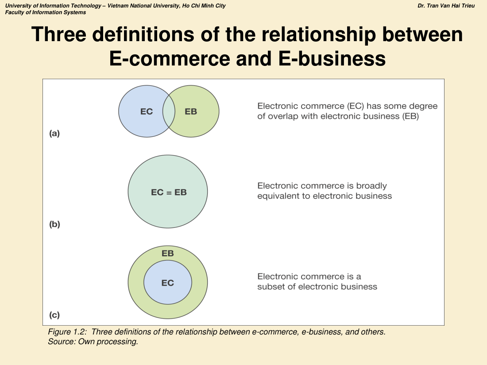
Hình 1.2 — Ba định nghĩa về mối quan hệ giữa E-commerce (EC) và E-business (EB):
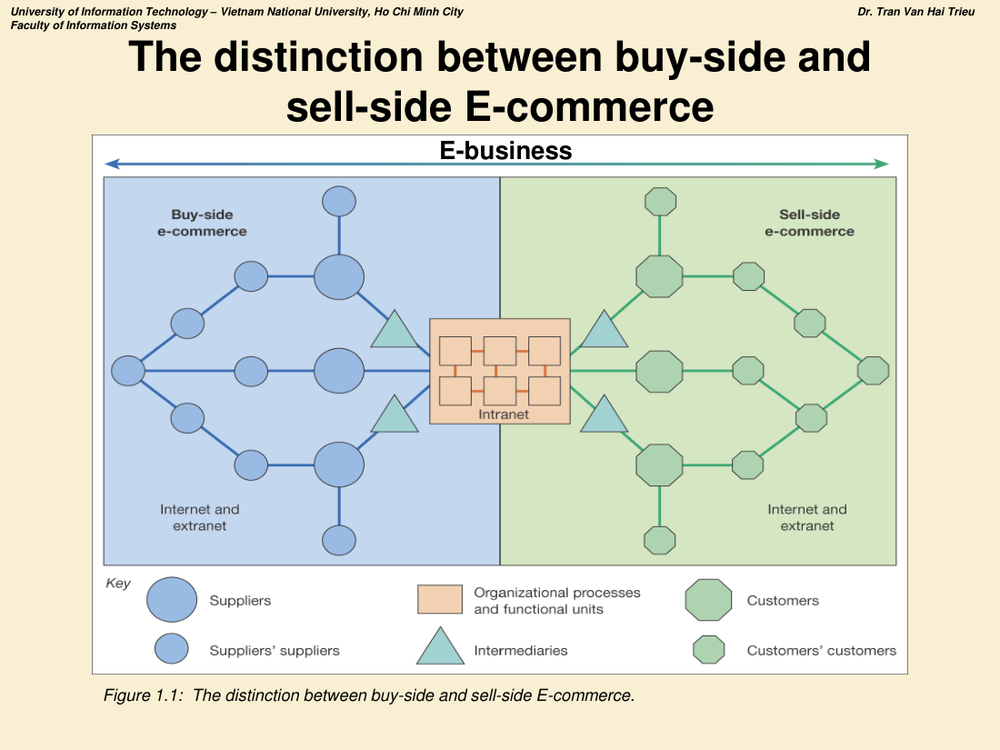
Hình 1.1 — Phân biệt buy-side và sell-side E-commerce.
Cách đọc hình: - Ở trung tâm là Intranet — các quy trình tổ chức và đơn vị chức năng của doanh nghiệp. - Bên trái (buy-side e-commerce — phía mua): Suppliers’ suppliers → Suppliers → Intermediaries → doanh nghiệp. Kết nối qua Internet và extranet. Đây là thượng nguồn (upstream), gắn với quản trị chuỗi cung ứng điện tử (e-SCM) và e-Procurement. - Bên phải (sell-side e-commerce — phía bán): doanh nghiệp → Intermediaries → Customers → Customers’ customers. Cũng qua Internet và extranet. Đây là hạ nguồn (downstream), gắn với e-Marketing / CRM. - Toàn bộ hai phía cộng với intranet nội bộ = E-business.
📌 Câu chốt đi thi: E-business = Buy-side e-commerce + Nội bộ (intranet) + Sell-side e-commerce.
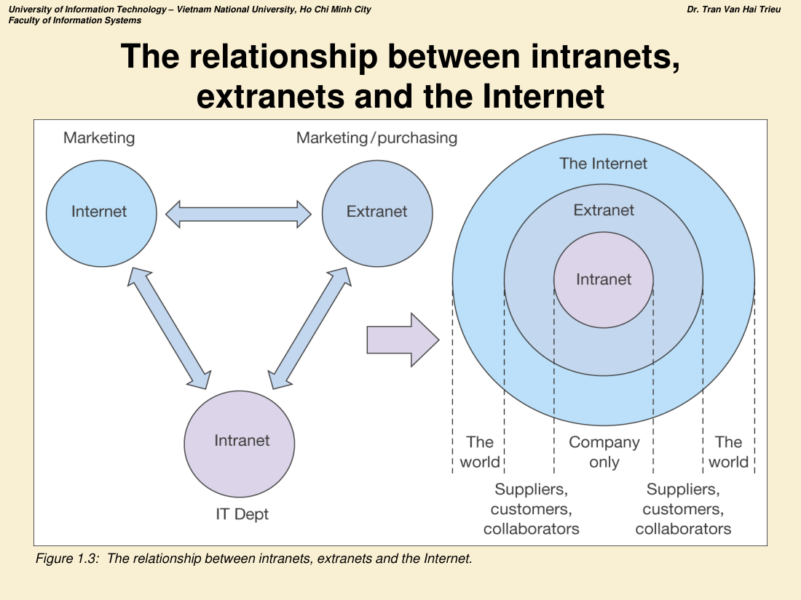
Hình 1.3 — Quan hệ giữa intranet, extranet và Internet.
| Mạng | Ai truy cập được | Bộ phận sử dụng điển hình |
|---|---|---|
| Intranet | Chỉ trong công ty (company only) | Phòng CNTT; truyền thông nội bộ |
| Extranet | Nhà cung cấp, khách hàng, đối tác cộng tác được cấp quyền | Marketing / Mua hàng (purchasing) |
| Internet | Toàn thế giới (the world) | Marketing |
Mô hình vòng tròn đồng tâm: Intranet ⊂ Extranet ⊂ Internet.
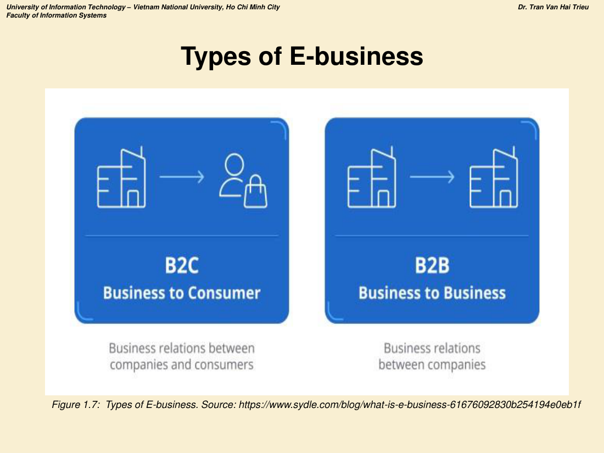
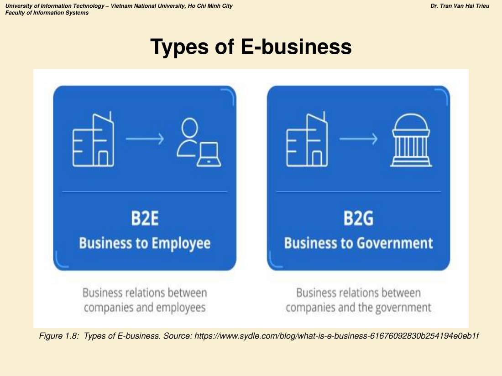
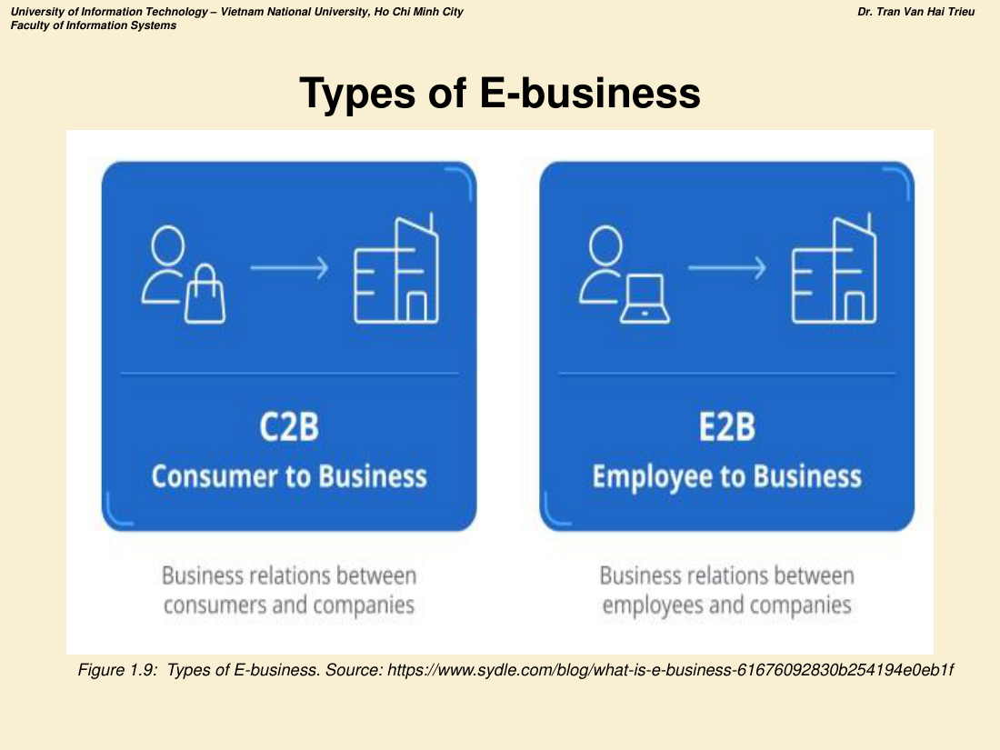
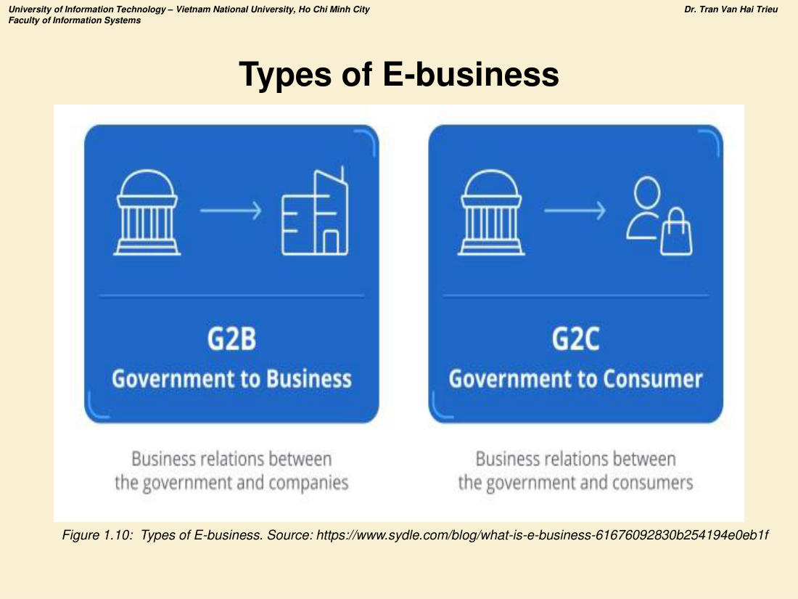
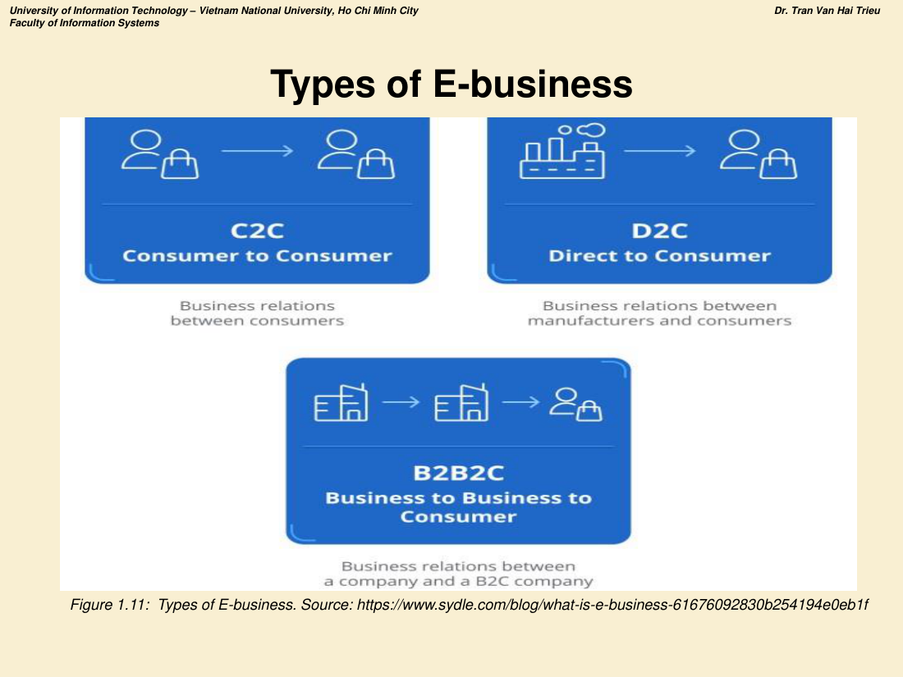
Bảng tổng hợp (Hình 1.7 – 1.11):
| Ký hiệu | Tên đầy đủ | Quan hệ | Ví dụ minh họa |
|---|---|---|---|
| B2C | Business to Consumer | Doanh nghiệp → Người tiêu dùng | Tiki, Shopee Mall, Amazon bán lẻ |
| B2B | Business to Business | Doanh nghiệp → Doanh nghiệp | Alibaba, SupplyOn, Grainger |
| B2E | Business to Employee | Doanh nghiệp → Nhân viên | Cổng nhân sự nội bộ, e-learning nội bộ |
| B2G | Business to Government | Doanh nghiệp → Chính phủ | Đấu thầu qua mạng, nộp thuế điện tử |
| C2B | Consumer to Business | Người tiêu dùng → Doanh nghiệp | Freelancer chào giá, KOL bán dịch vụ cho DN |
| E2B | Employee to Business | Nhân viên → Doanh nghiệp | Nhân viên đề xuất/khiếu nại qua hệ thống |
| G2B | Government to Business | Chính phủ → Doanh nghiệp | Cổng dịch vụ công cho DN, cấp phép online |
| G2C | Government to Consumer | Chính phủ → Người dân | Cổng dịch vụ công quốc gia, VNeID |
| C2C | Consumer to Consumer | Người tiêu dùng ↔︎ Người tiêu dùng | Chợ Tốt, eBay, Facebook Marketplace |
| D2C | Direct to Consumer | Nhà sản xuất → Người tiêu dùng | Hãng bán thẳng không qua đại lý |
| B2B2C | Business to Business to Consumer | DN → DN (B2C) → Người tiêu dùng | Nhà sản xuất bán qua sàn TMĐT tới người dùng |
| # | Ứng dụng |
|---|---|
| 1 | ERP — Enterprise Resource Planning (Hoạch định nguồn lực doanh nghiệp) |
| 2 | CRM — Customer Relationship Management (Quản trị quan hệ khách hàng) |
| 3 | SCM — Supply Chain Management (Quản trị chuỗi cung ứng) |
| 4 | IEMS — Integrated Enterprise Management System (Hệ thống quản trị doanh nghiệp tích hợp) |
| 5 | EDI — Electronic Data Interchange (Trao đổi dữ liệu điện tử) |
| 6 | Quản lý kho / tồn kho & mua hàng |
| 7 | Mạng xã hội / Quảng cáo trực tuyến |
| 8 | E-procurement / E-banking / E-commerce / E-marketplace |
| 9 | Quản trị nguồn nhân lực (HRM) |
| 10 | Hệ thống đặt chỗ (Booking system) |
(Nguồn: Hadi Putra & Santoso, Heliyon, 2020)
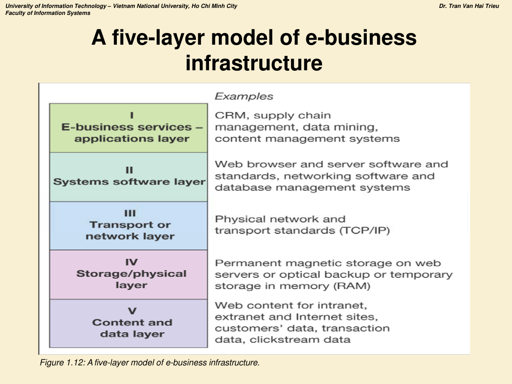
Hình 1.12 — A five-layer model of e-business infrastructure.
| Lớp | Tên lớp | Ví dụ |
|---|---|---|
| I | E-business services — applications layer (Dịch vụ E-business — lớp ứng dụng) | CRM, SCM, khai phá dữ liệu (data mining), hệ quản trị nội dung (CMS) |
| II | Systems software layer (Lớp phần mềm hệ thống) | Trình duyệt & phần mềm máy chủ web và chuẩn của chúng, phần mềm mạng, hệ quản trị CSDL |
| III | Transport or network layer (Lớp truyền tải/mạng) | Mạng vật lý và chuẩn truyền tải (TCP/IP) |
| IV | Storage/physical layer (Lớp lưu trữ/vật lý) | Lưu trữ từ tính vĩnh viễn trên web server, sao lưu quang học, lưu tạm trên RAM |
| V | Content and data layer (Lớp nội dung & dữ liệu) | Nội dung web cho intranet/extranet/Internet, dữ liệu khách hàng, dữ liệu giao dịch, dữ liệu clickstream |
💡 Mẹo nhớ: đi từ trên xuống là Ứng dụng → Phần mềm hệ thống → Mạng → Lưu trữ → Nội dung/Dữ liệu.
Ba giai đoạn tiến hóa của Internet (1961 – nay):
| Giai đoạn | Thời gian | Nội dung |
|---|---|---|
| Innovation Phase (Đổi mới) | 1961–1974 | Tạo ra các khối xây dựng nền tảng |
| Institutionalization Phase (Thể chế hóa) | 1975–1995 | Các định chế lớn cấp kinh phí và hợp thức hóa |
| Commercialization Phase (Thương mại hóa) | 1995–nay | Các tập đoàn tư nhân tiếp quản, mở rộng đường trục và dịch vụ nội vùng |
Ba khái niệm công nghệ then chốt: 1. Packet switching (chuyển mạch gói) 2. Giao thức TCP/IP 3. Client/server computing
Internet được định nghĩa là mạng: dùng địa chỉ IP, hỗ trợ TCP/IP, cung cấp dịch vụ cho người dùng theo cách tương tự hệ thống điện thoại.
Địa chỉ IP:
| IPv4 | IPv6 | |
|---|---|---|
| Độ dài | 32 bit | 128 bit |
| Dạng | 4 nhóm số cách nhau bởi dấu chấm, ví dụ
201.61.186.227 |
— |
| Không gian địa chỉ | ~4 tỷ | tới ~1 triệu tỷ (1 quadrillion) |
| Ghi chú | Địa chỉ lớp C: 3 nhóm đầu xác định mạng, nhóm cuối xác định máy | — |
Domain Name, DNS và URL: - Domain
name: địa chỉ IP được biểu diễn bằng ngôn ngữ tự nhiên. -
DNS (Domain Name System): cho phép chuyển địa chỉ IP số
sang ngôn ngữ tự nhiên. - URL (Uniform Resource
Locator): địa chỉ trình duyệt dùng để xác định vị trí nội dung
trên Web. Ví dụ: https://vnexpress.net/.
Internet tăng trưởng mà không đổ vỡ là nhờ: 1. Mô hình client/server 2. Kiến trúc phân lớp hình đồng hồ cát (hourglass) gồm 4 tầng: - Network Technology Substrates - Transport Services and Representation Standards - Middleware Services - Applications
Internet Backbone: cáp quang (hàng trăm sợi thủy tinh dùng ánh sáng truyền dữ liệu) → tốc độ nhanh hơn, băng thông lớn hơn, cáp mỏng nhẹ hơn, ít nhiễu hơn, an toàn dữ liệu hơn. Do Tier 1 ISP (transit ISP) vận hành; cáp quang biển và liên kết vệ tinh.
IXP (Internet Exchange Points): trung tâm vùng nơi các Tier 1 ISP kết nối vật lý với nhau và với Tier 2 ISP. Tier 2 cung cấp truy cập cho Tier 3 ISP. Trước đây gọi là NAP hoặc MAE.
Tier 3 ISP: nhà cung cấp bán lẻ (Comcast, AT&T, Verizon…) — dịch vụ: Narrowband, Broadband, DSL, Cable Internet, Satellite Internet.
Truy cập Internet di động: hai loại — dựa trên điện thoại (4G, 5G tốc độ tới 10 Gbps+, 6G…) và dựa trên mạng máy tính không dây (Wi-Fi 802.11, WiMax, Bluetooth).
IoT (Internet of Things): vật thể kết nối Internet qua cảm biến/RFID; “smart things”; các vấn đề về chuẩn tương tác; mối lo bảo mật và quyền riêng tư.
ICANN, IETF, IRTF, IESG, IAB, ISOC, IGF, W3C, NOGs.
Lịch sử Web: - 1989–1991: Tim Berners-Lee tại CERN phát minh Web (HTML, HTTP, web server, web browser). - 1993: Mosaic — trình duyệt có GUI (Andreessen, NCSA). - 1994: Netscape Navigator — trình duyệt thương mại đầu tiên. - 1995: Microsoft Internet Explorer. - Hiện nay: Chrome, Firefox, Microsoft Edge, Opera…
Hypertext: văn bản có nhúng liên kết; dùng HTTP và URL để định vị tài nguyên.
Ngôn ngữ đánh dấu:
| HTML | XML | |
|---|---|---|
| Bản chất | Tập thẻ (tag) định sẵn để định dạng văn bản | Ngôn ngữ mô tả dữ liệu và thông tin |
| Thẻ | Cố định | Do người dùng tự định nghĩa |
| Vai trò | Điều khiển giao diện trang web, dùng chung với CSS; HTML5 là bản mới nhất | Mô tả cấu trúc dữ liệu |
Web server software: cho phép máy tính phân phát trang web tới client theo yêu cầu HTTP. Năng lực cơ bản: dịch vụ bảo mật, FTP, công cụ tìm kiếm, thu thập dữ liệu. Web client: bất kỳ thiết bị nào nối Internet có thể gửi yêu cầu HTTP và hiển thị trang HTML.
Communication tools · Search engines · Downloadable & streaming media · Web 2.0 · VR/AR · Intelligent digital assistants…
Công cụ truyền thông: E-mail (ứng dụng được dùng nhiều nhất), Messaging/Instant messaging, Online message boards, Internet telephony (VOIP), Video conferencing/telepresence.
Cách hoạt động của Search Engine — 3 tác vụ liên tục:
| Bước | Tên | Mô tả |
|---|---|---|
| 1 | Crawling (Thu thập) | Dùng “crawler” — chương trình truy cập mọi trang của mọi site để xác định nội dung |
| 2 | Indexing (Lập chỉ mục) | Tạo chỉ mục cho toàn bộ nội dung lưu trên mạng |
| 3 | Ranking (Xếp hạng) | Xếp hạng kết quả dựa trên mức liên quan (relevancy) và uy tín/độ phổ biến (authority) |
Search engine còn đóng vai trò: công cụ mua sắm, phương tiện quảng cáo (search engine marketing), công cụ bên trong site TMĐT. Nhà cung cấp hàng đầu: Google, Bing.
Web 2.0: Online social networks; Blogs; Wikis (viết tài liệu tập thể — Wikipedia).
VR & AR: - VR (Virtual Reality): đưa người dùng vào thế giới ảo, thường qua kính HMD (VD: PlayStation VR). - AR (Augmented Reality): phủ vật thể ảo lên thế giới thực qua thiết bị di động hoặc HMD.
Intelligent Digital Assistants: dùng ngôn ngữ tự nhiên, giao diện hội thoại, lệnh bằng giọng nói, nhận biết ngữ cảnh. VD: Siri, Google Now, Google Assistant, ChatGPT.
Mobile Apps: bùng nổ; là phương tiện giải trí phổ biến nhất, vượt TV; công cụ mua sắm luôn hiện diện; hầu hết 100 thương hiệu hàng đầu đều có app. Nền tảng: iOS, Android. Chợ ứng dụng: Google Play, App Store, Amazon Appstore.
Nội dung chương (6 phần): 1. Giới thiệu về chiến lược E-business 2. Công nghệ Web server và E-mail 3. Các mô hình doanh thu của E-business 4. Mua sắm trực tuyến (Online shopping) 5. Cộng đồng ảo (Virtual communities) 6. Chiến lược và lập kế hoạch E-marketing
Michael Porter (2001): “Vấn đề then chốt không phải là CÓ triển khai công nghệ Internet hay không — doanh nghiệp không có lựa chọn nào khác nếu muốn giữ tính cạnh tranh — mà là TRIỂN KHAI NHƯ THẾ NÀO.”
Chiến lược là một kế hoạch hành động được thiết kế để đạt một mục tiêu cụ thể.
Bốn cách diễn đạt: - Xác định cách chúng ta sẽ đạt mục tiêu. - Ấn định việc phân bổ nguồn lực để đạt mục tiêu. - Lựa chọn phương án chiến lược ưu tiên để cạnh tranh trong một thị trường. - Cung cấp kế hoạch dài hạn cho sự phát triển của tổ chức.
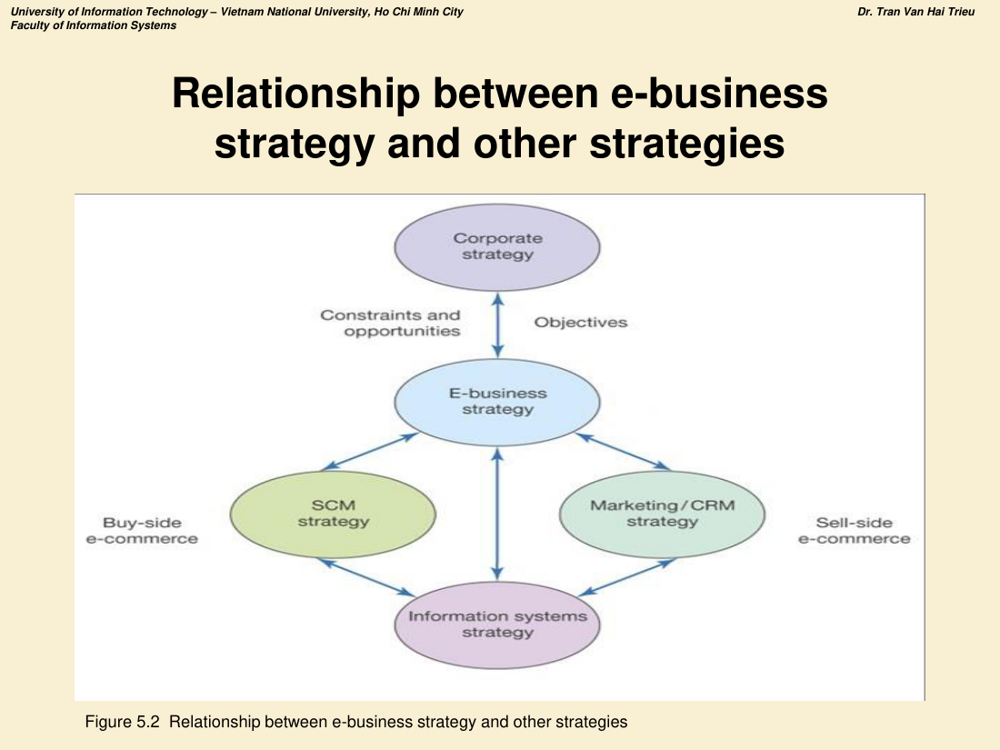
Hình 5.2 — Relationship between e-business strategy and other strategies.
Cách đọc hình: - Corporate strategy (chiến lược công ty) ở trên cùng: đưa xuống Objectives (mục tiêu) và nhận lại Constraints and opportunities (ràng buộc & cơ hội). - E-business strategy ở trung tâm. - Bên trái: SCM strategy ⇒ tương ứng Buy-side e-commerce. - Bên phải: Marketing/CRM strategy ⇒ tương ứng Sell-side e-commerce. - Bên dưới: Information systems strategy — kết nối hai bên và nối thẳng lên E-business strategy.
📌 Ý chốt: Chiến lược E-business nằm giữa, vừa chịu định hướng của chiến lược công ty, vừa tích hợp chiến lược SCM (mua), Marketing/CRM (bán) và chiến lược HTTT.
Chiến lược e-commerce xác định cách chúng ta: - Đạt chỉ tiêu leads và doanh số của kênh: Acquisition (thu hút), Retention (giữ chân), Conversion (chuyển đổi), Service (dịch vụ), Profitability (lợi nhuận) - Truyền thông lợi ích của việc dùng kênh - Ưu tiên sản phẩm bán qua kênh - Ưu tiên nhóm khách hàng nhắm tới qua kênh - Chọn đối tác cho kênh này
Xác định cách chúng ta: - Tự động hóa quy trình nội bộ - Liên kết hệ thống quản trị nguồn lực nội bộ với hệ thống mua hàng bên ngoài - Ưu tiên nhà cung cấp/đối tác cộng tác qua kênh này - Ưu tiên các ứng dụng e-SCM — xây dựng lộ trình (roadmap)
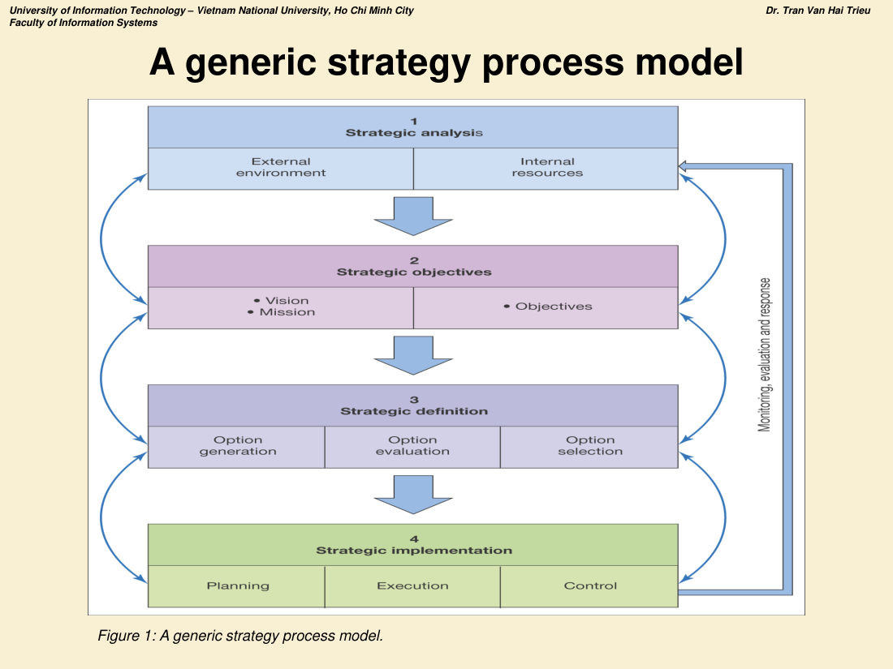
Hình 1 — A generic strategy process model.
4 giai đoạn (học thuộc!):
| # | Giai đoạn | Thành phần |
|---|---|---|
| 1 | Strategic analysis (Phân tích chiến lược) | External environment · Internal resources |
| 2 | Strategic objectives (Mục tiêu chiến lược) | Vision · Mission · Objectives |
| 3 | Strategic definition (Định nghĩa chiến lược) | Option generation · Option evaluation · Option selection |
| 4 | Strategic implementation (Triển khai chiến lược) | Planning · Execution · Control |
Bên phải toàn mô hình là vòng lặp “Monitoring, evaluation and response” (Giám sát – đánh giá – phản hồi) quay ngược về cả 4 giai đoạn; giữa các giai đoạn cũng có mũi tên hai chiều ⇒ quy trình lặp, không tuyến tính cứng.
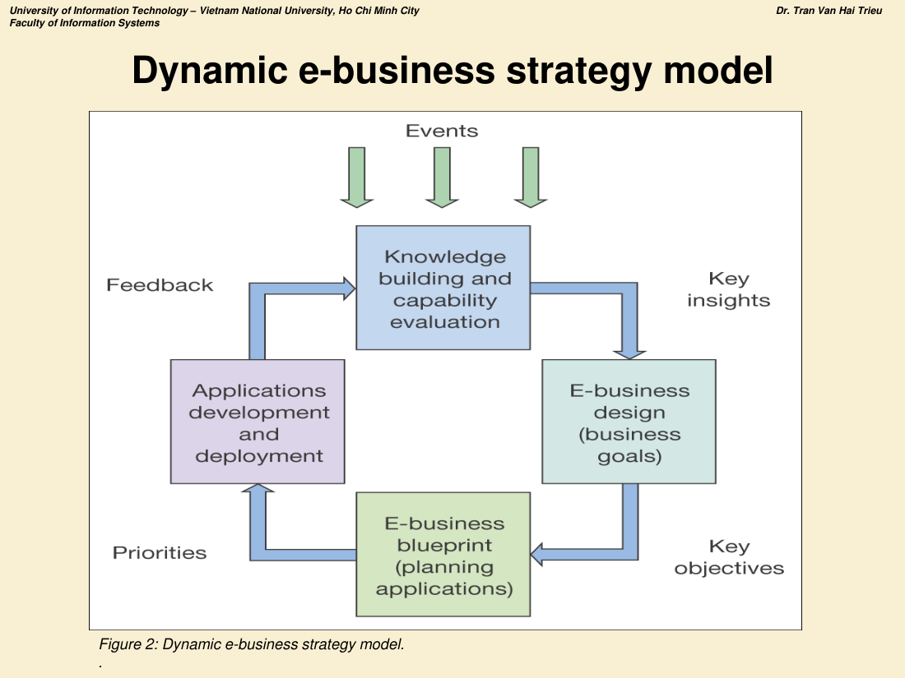
Hình 2 — Dynamic e-business strategy model.
Vòng lặp 4 bước, chịu tác động từ “Events” (sự kiện) bên ngoài:
📌 So sánh với mô hình tổng quát: Mô hình động nhấn mạnh tính liên tục, phản hồi nhanh và đáp ứng sự kiện, phù hợp môi trường số thay đổi nhanh; mô hình tổng quát nhấn mạnh trình tự phân tích → mục tiêu → định nghĩa → triển khai.
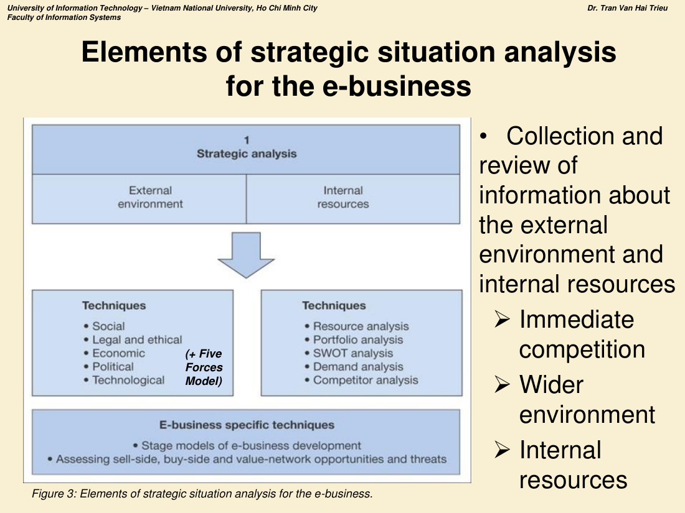
Hình 3 — Elements of strategic situation analysis for the e-business.
Bản chất: Thu thập và rà soát thông tin về môi trường bên ngoài và nguồn lực bên trong, gồm 3 nhóm: cạnh tranh trực tiếp (immediate competition) · môi trường rộng (wider environment) · nguồn lực nội bộ (internal resources).
| Nhóm | Kỹ thuật |
|---|---|
| External environment | Social · Legal and ethical · Economic · Political · Technological (SLEPT/PEST) + Five Forces Model |
| Internal resources | Resource analysis · Portfolio analysis · SWOT analysis · Demand analysis · Competitor analysis |
| E-business specific | Stage models of e-business development · Đánh giá cơ hội & nguy cơ ở sell-side, buy-side và value-network |
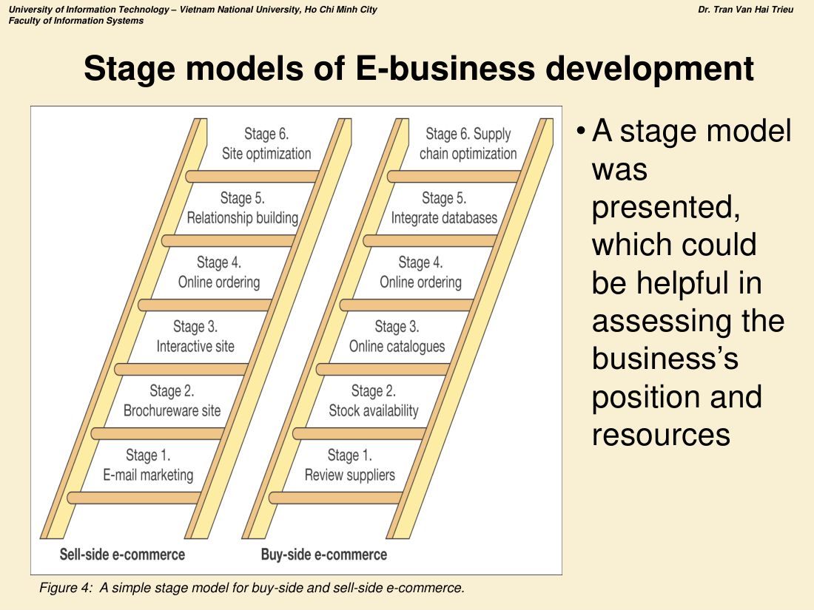
Hình 4 — A simple stage model for buy-side and sell-side e-commerce.
| Giai đoạn | Sell-side e-commerce | Buy-side e-commerce |
|---|---|---|
| Stage 1 | E-mail marketing | Review suppliers (rà soát nhà cung cấp) |
| Stage 2 | Brochureware site (web giới thiệu) | Stock availability (tra cứu tồn kho) |
| Stage 3 | Interactive site (web tương tác) | Online catalogues (catalogue trực tuyến) |
| Stage 4 | Online ordering (đặt hàng trực tuyến) | Online ordering |
| Stage 5 | Relationship building (xây dựng quan hệ) | Integrate databases (tích hợp CSDL) |
| Stage 6 | Site optimization (tối ưu website) | Supply chain optimization (tối ưu chuỗi cung ứng) |
Công dụng: đánh giá vị trí hiện tại và nguồn lực của doanh nghiệp, từ đó xác định bước tiếp theo.
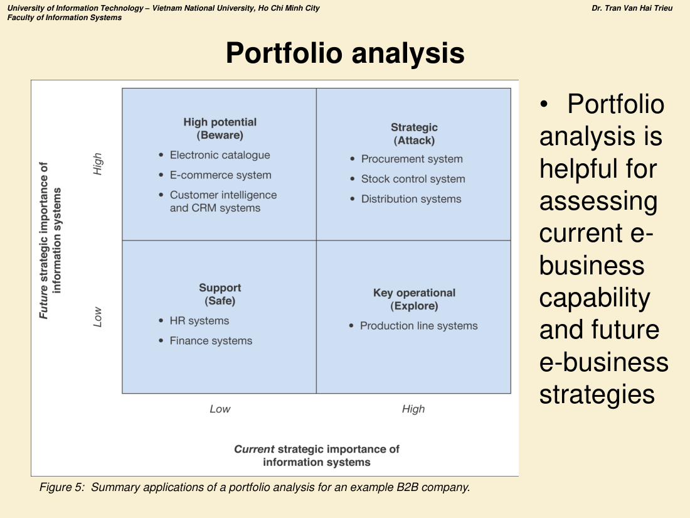
Hình 5 — Summary applications of a portfolio analysis for an example B2B company.
Ma trận 2 chiều: Tầm quan trọng chiến lược HIỆN TẠI (trục ngang) × Tầm quan trọng chiến lược TƯƠNG LAI (trục dọc).
| Current: Low | Current: High | |
|---|---|---|
| Future: High | HIGH POTENTIAL (Beware — Thận trọng) Electronic catalogue · E-commerce system · Customer intelligence & CRM |
STRATEGIC (Attack — Tấn công) Procurement system · Stock control system · Distribution systems |
| Future: Low | SUPPORT (Safe — An toàn) HR systems · Finance systems |
KEY OPERATIONAL (Explore — Khai thác) Production line systems |
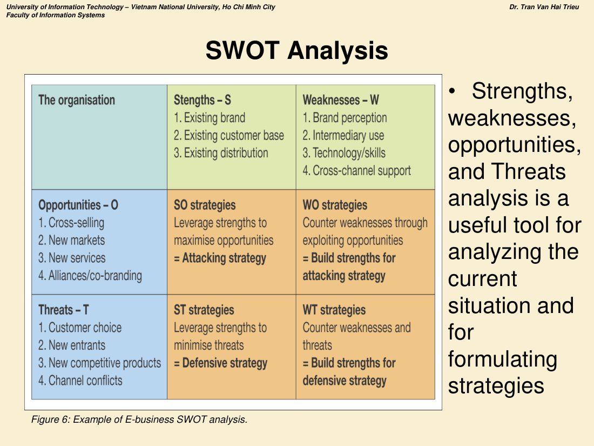
Hình 6 — Example of E-business SWOT analysis.
| Strengths (S) 1. Thương hiệu sẵn có 2. Tập khách hàng sẵn có 3. Hệ thống phân phối sẵn có |
Weaknesses (W) 1. Nhận thức thương hiệu 2. Phụ thuộc trung gian 3. Công nghệ/kỹ năng 4. Hỗ trợ đa kênh |
|
|---|---|---|
| Opportunities (O) 1. Bán chéo 2. Thị trường mới 3. Dịch vụ mới 4. Liên minh/đồng thương hiệu |
SO strategies: Tận dụng điểm mạnh để tối đa hóa cơ hội = Chiến lược tấn công (Attacking) | WO strategies: Khắc phục điểm yếu bằng cách khai thác cơ hội = Xây điểm mạnh để tấn công |
| Threats (T) 1. Khách hàng có nhiều lựa chọn 2. Đối thủ mới gia nhập 3. Sản phẩm cạnh tranh mới 4. Xung đột kênh |
ST strategies: Tận dụng điểm mạnh để giảm thiểu nguy cơ = Chiến lược phòng thủ (Defensive) | WT strategies: Khắc phục điểm yếu và nguy cơ = Xây điểm mạnh để phòng thủ |
Việc chọn chiến lược E-business dựa trên cân bằng giữa năng lực nội bộ và các lực lượng bên ngoài. Ma trận đánh giá năng lực bên ngoài vs năng lực bên trong cho phép doanh nghiệp xác định mình nên là early adopter (người tiên phong) hay later adopter (người theo sau).
Hình 8 — Competitive Environment Analysis: Porter’s five forces.
Xoay quanh “The business” ở trung tâm:
📌 Tác động của Internet lên 5 lực lượng: Internet thường làm tăng quyền lực khách hàng (dễ so sánh giá), hạ rào cản gia nhập, tăng cạnh tranh và tăng nguy cơ thay thế — đây là lập luận trung tâm của Porter (2001).
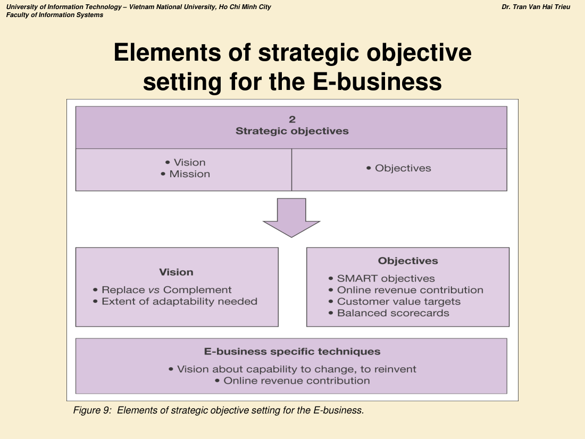
Hình 9 — Elements of strategic objective setting for the E-business.
| Khối | Nội dung |
|---|---|
| Vision | Replace vs Complement (Thay thế hay bổ trợ kênh truyền thống) · Mức độ thích ứng cần thiết |
| Objectives | SMART objectives · Online revenue contribution · Customer value targets · Balanced scorecards |
| E-business specific techniques | Tầm nhìn về năng lực thay đổi, tái tạo (reinvent) doanh nghiệp · Online revenue contribution |
| Cách | Nội dung |
|---|---|
| Adding value (Gia tăng giá trị) | Sản phẩm, dịch vụ chất lượng tốt hơn |
| Reducing cost (Giảm chi phí) | Làm quy trình kinh doanh hiệu quả hơn |
| Managing risks (Quản trị rủi ro) | Cải thiện luồng thông tin và tính sẵn có của thông tin |
| Creating new reality (Tạo thực tại mới) | Tạo cách thức mới cho sản phẩm/dịch vụ |
| Chữ | Nghĩa | Câu hỏi kiểm tra |
|---|---|---|
| Specific | Cụ thể | Mục tiêu đủ chi tiết để đo lường được vấn đề/cơ hội thực tế chưa? |
| Measurable | Đo lường được | Có gán được thuộc tính định lượng hoặc định tính để tạo chỉ số không? |
| Actionable (Achievable) | Hành động được / Khả thi | Thông tin có dùng để cải thiện hiệu quả không? Nếu mục tiêu không làm thay đổi hành vi nhân viên để cải thiện hiệu suất thì gần như vô nghĩa! |
| Relevant | Phù hợp | Thông tin có áp dụng được cho đúng vấn đề nhà quản lý đang gặp không? |
| Time-related | Gắn thời gian | Chỉ số/mục tiêu có gắn với khung thời gian xác định không? |
Online Revenue Contribution: % doanh thu công ty được tạo ra trực tiếp qua giao dịch trực tuyến. Với B2B, cần tính thêm doanh thu gián tiếp (web ảnh hưởng đến quyết định mua offline).
(Bảng này cực kỳ hay ra thi dạng “hãy đề xuất mục tiêu, chiến lược và KPI”)
| # | Objectives (Mục tiêu) | Strategies (Chiến lược đạt mục tiêu) | KPI / Critical success factors |
|---|---|---|---|
| 1 | Phát triển doanh thu từ thị trường địa lý mới | Tạo hệ thống e-commerce cho sản phẩm chuẩn và chỉ định đại lý cho các thị trường này | Đạt doanh thu hợp nhất £1 triệu vào cuối năm. Online revenue contribution 70% |
| 2 | Tăng doanh thu từ các đơn mua nhỏ lẻ của nhà bán lẻ | Tạo hệ thống e-commerce cho sản phẩm chuẩn | Tăng doanh số qua nhà bán lẻ từ 15% lên 25% tổng doanh thu trong năm 2. Online revenue contribution 30% |
| 3 | Cải thiện hiệu quả tìm nguồn nguyên vật liệu | Phát triển hệ thống e-procurement | Giảm chi phí mua hàng 5% cuối năm 1, 10% năm 2 |
| 4 | Rút ngắn thời gian ra thị trường và giảm chi phí phát triển sản phẩm mới | Dùng công cụ cộng tác và quản lý dự án | Giảm chi phí và thời gian ra thị trường trung bình 10% vào năm 3 |
| 5 | Bảo vệ & tăng hiệu quả mạng lưới nhà phân phối và đối tác | Tạo extranet cho đối tác, hướng tới hỗ trợ không giấy tờ (paperless) | Giảm chi phí bán hàng 30% tại từng thị trường trong 5 thị trường địa lý chính |
Scorecard là khung toàn diện để thiết lập và giám sát hiệu quả kinh doanh.
4 nhóm chỉ số: 1. Customer issues (Khách hàng) 2. Internal efficiency (Hiệu quả nội bộ) 3. Financial (Tài chính) 4. Innovation (Đổi mới / học hỏi & phát triển)
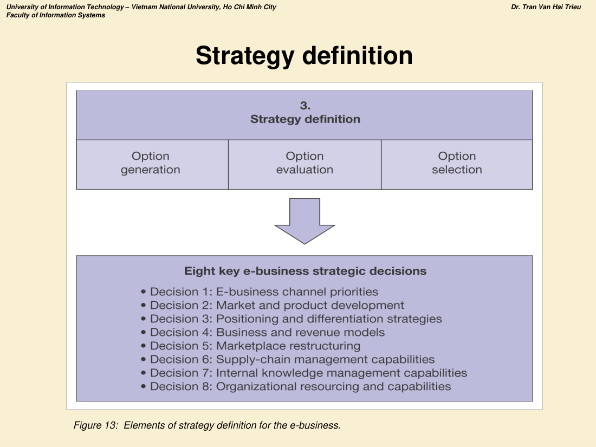
Hình 13 — Elements of strategy definition for the e-business.
Quy trình: Option generation → Option evaluation → Option selection, dẫn tới 8 quyết định chiến lược E-business then chốt:
| # | Quyết định |
|---|---|
| 1 | E-business channel priorities — Ưu tiên kênh |
| 2 | Market and product development — Phát triển thị trường và sản phẩm |
| 3 | Positioning and differentiation strategies — Định vị và khác biệt hóa |
| 4 | Business and revenue models — Mô hình kinh doanh và doanh thu |
| 5 | Marketplace restructuring — Tái cấu trúc thị trường |
| 6 | Supply-chain management capabilities — Năng lực quản trị chuỗi cung ứng |
| 7 | Internal knowledge management capabilities — Năng lực quản trị tri thức nội bộ |
| 8 | Organizational resourcing and capabilities — Nguồn lực và năng lực tổ chức |
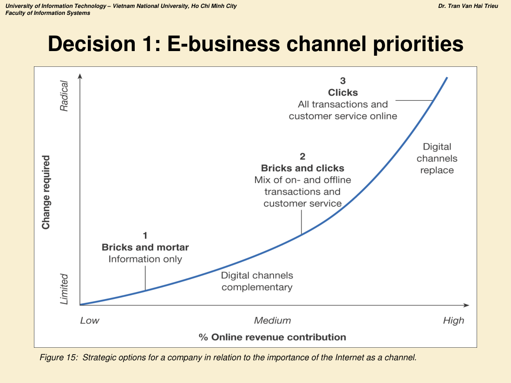
Hình 15 — Strategic options for a company in relation to the importance of the Internet as a channel.
Đồ thị: trục ngang = % Online revenue contribution (Low → High); trục dọc = Change required (Limited → Radical).
| # | Phương án | Đặc điểm | Vị trí |
|---|---|---|---|
| 1 | Bricks and mortar | Information only — web chỉ cung cấp thông tin | Online revenue thấp, thay đổi hạn chế. Digital channels complementary (kênh số bổ trợ) |
| 2 | Bricks and clicks | Kết hợp giao dịch và dịch vụ khách hàng on- và offline | Mức trung bình |
| 3 | Clicks (pure play) | Toàn bộ giao dịch và dịch vụ khách hàng trực tuyến | Online revenue cao, thay đổi triệt để (radical). Digital channels replace (kênh số thay thế) |
Right-channeling (Điều hướng kênh đúng): xây dựng chiến lược và chiến thuật tiếp xúc tích hợp nhiều kênh, được công nghệ hỗ trợ, để tiếp cận: - Đúng người (the right person) - Đúng thời điểm (at the right time) - Đúng kênh truyền thông (using the right communications channel) - Với chào hàng/sản phẩm/thông điệp phù hợp (with a relevant offer, product or message)
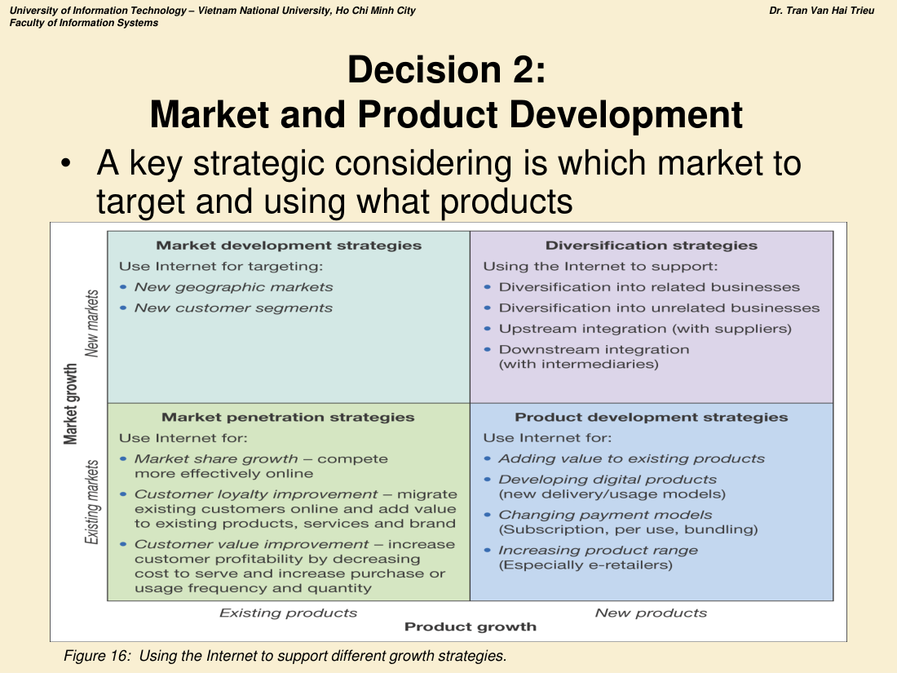
Hình 16 — Using the Internet to support different growth strategies.
| Existing products (SP hiện có) | New products (SP mới) | |
|---|---|---|
| New markets (Thị trường mới) |
MARKET DEVELOPMENT Dùng Internet nhắm tới: • Thị trường địa lý mới • Phân khúc khách hàng mới |
DIVERSIFICATION Dùng Internet hỗ trợ: • Đa dạng hóa vào ngành liên quan • Đa dạng hóa vào ngành không liên quan • Tích hợp ngược (upstream) với nhà cung cấp • Tích hợp xuôi (downstream) với trung gian |
| Existing markets (Thị trường hiện có) |
MARKET PENETRATION Dùng Internet để: • Tăng thị phần — cạnh tranh hiệu quả hơn trên mạng • Tăng lòng trung thành — chuyển KH hiện hữu lên online, gia tăng giá trị cho SP/DV/thương hiệu • Tăng giá trị khách hàng — tăng lợi nhuận/KH bằng cách giảm chi phí phục vụ và tăng tần suất, số lượng mua |
PRODUCT DEVELOPMENT Dùng Internet để: • Gia tăng giá trị cho sản phẩm hiện có • Phát triển sản phẩm số (mô hình phân phối/sử dụng mới) • Thay đổi mô hình thanh toán (thuê bao, trả theo lần dùng, bán gói) • Mở rộng danh mục sản phẩm (đặc biệt với e-retailer) |
Sau khi xác định thị trường, cần định vị dịch vụ e-commerce so với đối thủ.
Công thức cảm nhận thương hiệu của khách hàng: Customer Value = (Product quality × Service quality) ÷ (Price × Fulfillment time)
Ý nghĩa: muốn tăng giá trị cảm nhận thì hoặc tăng tử số (chất lượng SP × chất lượng DV) hoặc giảm mẫu số (giá × thời gian giao hàng). Chiến lược cần rà soát xem mức tăng chất lượng SP và DV có được bù lại bằng việc giảm giá và giảm thời gian hay không.
| Khái niệm | Định nghĩa |
|---|---|
| Disintermediation (Phi trung gian hóa) | Loại bỏ trung gian như nhà phân phối, môi giới — những bên trước đây nối doanh nghiệp với khách hàng |
| Re-intermediation (Tái trung gian hóa) | Tạo trung gian mới giữa khách hàng và nhà cung cấp, cung cấp dịch vụ như tìm kiếm nhà cung cấp và đánh giá sản phẩm |
| Counter-mediation (Đối trung gian hóa) | Một doanh nghiệp đã có vị thế tự tạo ra một trung gian mới (để cạnh tranh với các trung gian độc lập) |
Ba câu hỏi rà soát: 1. Làm sao tích hợp chặt hơn với nhà cung cấp, ví dụ tạo extranet để giảm chi phí và rút ngắn thời gian ra thị trường? 2. Loại vật tư và loại tương tác nào với nhà cung cấp nên hỗ trợ qua e-procurement? 3. Có thể tham gia sàn giao dịch trực tuyến để giảm chi phí không?
Bốn phương án tổ chức:
| Phương án | Mức độ |
|---|---|
| In-house division (Bộ phận nội bộ) | Integration — tích hợp |
| Joint venture (Liên doanh) | Mixed — hỗn hợp |
| Strategic partnership (Đối tác chiến lược) | Mixed — hỗn hợp |
| Spin-off (Tách công ty riêng) | Separation — tách biệt |
Các thay đổi khác cần xem xét: cải tiến quy trình chiến lược & hiệu suất; hạ tầng e-commerce; sự ủng hộ của lãnh đạo cấp cao; tích hợp thị trường; mức tập trung vào thị trường trực tuyến.
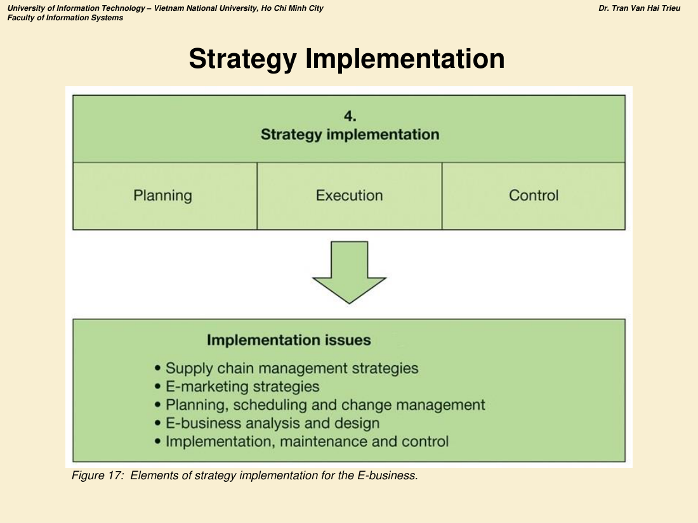
Hình 17 — Elements of strategy implementation for the E-business.
Ba thành phần: Planning · Execution · Control
Năm nhóm vấn đề triển khai (Implementation issues): 1. Supply chain management strategies 2. E-marketing strategies 3. Planning, scheduling and change management 4. E-business analysis and design 5. Implementation, maintenance and control
Nguyên nhân bề mặt: - Đánh giá quá cao tốc độ thị trường chấp nhận đổi mới dot.com - Sai thời điểm (timing errors) - Thiếu sáng tạo - Dịch vụ miễn phí (không có mô hình doanh thu) - Quá tham vọng (over ambition)
Nguyên nhân sâu xa — theo từng giai đoạn của quy trình chiến lược:
| Giai đoạn | Vấn đề |
|---|---|
| Situation Analysis | Nghiên cứu nhu cầu không đầy đủ |
| Objective setting | Không có mục tiêu hoặc mục tiêu phi thực tế |
| Strategy definition | Mô hình kinh doanh kém |
| Implementation | Vấn đề dịch vụ khách hàng và chất lượng sản phẩm |
Yếu tố thành công khi triển khai cho SME: Effective (hiệu quả) · Convenience (tiện lợi) · Manageable and under control (quản lý được, trong tầm kiểm soát) · Brand image (hình ảnh thương hiệu) · Commitment (cam kết) · Partnership (đối tác) · Process Improvement (cải tiến quy trình).
| Cách tiếp cận | Hướng | Nội dung |
|---|---|---|
| Business-alignment approach | Top-down | Bắt đầu từ chiến lược kinh doanh, xây chiến lược HTTT khớp với chiến lược kinh doanh |
| Business-impact approach | Bottom-up | Khảo sát các cơ hội HTTT mới xem chúng có mang tác động tích cực tới chiến lược kinh doanh không |
📌 Đây là luận điểm rất hay dùng để mở hoặc kết cho câu hỏi “đề xuất cải tiến quy trình kinh doanh”: chỉ đầu tư công nghệ mà không thay đổi quy trình thì không tạo ra lợi nhuận.
| # | Phần mềm | Đặc điểm chính | Tính năng then chốt | Phù hợp với ai |
|---|---|---|---|---|
| 1 | Apache | Mã nguồn mở, ~31,5% website; chạy đa hệ điều hành (Windows, Linux) | IPv6; Session tracking; FTP và HTTP/2; module tùy biến | Người mới; cần phần mềm mở & tùy biến; site WordPress lưu lượng thấp–trung bình |
| 2 | Microsoft IIS | Thiết kế riêng cho Windows; không tương thích Linux; có sẵn tính năng bảo mật Windows (Azure AD) | Tích hợp nhiều sản phẩm Microsoft; thân thiện lập trình viên; giao diện đơn giản; bảo mật tích hợp phong phú; hỗ trợ ASP.NET, CSS, JS, HTML | Dùng Windows; là developer; muốn chạy nhiều site trên một server |
| 3 | Tomcat | Tốt nhất cho ứng dụng Java; mã nguồn mở, tối ưu tốc độ | Module tùy biến; nhiều công nghệ Java (Jakarta WebSocket); xử lý dữ liệu tăng cường; mã nguồn mở | Làm việc chủ yếu với Java và nội dung động; cần phần mềm nhẹ |
| 4 | NGINX | Đã vượt Apache, >33% website; tương thích cả Linux & Windows | Tương thích nhiều ứng dụng web; tiêu thụ tài nguyên tối thiểu; cân bằng tải (load balancing); mã nguồn mở | Website lưu lượng cao; cần tối ưu hiệu năng; giải pháp tiết kiệm tài nguyên |
| 5 | LiteSpeed | Nhẹ, tập trung bảo mật; hiệu năng & khả năng mở rộng cao; chống DDoS tích hợp | Kiến trúc hướng sự kiện; tương thích nhiều hosting panel; bảo mật điều chỉnh được; tối ưu PHP | Ưu tiên tốc độ & hiệu năng; site lưu lượng cao hoặc e-commerce; dùng Linux |
| 6 | CentOS Stream | Bản phân phối Linux có nền tảng phát triển tích hợp để thử nghiệm ứng dụng; chỉ dùng với Linux | Mã nguồn mở & miễn phí; xem trước bản cập nhật RHEL; thân thiện developer | Developer làm với RHEL; chỉ dùng Linux; cần phần mềm server miễn phí |
| 7 | Caddy | Thân thiện & an toàn; mặc định dùng HTTPS; hỗ trợ Linux, Windows, macOS, Solaris, BSD | Hỗ trợ nội dung tĩnh & động; cân bằng tải; tập trung bảo mật | Cần giải pháp dễ dùng; ưu tiên bảo mật; quản trị nhiều site |
| 8 | Lighttpd | Tốt nhất cho môi trường ít tài nguyên; dùng bộ nhớ tối thiểu; thiết kế cho Linux (dùng được trên Windows nhưng không hỗ trợ gốc); hỗ trợ PHP, Python, Lua, Ruby | Cân bằng tải & HTTP proxy; tập trung hiệu quả & tốc độ; thiết kế nhẹ; HTTP/2 | Quan tâm tốc độ & mức tiêu thụ tài nguyên; làm nhiều ngôn ngữ lập trình; cần phần mềm an toàn & linh hoạt |
Ba yếu tố quyết định yêu cầu phần cứng/phần mềm web server: 1. Size of the web site — quy mô website 2. Purpose of the web site — mục đích website 3. Traffic on the web site — lưu lượng truy cập
Yêu cầu phần cứng cho site B2B và B2C: - Sẵn sàng 24/7 - Server đáng tin cậy - Server dự phòng (backup) để đảm bảo tính sẵn sàng cao - Phần mềm hiệu quả và dễ nâng cấp - Phần mềm bảo mật - Kết nối cơ sở dữ liệu
Bộ phận phần cứng ảnh hưởng lớn tới hiệu năng TMĐT: Network card · Server Processor · Server Memory · Hard Drives.
| Chức năng | Mô tả |
|---|---|
| Processing of HTTP requests | Nhận và đáp ứng yêu cầu của client về trang HTML |
| Security services (SSL/TLS) | Xác thực username & password; xử lý chứng thư số và thông tin khóa công khai/riêng tư cần cho xử lý thẻ tín dụng và thông tin bảo mật khác |
| File Transfer Protocol (FTP) | Cho phép truyền các tệp rất lớn giữa các server |
| Search engine | Lập chỉ mục nội dung site; khả năng tìm kiếm theo từ khóa |
| Data capture | Tệp nhật ký (log) mọi lượt truy cập, thời điểm, thời lượng và nguồn giới thiệu (referral) |
| Gửi, nhận và lưu trữ thư điện tử | |
| Site management tools | Tính toán và hiển thị thống kê site quan trọng: khách truy cập duy nhất, số yêu cầu trang, nguồn gốc yêu cầu; kiểm tra liên kết trên trang |
Ba giao thức email chuẩn:
| Giao thức | Tên đầy đủ | Chức năng |
|---|---|---|
| SMTP | Simple Mail Transfer Protocol | Gửi, nhận và chuyển tiếp (relay) email đi giữa người gửi và người nhận |
| IMAP | Internet Message Access Protocol | Cho phép truy cập email ở bất cứ đâu, từ bất kỳ thiết bị nào (thư vẫn nằm trên server) |
| POP3 | Post Office Protocol version 3 | Kết nối tới dịch vụ email và tải toàn bộ thư mới về máy |
Tự vận hành hay thuê ngoài mail server?
| Third-party hosting (Thuê ngoài) | Self-hosting (Tự vận hành) | |
|---|---|---|
| Trách nhiệm | Nhà cung cấp chịu trách nhiệm quản lý & bảo trì server | Doanh nghiệp tự quản lý |
| Chi phí | Hợp lý (affordable) | Cao hơn |
| Tính năng bổ sung | Lọc spam, lưu trữ trực tuyến, sao lưu email… | Tự xây |
| Lý do chọn | Tiện, rẻ | Tránh các vấn đề về quyền riêng tư, bảo mật và kiểm soát máy chủ thư |
E-mail client — hai cách truy cập thư:
| Email service (Webmail) | Email client | |
|---|---|---|
| Bản chất | Nền tảng gửi/nhận email qua giao diện web và trình duyệt | Phần mềm cài trên máy tính, gửi/nhận qua giao diện của phần mềm |
| Ví dụ | Gmail, Yahoo | Outlook |
Business model là tập hợp các hoạt động đã hoạch định (đôi khi gọi là các quy trình kinh doanh) được thiết kế để tạo ra lợi nhuận trên thị trường.
| # | Yếu tố | Câu hỏi cốt lõi | Nội dung |
|---|---|---|---|
| 1 | Value Proposition (Tuyên bố giá trị) |
“Tại sao khách hàng nên mua của bạn?” | Các value proposition TMĐT thành công: Personalization/customization; Giảm chi phí tìm kiếm sản phẩm và khám phá giá; Tạo thuận lợi cho giao dịch bằng cách quản lý việc giao hàng |
| 2 | Revenue Model (Mô hình doanh thu) |
“Bạn kiếm tiền bằng cách nào?” | Advertising (quảng cáo); Subscription (thuê bao — kèm chiến lược Freemium); Transaction fee (phí giao dịch); Sales (bán hàng); Affiliate (tiếp thị liên kết) |
| 3 | Market Opportunity (Cơ hội thị trường) |
“Bạn định phục vụ marketspace nào và quy mô bao nhiêu?” | Marketspace: khu vực có giá trị thương mại thực tế/tiềm năng mà công ty định hoạt động. Realistic market opportunity: xác định bởi tiềm năng doanh thu ở từng ngách. Thường chia nhỏ thành nhiều niche |
| 4 | Competitive Environment (Môi trường cạnh tranh) |
“Ai khác đang chiếm marketspace bạn nhắm tới?” | Gồm đối thủ trực tiếp và gián tiếp. Chịu ảnh hưởng bởi: số lượng & quy mô đối thủ, thị phần từng đối thủ, khả năng sinh lời, chính sách giá của đối thủ |
| 5 | Competitive Advantage (Lợi thế cạnh tranh) |
“Doanh nghiệp mang lợi thế đặc biệt gì vào marketspace?” | Sản phẩm có ưu việt hơn hoặc rẻ hơn đối thủ không? Khái niệm quan trọng: First-mover advantage, Complementary resources, Unfair competitive advantage, Leverage, Perfect markets |
| 6 | Market Strategy (Chiến lược thị trường) |
“Bạn quảng bá sản phẩm/dịch vụ thế nào để thu hút khách hàng mục tiêu?” | Chi tiết cách công ty thâm nhập thị trường và thu hút khách hàng. Ý tưởng hay nhất cũng thất bại nếu không được marketing đúng cách |
| 7 | Organizational Development (Phát triển tổ chức) |
“Cần cấu trúc tổ chức nào để thực hiện kế hoạch kinh doanh?” | Mô tả cách công ty tổ chức công việc — thường chia theo phòng ban chức năng; khi công ty lớn lên, tuyển dụng chuyển từ generalist sang specialist |
| 8 | Management Team (Đội ngũ quản lý) |
“Lãnh đạo công ty cần nền tảng gì?” | Đội ngũ mạnh: làm cho mô hình kinh doanh vận hành được, tạo uy tín với nhà đầu tư bên ngoài, có kiến thức chuyên biệt về thị trường và kinh nghiệm triển khai kế hoạch kinh doanh |
| Mô hình | Mô tả | Revenue model | Biến thể / Ví dụ |
|---|---|---|---|
| E-tailer (Nhà bán lẻ điện tử) | Phiên bản trực tuyến của nhà bán lẻ truyền thống | Sales | Virtual merchant (thuần online), Bricks-and-clicks, Catalog merchant, Manufacturer-direct. Rào cản gia nhập thấp |
| Community provider (Mạng xã hội) | Môi trường trực tuyến cho người cùng sở thích giao dịch, chia sẻ nội dung, giao tiếp | Hybrid: quảng cáo + thuê bao + bán hàng + phí giao dịch | Facebook, LinkedIn, Twitter, Pinterest, TikTok |
| Content provider | Nội dung số trên Web: tin tức, nhạc, video, văn bản, tác phẩm nghệ thuật | Quảng cáo, thuê bao, bán hàng hóa số. Chìa khóa thành công là SỞ HỮU nội dung | Biến thể: Syndication, Aggregators |
| Portal | Tìm kiếm + gói tích hợp nội dung và dịch vụ | Quảng cáo, phí giới thiệu, phí giao dịch, thuê bao dịch vụ cao cấp | General (AOL, MSN); Specialized (Sailnet); Search (Google, Bing) |
| Transaction broker | Xử lý giao dịch trực tuyến thay người tiêu dùng; giá trị cốt lõi là tiết kiệm thời gian và tiền bạc | Transaction fees | Dịch vụ tài chính, du lịch, tuyển dụng |
| Market creator | Tạo môi trường số nơi người mua và người bán gặp nhau và giao dịch | Phí giao dịch, phí truy cập cho người bán | eBay, Amazon. On-demand service / sharing economy: Uber, Airbnb, Grab |
| Service provider | Cung cấp dịch vụ trực tuyến; giá trị: tiện lợi, tiết kiệm thời gian, chi phí thấp so với nhà cung cấp truyền thống | Bán dịch vụ, phí thuê bao, quảng cáo, bán dữ liệu marketing | Google Maps, Gmail, Office 365 |
Hai nhóm lớn: Net marketplaces và Private industrial network.
| Mô hình | Mô tả | Revenue model | Ví dụ |
|---|---|---|---|
| E-Distributor | Phiên bản của cửa hàng bán lẻ/bán sỉ; hàng MRO (maintenance-repair-operation) và hàng gián tiếp; do MỘT công ty sở hữu phục vụ nhiều khách hàng | Sales of goods | Grainger |
| E-Procurement | Tạo thị trường số nơi các bên giao dịch hàng gián tiếp; nhà cung cấp dịch vụ B2B, SaaS và PaaS; lợi thế quy mô (scale economies) | Service fees, quản lý chuỗi cung ứng, dịch vụ hoàn tất đơn | Amazon (AWS) |
| Exchange (Sàn giao dịch) | Thị trường số theo ngành dọc (vertical) cho đầu vào trực tiếp | Transaction, commission fees | Go2Paper. Tạo cạnh tranh giá gay gắt giữa nhà cung cấp; nhiều sàn đã sụt giảm mạnh |
| Industry Consortia (Hiệp hội ngành) | Thị trường số dọc do ngành sở hữu, mở cho nhà cung cấp được chọn lọc; thành công hơn Exchange vì được các “ông lớn” bảo trợ và củng cố hành vi mua hàng truyền thống | Transaction, commission fees | SupplyOn |
| Private Industrial Network | Mạng số dùng để điều phối giữa các doanh nghiệp làm ăn với nhau; thường mở rộng từ hệ thống doanh nghiệp nội bộ của một công ty lớn; chỉ mời nhà cung cấp then chốt, tin cậy, dài hạn | — | Mạng lưới nhà cung cấp của Walmart |
E-commerce thay đổi cấu trúc ngành bằng cách thay đổi 5 lực lượng: 1. Cạnh tranh giữa các đối thủ hiện hữu (Rivalry) 2. Rào cản gia nhập (Barriers to entry) 3. Nguy cơ sản phẩm thay thế 4. Sức mạnh nhà cung cấp 5. Quyền thương lượng của người mua
Tập hợp các hoạt động do nhà cung cấp, nhà sản xuất, đơn vị vận chuyển, nhà phân phối và nhà bán lẻ thực hiện để biến nguyên liệu thô thành sản phẩm và dịch vụ cuối cùng.
Tác động của Internet: giảm chi phí thông tin và các chi phí giao dịch khác ⇒ tăng hiệu quả vận hành, giảm chi phí và giá, gia tăng giá trị cho khách hàng.
Các hoạt động doanh nghiệp thực hiện để tạo sản phẩm cuối cùng từ nguyên liệu đầu vào; mỗi bước tạo thêm giá trị.
Tác động của Internet: tăng hiệu quả vận hành; cho phép khác biệt hóa sản phẩm; cho phép điều phối chính xác các bước trong chuỗi.
Business strategy: Kế hoạch đạt lợi nhuận dài hạn vượt trội trên vốn đầu tư.
Khái niệm: Disruptive technologies · Digital disruption · Sustaining technology.
Bốn giai đoạn của đứt gãy (disruption): 1. Kẻ đột phá (disruptor) tung ra sản phẩm mới có chất lượng thấp hơn 2. Kẻ đột phá cải thiện sản phẩm 3. Sản phẩm mới trở nên vượt trội sản phẩm hiện hữu 4. Doanh nghiệp lâu đời mất thị phần
Là một hình thức thương mại điện tử cho phép người tiêu dùng mua trực tiếp hàng hóa/dịch vụ từ người bán qua Internet bằng trình duyệt web hoặc ứng dụng di động.
| # | Công nghệ | Nội dung / Lợi ích |
|---|---|---|
| 1 | Chatbots & Intelligent Virtual Assistants (IVAs) | Công cụ hiệu quả để tương tác với khách hàng và giảm chi phí tương tác; chạy trên website, ứng dụng di động và dịch vụ nhắn tin (WhatsApp) |
| 2 | Recommendation Systems (Hệ khuyến nghị) | Theo khảo sát PwC, ~30% người tiêu dùng sẵn sàng trả nhiều hơn cho sản phẩm được gợi ý. Người dùng bị quá tải gợi ý nhưng đánh giá cao gợi ý cá nhân hóa. Lợi ích: tăng tỷ lệ tương tác và tăng doanh số |
| 3 | AI-driven pricing tools | Đánh giá giá tức thì bằng cách so sánh với đối thủ, mức tồn kho, chính sách giao hàng. Trên thị trường cạnh tranh cao, đổi giá ngay lập tức theo đối thủ tác động lớn tới tỷ lệ chuyển đổi |
| 4 | Web scraping | Trích xuất dữ liệu từ website bằng bot hoặc API. DN TMĐT tạo ra
dữ liệu khách hàng, dữ liệu sản phẩm, dữ liệu tài
chính. Lợi ích: so sánh giá với đối thủ; hiểu hành vi mua và tìm sản phẩm có nhu cầu; xác định “whales” — người dùng đặc biệt mang lại doanh thu lớn; chạy quảng cáo nhắm mục tiêu; phân tích cảm xúc khách hàng |
| 5 | Mobile Apps | Khách hàng tương tác liên tục với thương hiệu qua app, biết được cơ hội mua mới; app cho quy trình thanh toán đơn giản |
| 6 | Supply chain visibility software | Quản lý toàn bộ chuỗi cung ứng từ giao hàng tới kho; tự động phát hành hóa đơn và theo dõi tồn kho; tạo báo cáo hỗ trợ ra quyết định; báo cáo tài chính; một số hệ thống tính được dấu chân carbon của sản phẩm |
| 7 | Warehouse automation (Tự động hóa kho) | Lợi ích: lập lịch chính xác cho bán thành phẩm và
thành phẩm; quản lý tồn kho tối ưu; báo cáo tài
chính/môi trường dễ hơn; giảm dấu chân carbon. Công nghệ: IoT (tối ưu điều kiện bảo quản, giảm chi phí năng lượng); Intelligent automation (kết hợp NLP + RPA để tự động xử lý đơn hàng); Cobots (robot cộng tác — làm 24/7, đóng gói và xếp pallet) |
| 8 | E-wallets (Ví điện tử) | Thẻ điện tử liên kết với tài khoản ngân hàng, dùng
mua hàng trên máy tính/điện thoại. Hai thành phần chính: phần
mềm và dữ liệu. Ba lợi ích: tăng tính bảo mật; đơn giản hóa quy trình thanh toán; hoàn tiền dễ, chỉ mất vài giây |
| 9 | Check-out free systems | Giúp khách mua tại cửa hàng không phải xếp hàng, dùng: computer vision, thuật toán machine learning, cảm biến thông minh, e-wallet hoặc app riêng |
| 10 | Image Search Engine | Khách chụp ảnh sản phẩm và dùng tìm kiếm ảnh ngược (reverse image search). DN tận dụng bằng cách tải ảnh cho mỗi mặt hàng. Google Images là một trong các công cụ tìm kiếm phổ biến nhất ⇒ dùng ảnh hiệu quả là chìa khóa thành công |
| 11 | VR / AR | VR tạo môi trường 3D nhân tạo để khám phá & tương tác — khách có thể thử sản phẩm ảo, bố trí nội thất trong nhà. AR cho phép xem trước sản phẩm, tăng khả năng chọn đúng sản phẩm ngay lần đầu |
Tổng quan: - Doanh số TMĐT toàn cầu dự kiến đạt 6,86 nghìn tỷ USD năm 2025 (từ 6,3 nghìn tỷ năm 2024). - Khoảng 2,8 tỷ người trên thế giới sẽ mua hàng online ít nhất một lần trong năm. - Châu Á – Thái Bình Dương dẫn đầu doanh số online toàn cầu, tăng mạnh ở Ấn Độ, Indonesia. - Giá trị đơn hàng trung bình tăng 7% so với cùng kỳ.
Cửa hàng TMĐT: - Ước tính 26–30 triệu cửa hàng TMĐT toàn cầu (nghiên cứu 2025). - Ít hơn một triệu cửa hàng tạo ra doanh thu năm đáng kể ⇒ thị trường cạnh tranh và phân mảnh cao. - Shopify vận hành hơn 4,8 triệu cửa hàng đang hoạt động; WooCommerce và Wix eCommerce thống trị nhóm doanh nghiệp nhỏ. - Khoảng 22% website mới ra mắt năm 2024 có thành phần TMĐT (giỏ hàng, thanh toán). - Nhà bán lẻ online trung bình bán qua 3 kênh trở lên.
Giỏ hàng bị bỏ (Abandoned Cart) ⭐⭐: - Tỷ lệ bỏ giỏ hàng trung bình toàn cầu: 69,8% — gần 7/10 người mua rời đi trước khi hoàn tất. - Trên di động, tỷ lệ tăng lên ~85% ⇒ thanh toán trên mobile là điểm rơi lớn nhất của hành trình mua.
Lý do hàng đầu khiến khách bỏ giỏ hàng:
| Lý do | Tỷ lệ |
|---|---|
| Chi phí phát sinh bất ngờ (phí vận chuyển, thuế) | 48% |
| Bắt buộc tạo tài khoản | 24% |
| Lo ngại bảo mật thanh toán | 18% |
| Quy trình thanh toán phức tạp/dài dòng | 17% |
Giải pháp: Cho phép guest checkout giảm tỷ lệ bỏ giỏ tới 35%; hiển thị phí vận chuyển sớm giảm đáng kể tỷ lệ rời bỏ.
Công nghệ: - Hơn 40% nhà bán lẻ đã dùng AI cho cá nhân hóa, định giá và logistics. - Khuyến nghị sản phẩm bằng AI tăng giá trị đơn hàng trung bình 15–25%. - Gần 63% tổ chức dùng generative AI báo cáo có tăng doanh thu ở đơn vị triển khai. - Mua sắm bằng giọng nói vẫn dưới 10% tổng doanh số online. - Nhà bán lẻ đầu tư phân tích dự báo cải thiện giữ chân khách hàng tới 20%.
Gen Z và Social Commerce: - 60% người mua Gen Z khám phá sản phẩm qua TikTok, Instagram, YouTube trước khi vào cửa hàng online. - ~37% Gen Z tại Mỹ đã mua trực tiếp qua mạng xã hội. - Live shopping vượt 40% tại Trung Quốc. - Gần 70% Gen Z tin nhà sáng tạo/influencer hơn quảng cáo của thương hiệu ⇒ nhấn mạnh tính chân thực (authenticity).
Cộng đồng ảo là cộng đồng những người chia sẻ chung mối quan tâm, ý tưởng và cảm xúc qua Internet hoặc các mạng cộng tác khác.
Trong cộng đồng ảo, một nhóm cá nhân tương tác qua các phương tiện truyền thông xã hội cụ thể, có thể vượt qua ranh giới địa lý và chính trị để theo đuổi lợi ích hoặc mục tiêu chung.
| Loại | Mô tả | Đặc điểm |
|---|---|---|
| 1. Internet message boards (Diễn đàn/bảng tin) | Diễn đàn nơi mọi người thảo luận suy nghĩ, ý tưởng về nhiều chủ đề | Người dùng chọn chủ đề/thảo luận muốn đọc hoặc đóng góp. Một người mở thảo luận bằng một bài đăng, những người khác trả lời và theo dõi thread |
| 2. Online chat rooms (Phòng chat) | Ra đời do nhu cầu giao tiếp thời gian thực | Nhược điểm của message board là phải chờ người khác trả lời. Chat room cho phép nói chuyện với bất kỳ ai đang online cùng lúc, tin nhắn gửi đi và được đáp lại ngay |
| 3. Virtual worlds (Thế giới ảo) | Tương tác nhất trong tất cả các dạng cộng đồng ảo | Thành viên lập đội online và chơi đấu với đội khác. Nhân vật trong thế giới ảo có thể trò chuyện và tương tác gần như ngoài đời thực. VD: GameTZ.com — cộng đồng trao đổi game, nhạc, phim, sách |
| 4. Social network services (Mạng xã hội) | Nổi bật nhất trong các loại cộng đồng ảo | Website/nền tảng phần mềm tập trung vào tạo và duy trì quan hệ. Facebook, Twitter, Instagram. Người dùng tạo hồ sơ/tài khoản, thêm bạn hoặc theo dõi bạn bè |
| Lợi ích | Nội dung |
|---|---|
| Linh hoạt/dễ tiếp cận | Hoạt động 24/7 và ở bất cứ đâu, miễn có kết nối Internet |
| Easy relevance (Liên hệ thực tế dễ) | Là nơi trao đổi ví dụ và trải nghiệm thực tế |
| Choice (Lựa chọn) | Một câu hỏi nhanh, một bình luận hay một bài chiêm nghiệm dài đều khả thi như nhau |
| Community building | Theo thời gian có thể phát triển thành cộng đồng hỗ trợ, truyền cảm hứng, được người tham gia coi là điểm nhấn của khóa học |
| Limitless (Không giới hạn) | Không đoán trước được thảo luận sẽ đi tới đâu; điều bất ngờ thường tăng học hỏi ngẫu nhiên (incidental learning) |
| Hạn chế | Nội dung |
|---|---|
| Overloading information (Quá tải thông tin) | Lượng thông tin và tin nhắn lớn gây quá tải, khó theo dõi, thậm chí gây căng thẳng |
| No physical documents (Không có tài liệu vật lý) | Không có tài liệu vật lý cho cuộc trò chuyện, không có biểu cảm khuôn mặt và cử chỉ, không thể rút lại ngay ⇒ rủi ro hiểu nhầm lớn |
| Directionless (Thiếu định hướng) | Người quen được giáo viên/người hướng dẫn chỉ việc sẽ thấy đây là môi trường không có người lãnh đạo |
| Inefficient (Kém hiệu quả) | Mất nhiều thời gian hơn so với nói chuyện trực tiếp; khó trả lời hết các điểm trong một thông điệp ⇒ dễ bỏ sót câu hỏi chưa được trả lời |
| Threads (Luồng thảo luận) | Trình tự logic của thảo luận thường bị đứt gãy do người dùng lạc đề |
E-marketing là việc đạt được các mục tiêu marketing thông qua sử dụng công nghệ truyền thông điện tử. Thuật ngữ tương đương: digital marketing.
Vì sao cần một kế hoạch e-marketing riêng? Nếu không có: - Đánh giá thấp nhu cầu khách hàng - Đối thủ hiện hữu và start-up sẽ chiếm thị phần - Trùng lặp nguồn lực (duplication of resources) - Không đủ nguồn lực dành cho việc lập kế hoạch - Thu thập không đủ dữ liệu khách hàng - Bỏ lỡ các hiệu quả mà marketing trực tuyến mang lại
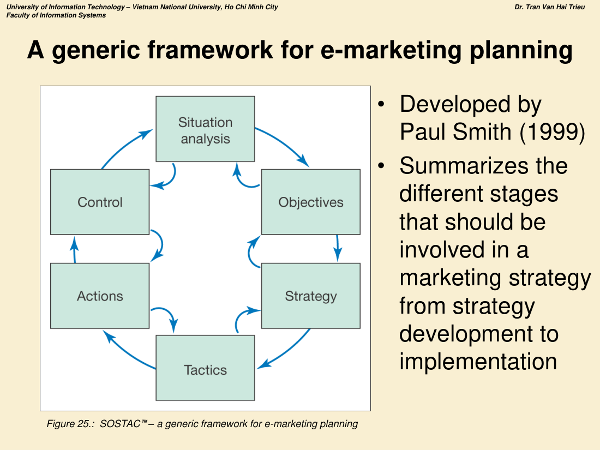
Hình 25 — SOSTAC™: a generic framework for e-marketing planning. Do Paul Smith (1999) phát triển; tóm lược các giai đoạn từ xây dựng chiến lược tới triển khai.
| Chữ | Giai đoạn | Nội dung cốt lõi |
|---|---|---|
| S | Situation analysis (Phân tích tình huống) | “Chúng ta đang ở đâu?” Xem xét môi trường bên ngoài, nhấn mạnh mức độ khách hàng tiếp cận Internet, benchmarking đối thủ và người mới gia nhập |
| O | Objectives (Mục tiêu) | “Chúng ta muốn đi đâu?” Mục tiêu then chốt là online revenue contribution. Với sản phẩm không bán trực tiếp được, đặt mục tiêu về tác động của web tới truyền thông marketing, dịch vụ khách hàng và giảm chi phí |
| S | Strategy (Chiến lược) | “Đi tới đó bằng cách nào?” Đánh giá mức phù hợp của sản phẩm để bán trực tiếp → chọn replacement strategy (SP phù hợp bán trực tiếp, VD vé máy bay) hoặc complementary strategy (SP không phù hợp, VD hàng tiêu dùng nhanh FMCG hay dịch vụ tư vấn). Replacement có thể phải thay đổi mạng lưới phân phối; Complementary dùng Internet như kênh truyền thông marketing bổ sung |
| T | Tactics (Chiến thuật) | Rà soát bằng cách biến đổi các thành tố marketing mix: Price, Place, Product, Promotion, People, Processes, Physical evidence (7P) |
| A | Actions (Hành động) | Lập kế hoạch chiến lược e-marketing bằng cách xác định nguồn lực và tiến độ (timescales) |
| C | Control (Kiểm soát) | Đạt được qua giám sát sự hài lòng khách hàng và hiệu quả kênh qua website lẫn kênh truyền thống |
Mục tiêu: hiểu môi trường hiện tại và tương lai nơi công ty vận hành; là cơ sở để xác định mục tiêu, chiến lược, chiến thuật.
Giám sát việc đối thủ dùng e-commerce để thu hút và giữ chân khách hàng. Cần rà soát: đối thủ đã biết, đối thủ quốc tế đã biết, các công ty Internet mới trong nước và toàn cầu.
| Tiêu chí | Nội dung đánh giá |
|---|---|
| Financial performance | Hiệu quả tài chính |
| Marketplace performance | Thị phần, xu hướng doanh số và đặc biệt tỷ trọng doanh số đạt được qua Internet |
| Business and revenue models | Có khác so với các bên khác trên thị trường không? |
| Services offered | Có gì ngoài brochureware? Mua trực tuyến được không? Mức hỗ trợ khách hàng online? Bao nhiêu thông tin kỹ thuật? |
| Implementation of services | Các đặc tính thực tế của thiết kế site: thẩm mỹ, dễ dùng, cá nhân hóa, điều hướng, tốc độ |
| Marketing communications techniques | Value proposition của site có rõ không? Site có hỗ trợ mọi giai đoạn của quyết định mua — từ khách chưa biết công ty tới khách hiện hữu? Có khuyến mãi đặc biệt định kỳ không? Ngoài site của đối thủ, họ dùng site trung gian thế nào để quảng bá và phân phối dịch vụ? |
| The 7Ps | Đối sánh theo 7P |
| Nhóm | Nội dung |
|---|---|
| Business effectiveness | Đóng góp của site vào doanh thu, khả năng sinh lời và các dấu hiệu về sứ mệnh doanh nghiệp đối với site. Chi phí xây dựng và cập nhật site cũng được rà soát ⇒ phân tích chi phí – lợi ích |
| Customer service | Đo lường cho từng dòng sản phẩm phân phối qua website; rà soát cách các thành tố marketing mix được sử dụng |
| Marketing effectiveness | Leads; sales; retention; market share; brand enhancement and loyalty |
| Internet effectiveness | Các chỉ số riêng đánh giá cách website được sử dụng và đặc điểm khán giả. Từ góc nhìn marketing, cần ghi nhận value proposition của site có rõ ràng với khách hàng không |
| Nhóm mục tiêu | Nội dung |
|---|---|
| Acquisition (Thu hút) | Thu hút khách truy cập tới website hoặc quảng bá thương hiệu bằng cách tiếp cận qua công cụ tìm kiếm hoặc quảng cáo trên site khác |
| Conversion (Chuyển đổi) | Tác động để khách truy cập đạt mục tiêu của website: ví dụ tạo sales lead, bán hàng, hoặc xem một nội dung nhất định |
| Retention & Growth (Giữ chân & tăng trưởng) | Mời khách hàng mua lại (repeat purchases) |
Mục tiêu E-marketing SMART: Specific · Measurable · Achievable · Realistic · Time-constrained.
Ví dụ mục tiêu SMART:
| Loại doanh nghiệp | Mục tiêu SMART |
|---|---|
| Start-up | Thu hút một số lượng khách hàng mới xác định hoặc bán không gian quảng cáo để tạo mức doanh thu xác định — kỳ vọng vượt khoản đầu tư vào việc xây và quảng bá site |
| Nhà mạng di động lâu năm | Tăng giữ chân khách hàng bằng cách giảm tỷ lệ rời bỏ (churn) từ 25% xuống 20% |
| Công ty truyền thông lâu năm | Tăng doanh thu trực tuyến, mục tiêu 20% đóng góp doanh thu online bằng cách cung cấp dịch vụ trực tuyến mới và bán quảng cáo |
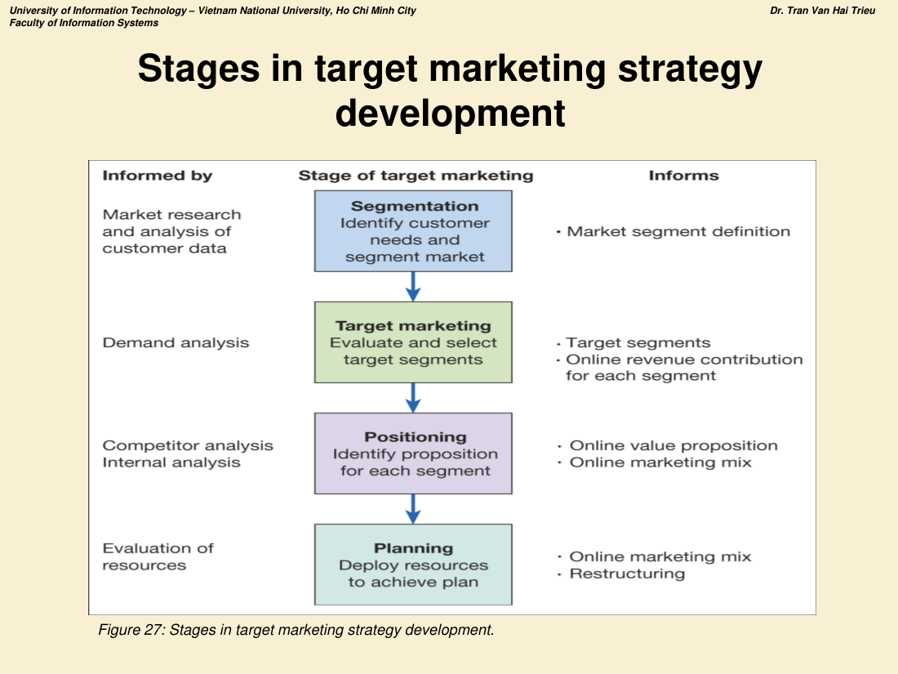
Hình 27 — Stages in target marketing strategy development.
| Đầu vào (Informed by) | Giai đoạn | Đầu ra (Informs) |
|---|---|---|
| Nghiên cứu thị trường & phân tích dữ liệu khách hàng | 1. Segmentation — Xác định nhu cầu khách hàng và phân khúc thị trường | Định nghĩa phân khúc thị trường |
| Demand analysis | 2. Target marketing — Đánh giá và chọn phân khúc mục tiêu | Phân khúc mục tiêu; Online revenue contribution cho từng phân khúc |
| Competitor analysis; Internal analysis | 3. Positioning — Xác định proposition cho từng phân khúc | Online value proposition (OVP); Online marketing mix |
| Đánh giá nguồn lực | 4. Planning — Triển khai nguồn lực để thực hiện kế hoạch | Online marketing mix; Restructuring |
5 câu hỏi khi xây chiến lược thị trường mục tiêu: 1. Khách hàng của chúng ta là ai? 2. Nhu cầu của họ đang thay đổi thế nào? 3. Chúng ta nhắm tới ai? 4. Chúng ta gia tăng giá trị bằng cách nào? 5. Làm sao trở thành lựa chọn đầu tiên?
| # | Đặc điểm | Ý nghĩa |
|---|---|---|
| 1 | Interactivity | Tính tương tác |
| 2 | Intelligence | Tính thông minh (thu thập & phân tích dữ liệu) |
| 3 | Individualization | Cá nhân hóa |
| 4 | Integration | Tích hợp |
| 5 | Industry restructuring | Tái cấu trúc ngành |
| 6 | Independence of location | Độc lập về vị trí địa lý |
So sánh mô hình truyền thông:
| Traditional media | New media | |
|---|---|---|
| Mô hình | Push — một chiều, từ người bán đến nhiều người nhận (one-to-many) | Pull / Interactive — hai chiều, khách hàng chủ động; one-to-one và many-to-many |
| Mức cá nhân hóa | Thấp — thông điệp giống nhau cho cả khối khán giả (mass) | Cao — thông điệp riêng cho từng cá nhân |
Tích hợp kênh (Channel integration): Internet phải được tích hợp với các kênh khác trong chiến lược e-marketing tích hợp và phục vụ mixed-mode buying (khách nghiên cứu online, mua offline hoặc ngược lại).
Ví dụ công cụ truyền thông tích hợp: - Internet dùng như công cụ phản hồi trực tiếp (direct-response), cho phép khách hàng phản hồi lại các chào hàng/khuyến mãi được quảng bá trên phương tiện khác. - Website có thể tích hợp chức năng phản hồi trực tiếp hoặc gọi lại (callback). - Internet dùng để hỗ trợ quyết định mua ngay cả khi giao dịch không diễn ra trên website.
OVP cần làm rõ 5 điều: 1. Sự khác biệt rõ ràng của proposition so với đối thủ, dựa trên đặc tính sản phẩm hoặc chất lượng dịch vụ. 2. Phân khúc thị trường mục tiêu mà proposition hướng tới. 3. Proposition sẽ được truyền thông thế nào tới khách truy cập và trong mọi hoạt động truyền thông marketing. 4. Proposition được phân phối ra sao ở các giai đoạn khác nhau của quy trình mua. 5. Proposition sẽ được phân phối và hỗ trợ bằng nguồn lực nào — nội bộ hay bên ngoài?
Ví dụ OVP:
| Doanh nghiệp | OVP |
|---|---|
| Kelkoo | “Compare. Buy. Save.” |
| Amazon | “Earth’s biggest selection” |
| AutoTrader | “Search the largest inventory of cars and trucks on the Internet. More than 1.5 million listings, updated daily” |
| Citibank | “Welcome to Citibank: The one-stop solution for all your financial needs”; Look for a product or service; Learn about a financial product; Find a location |
| Bhinneka.com (Indonesia) | “Indonesia’s No 1 Webstore” |
| Tokopedia.com | “Jual Beli Online Aman dan Nyaman” (Mua bán online an toàn và thoải mái) |
| Alfa online | “Smart & Easy Shopping” |
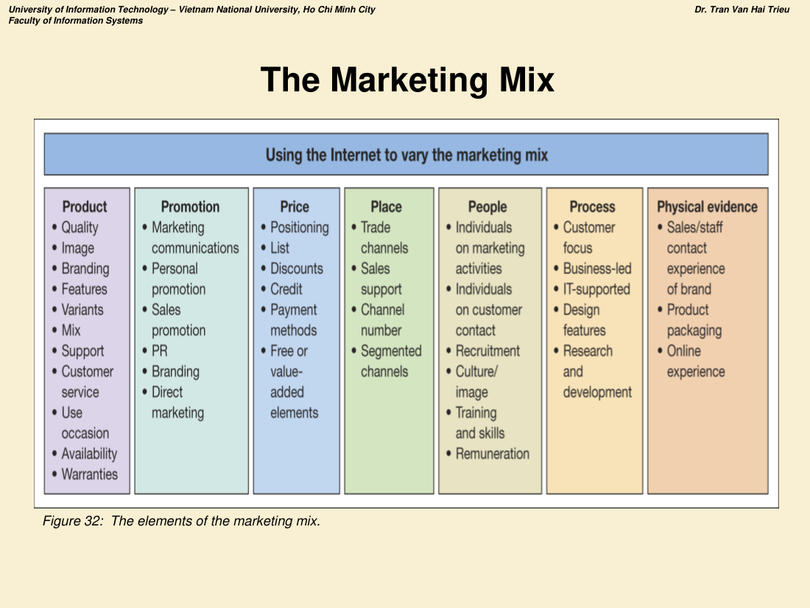
Hình 32 — The elements of the marketing mix (Using the Internet to vary the marketing mix).
Các câu hỏi khi biến đổi mix trực tuyến: Ta biến đổi hay sao chép mix offline? Chào hàng có rõ ràng không (brand proposition, online offer)? Khác biệt online đã được định nghĩa chưa? Đã truyền thông được chưa?
| P | Các biến số trong mix | Ứng dụng cụ thể cho E-business |
|---|---|---|
| Product | Quality, Image, Branding, Features, Variants, Mix, Support, Customer service, Use occasion, Availability, Warranties | Mở rộng danh mục (Tesco) · Thu hẹp danh mục (WH Smith iDTV) · Sản phẩm chỉ có online (ngân hàng) · Phát triển thương hiệu mới (Egg) · Chuyển thương hiệu hiện có lên online (HSBC) · Hợp tác với thương hiệu online (Waterstones + Amazon) |
| Price | Positioning, List, Discounts, Credit, Payment methods, Free or value-added elements | Định giá phân biệt: Giảm giá online do minh bạch
giá & cạnh tranh (easyJet); Giữ giá để tránh ăn thịt kênh
offline (cannibalization) (Dixon). Lựa chọn giá mới: Rental (thuê) · Pay per use (trả theo lần dùng) · Reverse auctions (đấu giá ngược — B2B) · Dynamic pricing (giá động — vé hòa nhạc) |
| Place | Trade channels, Sales support, Channel number, Segmented channels | Place = tránh xung đột kênh. Disintermediation (bán trực tiếp) · Reintermediation (hợp tác với trung gian mới) · Countermediation · Hình thành trung gian mới · Hợp tác với trung gian hiện có · Giữ khoảng cách với trung gian (Abbey National) |
| Promotion | Marketing communications, Personal promotion, Sales promotion, PR, Branding, Direct marketing | Dùng chọn lọc công cụ online cho từng giai đoạn của quy trình mua và vòng đời khách hàng · Chiến dịch chỉ online · Chiến dịch tích hợp — đưa công cụ online vào communications mix |
| People | Individuals on marketing activities, Individuals on customer contact, Recruitment, Culture/image, Training and skills, Remuneration | Tự động hóa — dùng web self-service, cho khách hàng quyền lựa chọn: Autoresponder · E-mail notification · Callback facility · FAQ · Onsite search engines · Virtual assistance |
| Process | Customer focus, Business-led, IT-supported, Design features, Research and development | Thay đổi quy trình phục vụ — các chiến lược tiếp xúc (contact strategies) |
| Physical evidence | Sales/staff contact experience of brand, Product packaging, Online experience | Thiết kế site — khác biệt hóa hoặc hỗ trợ thương hiệu · Chất lượng hoàn tất đơn hàng (fulfillment quality) |
Định nghĩa của Malcolm McDonald (Creating Powerful Brands, 1992): > Thương hiệu là một sản phẩm hoặc dịch vụ nhận diện được, được bổ sung (augmented) theo cách mà người mua/người dùng cảm nhận được những giá trị gia tăng độc đáo, phù hợp, đáp ứng sát nhất nhu cầu của họ. Thành công của nó đến từ khả năng duy trì các giá trị gia tăng đó trước sức ép cạnh tranh.
Bốn phương án thay đổi nhận diện thương hiệu trực tuyến: 1. Transfer traditional brand online — Chuyển thương hiệu truyền thống lên online 2. Extend traditional brand — Mở rộng thương hiệu truyền thống 3. Partner with existing digital brand — Hợp tác với thương hiệu số có sẵn 4. Create a new digital brand — Tạo thương hiệu số mới
Actions — 5 câu hỏi: 1. Mức đầu tư nào vào kênh Internet là đủ để cung cấp dịch vụ? 2. Cần đào tạo nhân viên những gì? 3. Cần trách nhiệm mới nào cho Internet marketing hiệu quả? 4. Có cần tái cấu trúc tổ chức không? 5. Những hoạt động nào liên quan tới tạo và duy trì website?
Control: Thực hiện nghiên cứu marketing · Phân tích file log của web server · Dùng intranet để chia sẻ thông tin.
Nội dung chương (4 phần): 1. Hệ thống thuế và pháp luật cho E-business 2. Phần mềm E-business và Web hosting 3. An ninh trực tuyến (Online security) 4. Hệ thống thanh toán trực tuyến (Online payment system)
Các vấn đề do Internet và TMĐT đặt ra có thể nhìn ở ba cấp: cá nhân (individual), xã hội (social), chính trị (political).
Bốn nhóm vấn đề chính (The Moral Dimensions of an Internet Society):
| # | Nhóm vấn đề | Nội dung |
|---|---|---|
| 1 | Information rights | Quyền về thông tin (quyền riêng tư) |
| 2 | Property rights | Quyền sở hữu (sở hữu trí tuệ) |
| 3 | Governance | Quản trị (ai quản lý Internet, thuế, chủ quyền) |
| 4 | Public safety and welfare | An toàn và phúc lợi công cộng |
Privacy (Quyền riêng tư): quyền đạo đức của cá nhân được ở một mình, không bị giám sát hay can thiệp bởi cá nhân, tổ chức hoặc nhà nước khác.
Information privacy — 4 quyền: 1. Quyền kiểm soát thông tin được thu thập về mình 2. Quyền được biết khi nào thông tin bị thu thập và được đồng ý (consent) 3. Quyền được xử lý thông tin cá nhân theo trình tự chính đáng (due process) 4. Quyền có thông tin cá nhân được lưu trữ an toàn
Khu vực công (Public sector): Quyền riêng tư có lịch sử lâu đời (Tu chính án 1, 4, 14 của Hoa Kỳ). Tuy nhiên các quyền riêng tư ngầm định trong Hiến pháp không bao phủ việc thu thập và sử dụng thông tin cá nhân ⇒ có Privacy Act 1974 và luật liên bang/tiểu bang bảo vệ cá nhân khỏi can thiệp bất hợp lý của chính phủ.
Khu vực tư (Private sector): Luật riêng tư mang tính chắp vá (piecemeal), áp dụng cho từng ngành cụ thể. Lịch sử ít có yêu sách riêng tư trong thị trường mở. Sự xuất hiện của Internet tạo ra kho dữ liệu cá nhân khổng lồ ⇒ môi trường lý tưởng để doanh nghiệp và chính phủ xâm phạm quyền riêng tư (Google, Amazon, Netflix…).
Thông tin do website thu thập: - PII (Personally identifiable information) — thông tin định danh cá nhân - Anonymous information — thông tin ẩn danh
Các loại dữ liệu: tên, địa chỉ, điện thoại, email, số an sinh xã hội; tài khoản ngân hàng và thẻ tín dụng, giới tính, tuổi, nghề nghiệp, học vấn; dữ liệu sở thích, dữ liệu giao dịch, dữ liệu clickstream, loại trình duyệt.
Năm mối lo hàng đầu về quyền riêng tư trực tuyến: 1. Profiling and ad targeting (Lập hồ sơ và nhắm quảng cáo) 2. Social network privacy 3. Sharing of information by marketers 4. Mobile phone privacy 5. Digital assistant privacy
Profiling: tạo ảnh dữ liệu (data images) đặc trưng hóa hành vi cá nhân và nhóm trên mạng. Gồm anonymous profiles và personal profiles; nhận diện khuôn mặt là chiều mới.
Advertising networks: theo dõi hành vi tiêu dùng và duyệt web; điều chỉnh động nội dung hiển thị; xây và làm mới hồ sơ người tiêu dùng.
| Góc nhìn doanh nghiệp | Góc nhìn người phê phán |
|---|---|
| Tăng hiệu quả quảng cáo, trợ giá cho nội dung miễn phí | Phá vỡ kỳ vọng về ẩn danh và riêng tư |
| Cảm nhận được nhu cầu cho sản phẩm mới | Cho phép phân biệt giá (price discrimination) |
Mạng xã hội: khuyến khích chia sẻ thông tin cá nhân; đặt ra thách thức riêng cho quyền riêng tư. Facebook: CSDL khổng lồ, phục vụ quảng cáo cho cả người không dùng Facebook, chia sẻ thông tin với bên thứ ba ⇒ mâu thuẫn giữa quyền kiểm soát thông tin cá nhân và mong muốn kiếm tiền từ mạng xã hội của tổ chức.
Thiết bị di động: ứng dụng cung cấp thông tin cá nhân cho nhà quảng cáo di động; theo dõi và lưu vị trí; theo dõi việc dùng ứng dụng khác. Theo dõi vị trí không ngừng. Tòa án Tối cao Mỹ phán quyết cảnh sát cần lệnh khám xét (warrant) trước khi khám điện thoại.
Intelligent Tracking Protection (ITP) · Differential privacy software · Privacy default browsers · Message encryption · Spyware blockers · Pop-up & ad blockers · Secure e-mail, anonymous remailers · Cookie managers · Public key encryption.
Bảo vệ quyền riêng tư như một ngành kinh doanh: Personal Data Economy (PDE), Life Management tools; các nhóm vận động quyền riêng tư (privacy advocacy groups).
Intellectual property: mọi sản phẩm hữu hình và vô hình của trí tuệ con người.
| Cấp độ | Vấn đề |
|---|---|
| Đạo đức | Nên xử lý tài sản thuộc về người khác như thế nào? |
| Xã hội | Việc bảo vệ sở hữu trí tuệ trong thời đại Internet còn giá trị không? |
| Chính trị | Làm sao điều tiết/quản trị Internet và TMĐT để bảo vệ sở hữu trí tuệ? |
Bốn hình thức bảo hộ chính:
| Hình thức | Nội dung |
|---|---|
| Copyright (Bản quyền) | Bảo hộ hình thức thể hiện gốc (không bảo hộ ý
tưởng) khỏi bị sao chép trong một khoảng thời
gian. Digital Millennium Copyright Act 1998 (DMCA) — nỗ lực lớn đầu tiên điều chỉnh luật bản quyền cho thời đại Internet; thực thi Hiệp ước Bản quyền WIPO, cấm sản xuất, phân phối hoặc sử dụng thiết bị vượt qua các biện pháp bảo vệ kỹ thuật đối với tài liệu có bản quyền |
| Patent (Bằng sáng chế) | Trao cho chủ sở hữu độc quyền 20 năm đối với ý tưởng đằng sau một sáng chế. Sáng chế phải mới và có tính sáng tạo (new and novel). Khuyến khích nhà sáng chế; thúc đẩy phổ biến kỹ thuật mới qua cấp phép (licensing); giảm cạnh tranh do nâng rào cản gia nhập |
| Trademark (Nhãn hiệu) | Nhận diện, phân biệt hàng hóa và chỉ dẫn nguồn
gốc. Mục đích: đảm bảo người tiêu dùng nhận đúng thứ đã trả tiền/kỳ vọng; bảo vệ chủ sở hữu khỏi sao chép lậu và chiếm đoạt. Vấn đề: xâm phạm (infringement) |
| Trade Secrets (Bí mật kinh doanh) | Quy trình kinh doanh, công thức, phương pháp sản xuất và cung cấp dịch vụ. Không cần độc đáo hay mới. Điều kiện: (a) bí mật, (b) có giá trị thương mại với chủ sở hữu, (c) chủ sở hữu đã thực hiện các bước bảo vệ. Luật: Defend Trade Secrets Act 2016 |
Mục tiêu của luật sở hữu trí tuệ: cân bằng hai lợi ích cạnh tranh nhau — lợi ích công (public) và lợi ích tư (private).
Bằng sáng chế trong TMĐT: - 1998 — State Street Bank & Trust v. Signature Financial Group: công nhận business method patents. - 2014 — vụ Alice Corporation: Tòa án Tối cao phán quyết phần mềm KHÔNG làm cho một phương pháp kinh doanh cơ bản hoặc ý tưởng trừu tượng trở nên có thể cấp bằng sáng chế. - Ví dụ: Amazon — One-click purchasing; Akamai — hệ thống lưu trữ toàn cầu để phân phối nội dung Internet.
Hình 2 — Vietnam Legal Document System (theo Luật Ban hành văn bản quy phạm pháp luật số 64/2026/QH15 ngày 19/02/2025 và Luật số 87/2025/QH15 sửa đổi, bổ sung — hiệu lực từ 01/7/2025).
| Nghị quyết | Ngày | Nội dung |
|---|---|---|
| Nghị quyết 57-NQ/TW | 22/12/2024 | Về đột phá phát triển khoa học, công nghệ, đổi mới sáng tạo
và chuyển đổi số quốc gia → Nghị quyết 03/NQ-CP ngày 09/01/2025 của Chính phủ ban hành chương trình hành động thực hiện NQ 57 |
| Nghị quyết 59-NQ/TW | 24/01/2025 | Về hội nhập quốc tế trong tình hình mới |
| Nghị quyết 66-NQ/TW | 30/4/2025 | Về đổi mới công tác xây dựng và thi hành pháp luật đáp ứng yêu cầu phát triển đất nước trong kỷ nguyên mới |
| Nghị quyết 68-NQ/TW | 04/5/2025 | Về phát triển kinh tế tư nhân |
| Luật | Số hiệu / Ngày |
|---|---|
| Bộ luật Dân sự | 91/2015/QH13, ngày 24/11/2015 |
| Luật Doanh nghiệp | 59/2020/QH14, ngày 11/01/2020 (sửa đổi bởi Luật 76/2025/QH15, hiệu lực 01/7/2025) |
| Luật Thương mại | 17/VBHN-VPQH, ngày 05/7/2019 |
| Luật Quản lý thuế | 38/2019/QH14, ngày 13/6/2019 (sửa đổi bởi Luật 56/2024/QH15, hiệu lực 01/01/2025) |
| Luật Đầu tư | 143/2025/QH15, ngày 11/12/2025 (hiệu lực chính thức 01/3/2026) |
| Luật Đầu tư công | 39/2019/QH14, ngày 13/6/2019 (sửa đổi bởi Luật 58/2024/QH15 và 90/2025/QH15, hiệu lực 01/7/2025) |
| Luật Đầu tư theo phương thức đối tác công tư (PPP) | 64/2020/QH14, ngày 18/6/2020 (sửa đổi bởi Luật 57/2024/QH15 và 90/2025/QH15, hiệu lực 01/7/2025) |
| Luật Cạnh tranh | 23/2018/QH14, ngày 12/6/2018 |
| Luật Đấu thầu | 43/2013/QH13, ngày 26/11/2013 (sửa đổi bởi VBHN 74/VBHN-VPQH ngày 25/3/2026) |
| Luật chuyên ngành khác | Luật Sở hữu trí tuệ; Luật Viễn thông; Luật Báo chí; Luật Bảo vệ môi trường; Luật Công nghệ thông tin; Luật An ninh mạng… |
| Số hiệu | Tên văn bản | Ngày ban hành |
|---|---|---|
| 08/VBHN-BCT | Thông tư của Bộ Công Thương: Quy định về quản lý hoạt động TMĐT qua ứng dụng trên thiết bị di động | 03/02/2026 |
| 85/2021/NĐ-CP | Nghị định của Chính phủ: Sửa đổi, bổ sung một số điều của Nghị định 52/2013/NĐ-CP về thương mại điện tử | 28/9/2021 |
| 117/2025/NĐ-CP | Nghị định của Chính phủ: Quy định quản lý thuế đối với hoạt động kinh doanh TMĐT và nền tảng số của hộ, cá nhân | 09/6/2025 |
| 98/2020/NĐ-CP | Nghị định: Xử phạt vi phạm hành chính trong hoạt động thương
mại, sản xuất, buôn bán hàng giả, hàng cấm và bảo vệ quyền lợi người
tiêu dùng Sửa đổi bởi NĐ 17/2022/NĐ-CP; NĐ 24/2025/NĐ-CP; VBHN 03/VBHN-BCT ngày 23/4/2025 |
09/9/2020 |
| 122/2025/QH15 | LUẬT THƯƠNG MẠI ĐIỆN TỬ — hiệu lực từ 01/7/2026 | 10/12/2025 |
Thuế ảnh hưởng tới hầu hết hoạt động kinh doanh & đầu tư:
| # | Loại thuế |
|---|---|
| 1 | Thuế thu nhập doanh nghiệp (Corporate income tax) |
| 2 | Thuế nhà thầu nước ngoài (Foreign Contractor Tax) |
| 3 | Thuế trên lãi vốn (Capital gains tax) |
| 4 | Thuế giá trị gia tăng — VAT |
| 5 | Các loại thuế khấu trừ tại nguồn (Withholding taxes) |
| 6 | Thuế nhập khẩu (Import duties) |
| 7 | Thuế thu nhập cá nhân — với cả người Việt và người nước ngoài |
| 8 | Bảo hiểm xã hội, bảo hiểm thất nghiệp, bảo hiểm y tế |
Các thuế khác áp dụng cho hoạt động cụ thể: Thuế tiêu thụ đặc biệt · Thuế tài nguyên · Thuế tài sản · Thuế xuất khẩu · Thuế bảo vệ môi trường · Tiền thuê đất.
| Câu hỏi | Nội dung cần xác định |
|---|---|
| What’s the idea? (Ý tưởng là gì — the vision) | Mission statement · Target audience · Intended market space · Strategic analysis · Marketing matrix · Development timeline · Preliminary budget |
| Where’s the money? (Tiền ở đâu) | Business model(s) · Revenue model(s) |
| Who and where is the target audience? | Nhân khẩu học, lối sống, mô hình tiêu dùng… |
| What does the marketplace characterize? | Quy mô, tăng trưởng, nhân khẩu, cấu trúc… |
| Where’s the content coming from? | Nguồn nội dung |
| Know yourself | SWOT analysis |
| Develop an e-commerce presence map | Bản đồ hiện diện |
| Develop a timeline | Milestones (các mốc) |
| How much will this cost? | Website đơn giản: tới $5.000 Start-up nhỏ: $25.000 – $50.000 Website doanh nghiệp lớn: $100.000+ tới hàng triệu |
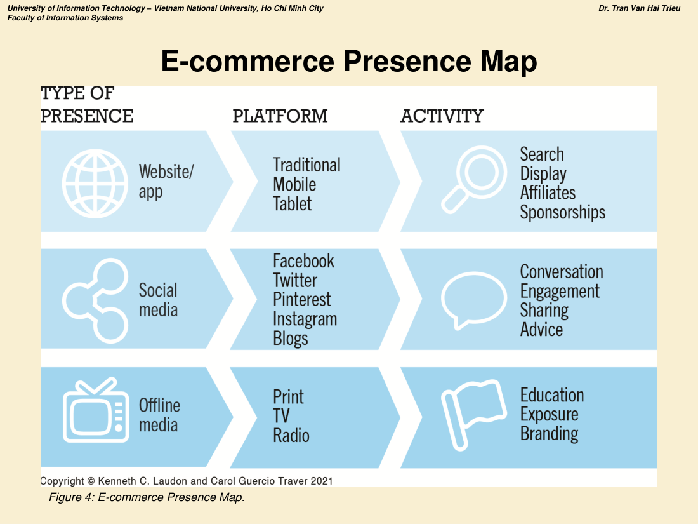
Hình 4 — E-commerce Presence Map.
| Type of presence | Platform | Activity |
|---|---|---|
| Website / app | Traditional · Mobile · Tablet | Search · Display · Affiliates · Sponsorships |
| Social media | Facebook · Twitter · Pinterest · Instagram · Blogs | Conversation · Engagement · Sharing · Advice |
| Offline media | Print · TV · Radio | Education · Exposure · Branding |
Hai thách thức quản trị quan trọng nhất: 1. Hiểu rõ mục tiêu kinh doanh 2. Biết cách chọn công nghệ phù hợp để đạt mục tiêu đó
Các yếu tố chính cần cân nhắc: Management · Hardware architecture · Software · Design · Telecommunications · Human resources.
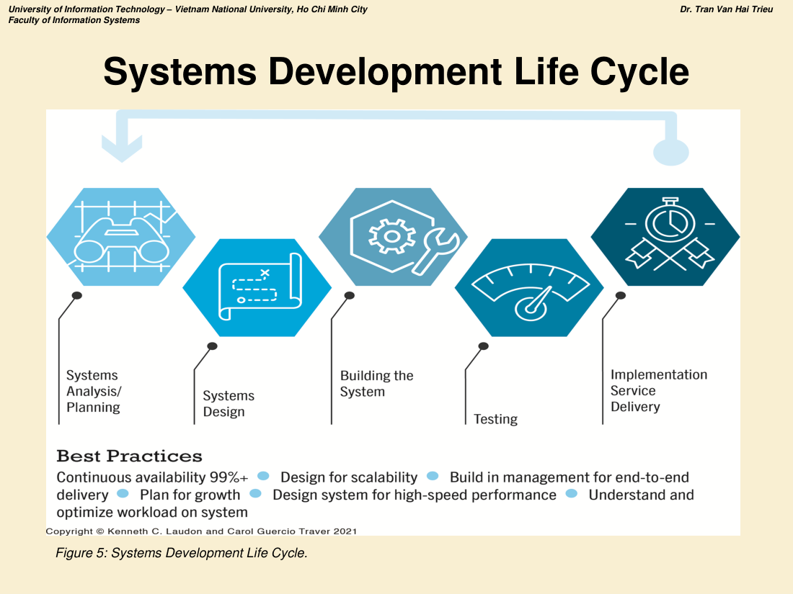
Hình 5 — Systems Development Life Cycle.
SDLC: phương pháp luận để hiểu mục tiêu kinh doanh của một hệ thống và thiết kế giải pháp phù hợp.
| # | Bước | Nội dung |
|---|---|---|
| 1 | Systems Analysis / Planning | Phân tích và lập kế hoạch hệ thống |
| 2 | Systems Design | Thiết kế hệ thống |
| 3 | Building the System | Xây dựng hệ thống |
| 4 | Testing | Kiểm thử |
| 5 | Implementation / Service Delivery | Triển khai và cung cấp dịch vụ |
Best Practices (thực hành tốt nhất): - Continuous availability 99%+ (sẵn sàng liên tục trên 99%) - Design for scalability (thiết kế để mở rộng) - Build in management for end-to-end delivery (tích hợp quản trị cho phân phối đầu-cuối) - Plan for growth (lập kế hoạch tăng trưởng) - Design system for high-speed performance - Understand and optimize workload on system
Ba khái niệm: - Business objectives: danh sách khả năng bạn muốn site có - System functionalities: danh sách năng lực hệ thống thông tin cần để đạt mục tiêu kinh doanh - Information requirements: các phần tử thông tin mà hệ thống phải tạo ra để đạt mục tiêu
Bảng 3 — Mục tiêu kinh doanh, chức năng hệ thống và yêu cầu thông tin cho một site TMĐT điển hình (BẢNG RẤT HAY RA THI):
| Business Objective | System Functionality | Information Requirements |
|---|---|---|
| Display goods (Trưng bày hàng hóa) | Digital Catalog | Catalogue văn bản và đồ họa động |
| Provide product information (Cung cấp thông tin sản phẩm) | Product database | Mô tả sản phẩm, mã hàng (stocking numbers), mức tồn kho |
| Personalize/customize product (Cá nhân hóa sản phẩm) | Customer on-site tracking | Site log cho mỗi lượt khách; khả năng data mining để nhận diện đường đi phổ biến của khách và phản ứng phù hợp |
| Engage customers in conversations (Tương tác hội thoại) | On-site blog; user forums | Phần mềm có chức năng blog và diễn đàn cộng đồng |
| Execute a transaction (Thực hiện giao dịch) | Shopping cart / payment system | Xử lý thẻ tín dụng an toàn; nhiều lựa chọn thanh toán |
| Accumulate customer information (Tích lũy thông tin KH) | Customer database | Tên, địa chỉ, điện thoại, email của mọi khách; đăng ký khách hàng trực tuyến |
| Provide after-sale customer support (Hỗ trợ sau bán) | Sales database | Customer ID, sản phẩm, ngày, thanh toán, ngày giao hàng |
| Coordinate marketing/advertising (Điều phối marketing/quảng cáo) | Ad server, e-mail server, e-mail campaign manager, ad banner manager | Log hành vi của khách tiềm năng và khách hàng, liên kết với chiến dịch email và banner |
| Understand marketing effectiveness (Hiểu hiệu quả marketing) | Site tracking and reporting system | Số khách truy cập duy nhất, số trang xem, sản phẩm đã mua, phân theo chiến dịch marketing |
| Provide production and supplier links (Kết nối sản xuất & nhà cung cấp) | Inventory management system | Mức sản phẩm & tồn kho, ID và liên hệ nhà cung cấp, dữ liệu số lượng đặt theo sản phẩm |
System design specification: mô tả các thành phần chính của hệ thống và quan hệ giữa chúng.
| Logical design (Thiết kế logic) | Physical design (Thiết kế vật lý) | |
|---|---|---|
| Nội dung | Data flow diagrams, các hàm xử lý, cơ sở dữ liệu | Xác định thành phần vật lý, phần mềm, model thực tế |
Ví dụ thiết kế logic cho một website đơn giản (Sơ đồ luồng dữ liệu — DFD) ⭐⭐⭐:
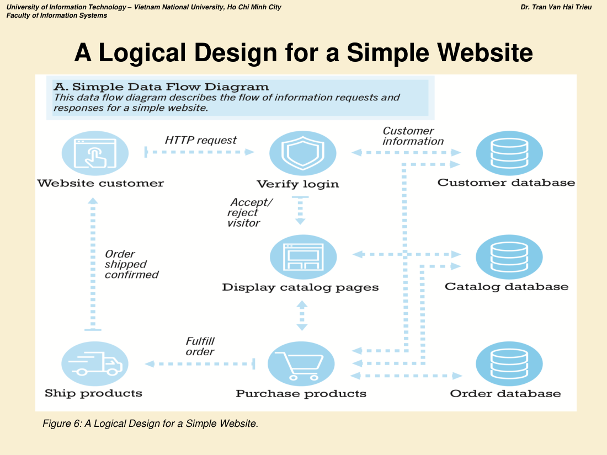
Hình 6 — A Logical Design for a Simple Website (Simple Data Flow Diagram).
Đọc sơ đồ (quy trình mua hàng trên website):
| Bước | Tiến trình | Luồng dữ liệu |
|---|---|---|
| 1 | Website customer gửi HTTP request | → Verify login |
| 2 | Verify login ↔︎ Customer database | Trao đổi Customer information |
| 3 | Verify login → Accept/reject visitor | → Display catalog pages |
| 4 | Display catalog pages ↔︎ Catalog database | Lấy dữ liệu sản phẩm |
| 5 | Purchase products ↔︎ Order database và Customer database | Ghi nhận đơn hàng |
| 6 | Purchase products → Fulfill order → Ship products | Hoàn tất đơn |
| 7 | Ship products → Order shipped confirmed → Website customer | Xác nhận đã giao |
📌 Đây là sơ đồ nên vẽ lại khi đề bài yêu cầu “mô tả quy trình bán hàng trực tuyến trên website”.
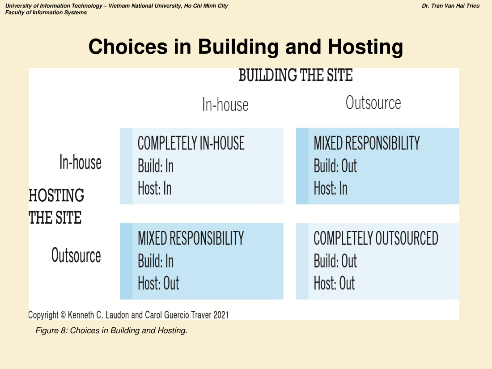
Hình 8 — Choices in Building and Hosting.
Hai trục quyết định: XÂY (Building) và VẬN HÀNH/LƯU TRỮ (Hosting).
| Build: In-house | Build: Outsource | |
|---|---|---|
| Host: In-house | COMPLETELY IN-HOUSE Build: In — Host: In |
MIXED RESPONSIBILITY Build: Out — Host: In |
| Host: Outsource | MIXED RESPONSIBILITY Build: In — Host: Out |
COMPLETELY OUTSOURCED Build: Out — Host: Out |
Khái niệm: - Outsourcing: thuê nhà cung cấp thực hiện các dịch vụ trong việc xây dựng site. - Build your own: cần đội ngũ kỹ năng đa dạng, phải chọn công cụ phần mềm; có rủi ro nhưng cũng có lợi ích tiềm năng. - Hosting: công ty hosting chịu trách nhiệm đảm bảo site truy cập được 24/7 với phí hàng tháng. - Co-location: doanh nghiệp mua hoặc thuê máy chủ (có quyền kiểm soát vận hành), nhưng máy chủ đặt tại cơ sở của nhà cung cấp.
| Loại kiểm thử | Nội dung |
|---|---|
| Unit testing | Kiểm thử đơn vị |
| System testing | Kiểm thử hệ thống |
| Acceptance testing | Kiểm thử chấp nhận |
| A/B testing (split testing) | So sánh 2 phiên bản |
| Multivariate testing | Kiểm thử đa biến |
Prototyping · Agile development · DevOps · Component-based development · Web services.
System architecture: cách sắp xếp phần mềm, máy móc và tác vụ trong một hệ thống thông tin để đạt một chức năng cụ thể.
| Two-tier | Multi-tier | |
|---|---|---|
| Thành phần | Web server + database server | Web application servers; backend, legacy databases |
Kiến trúc đa tầng (Multi-Tier) — 3 lớp:
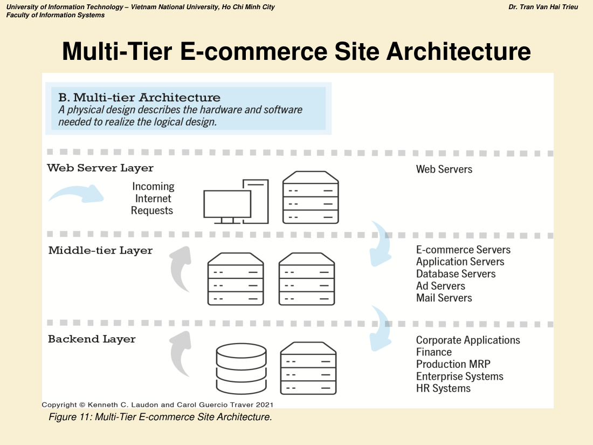
Hình 11 — Multi-Tier E-commerce Site Architecture.
| Lớp | Thành phần |
|---|---|
| Web Server Layer | Web Servers — nhận Incoming Internet Requests |
| Middle-tier Layer | E-commerce Servers · Application Servers · Database Servers · Ad Servers · Mail Servers |
| Backend Layer | Corporate Applications · Finance · Production MRP · Enterprise Systems · HR Systems |
Dynamic page generation: nội dung được lưu trong CSDL và lấy ra khi cần.
Công cụ phổ biến: CGI, ASP, JSP, ODBC, JDBC.
Ưu điểm: - Giảm chi phí menu (menu costs) - Cho phép phân khúc thị trường trực tuyến dễ dàng - Cho phép phân biệt giá (price discrimination) không tốn chi phí - Cho phép triển khai hệ quản trị nội dung (CMS)
Chức năng cơ bản cho bán hàng:
| Chức năng | Mô tả |
|---|---|
| Online catalog | Danh sách sản phẩm có trên website |
| Shopping cart | Cho phép người mua để dành, xem lại, chỉnh sửa lựa chọn rồi mua |
| Credit card processing | Thường hoạt động cùng shopping cart; xác minh thẻ và ghi có vào tài khoản công ty khi thanh toán |
Gói phần mềm Merchant Server — môi trường tích hợp gồm: shopping cart · merchandise display · order management.
| Quy mô doanh nghiệp | Giải pháp |
|---|---|
| SME | Yahoo Small Business; các giải pháp mã nguồn mở |
| Tầm trung | IBM WebSphere Commerce Express; Sitecore Experience Commerce |
| Cao cấp | IBM WebSphere Professional/Enterprise; SAP Hybris; Oracle ATG Web Commerce |
Nhiều gói nay có sẵn dưới dạng SaaS trên nền cloud.
9 yếu tố then chốt khi chọn gói phần mềm: 1. Functionality (chức năng) 2. Hỗ trợ các mô hình kinh doanh khác nhau, kể cả m-commerce 3. Công cụ mô hình hóa quy trình kinh doanh (business process modeling tools) 4. Quản lý site và báo cáo trực quan 5. Hiệu năng và khả năng mở rộng 6. Khả năng kết nối với hệ thống nghiệp vụ hiện có 7. Tuân thủ chuẩn 8. Khả năng toàn cầu và đa văn hóa 9. Quy tắc thuế bán hàng và vận chuyển địa phương
Nhu cầu khách hàng là yếu tố quan trọng nhất ảnh hưởng tốc độ site.
Các yếu tố cấu thành tổng cầu: - Số người dùng đồng thời ở giờ cao điểm - Bản chất yêu cầu của khách (user profile) - Loại nội dung (trang động vs trang tĩnh) - Mức bảo mật yêu cầu - Số lượng mặt hàng trong kho - Số lượt yêu cầu trang - Tốc độ các ứng dụng kế thừa (legacy)
Scalability: khả năng site tăng quy mô theo nhu cầu.
| Cách mở rộng | Nội dung |
|---|---|
| Vertically (Theo chiều dọc) | Tăng sức mạnh xử lý của từng thành phần riêng lẻ |
| Horizontally (Theo chiều ngang) | Dùng nhiều máy tính chia sẻ tải |
| Improve processing architecture | Cải thiện kiến trúc xử lý |
| Outsource hosting | Thuê ngoài hosting, dùng CDN (content delivery network) |
Bảng 5 — Kỹ thuật mở rộng dọc và ngang:
| Kỹ thuật | Ứng dụng |
|---|---|
| Use a faster computer | Triển khai edge servers, presentation servers, data servers… |
| Create a cluster of computers | Dùng máy tính song song để cân bằng tải |
| Use appliance servers | Máy chuyên dụng tối ưu cho một tác vụ |
| Segment workload | Phân luồng công việc đến các máy chuyên biệt |
| Batch requests | Gộp các yêu cầu dữ liệu liên quan thành nhóm, xử lý theo nhóm |
| Manage connections | Giảm số kết nối giữa tiến trình và máy tính xuống mức tối thiểu |
| Aggregate user data | Gộp dữ liệu người dùng từ ứng dụng kế thừa vào một kho dữ liệu duy nhất |
| Cache | Lưu dữ liệu dùng thường xuyên trong bộ đệm thay vì trên đĩa |
Bảng 6 — Cải thiện kiến trúc xử lý của site:
| Cải tiến kiến trúc | Mô tả |
|---|---|
| Separate static content from dynamic content | Dùng server chuyên biệt cho từng loại tải |
| Cache static content | Tăng RAM lên mức gigabyte và lưu nội dung tĩnh trong RAM |
| Cache database lookup tables | Dùng bảng đệm để tra cứu bản ghi CSDL |
| Consolidate business logic on dedicated servers | Đặt shopping cart, xử lý thẻ tín dụng và hoạt động tốn CPU khác lên server riêng |
| Optimize ASP code | Rà soát mã để đảm bảo hoạt động hiệu quả |
| Optimize the database schema | Rà soát thời gian tìm kiếm CSDL và giảm thời gian truy cập |
Search engine placement: Metatags, titles, content · Xác định ngách thị trường · Thể hiện chuyên môn · Liên kết (links) · Mua quảng cáo · Local e-commerce.
(Rất hay dùng làm cơ sở cho câu hỏi “đề xuất cải tiến website/quy trình”)
| # | Yếu tố | Mô tả |
|---|---|---|
| 1 | Functionality | Trang hoạt động được, tải nhanh và hướng khách hàng tới sản phẩm |
| 2 | Informational | Liên kết dễ tìm để khách khám phá thêm về công ty và sản phẩm |
| 3 | Ease of use | Điều hướng đơn giản, không thể sai (foolproof) |
| 4 | Redundant navigation | Đường dẫn thay thế tới cùng một nội dung |
| 5 | Ease of purchase | Một hoặc hai cú click là mua được |
| 6 | Multi-browser functionality | Site hoạt động với các trình duyệt phổ biến nhất |
| 7 | Simple graphics | Tránh đồ họa và âm thanh gây phân tâm, khó chịu mà người dùng không kiểm soát được |
| 8 | Legible text | Tránh nền làm biến dạng hoặc khó đọc chữ |
CGI · ASP/ASP.NET · Java, JSP, JavaScript (Angular JS, D3, jQuery, Ajax) · ActiveX và VBScript · ColdFusion · PHP, Ruby on Rails, Django · Widgets, mashups.
| Khái niệm | Định nghĩa |
|---|---|
| Personalization (Cá nhân hóa) | Khả năng đối xử với từng người dựa trên đặc điểm cá nhân và lịch sử tương tác trước với site |
| Customization (Tùy biến) | Khả năng thay đổi sản phẩm để phù hợp hơn với nhu cầu khách hàng |
| Cookies | Phương pháp chính để đạt được cá nhân hóa |
| Loại | Đặc điểm |
|---|---|
| Mobile website | Dùng Responsive Web design |
| Mobile Web app | Chạy trong trình duyệt, có thể dùng browser API |
| Native app | Ứng dụng gốc — dùng được phần cứng thiết bị, hoạt động offline; đắt nhất, cần nhiều lập trình nhất |
| Hybrid app | Chạy trong native container; phân phối qua app store; xây bằng HTML5, CSS, JavaScript |
| Đặc điểm | Hệ quả cho nền tảng di động |
|---|---|
| Hardware | Phần cứng di động nhỏ hơn, hạn chế nhiều hơn về lưu trữ dữ liệu và năng lực xử lý |
| Connectivity | Nền tảng di động bị giới hạn bởi tốc độ kết nối chậm hơn so với website desktop |
| Displays | Màn hình nhỏ hơn nhiều, đòi hỏi đơn giản hóa; một số màn hình hiển thị kém dưới ánh nắng |
| Interface | Công nghệ cảm ứng tạo ra thói quen tương tác mới, khác chuột và bàn phím. Nền tảng di động không phải công cụ nhập liệu tốt nhưng là công cụ điều hướng tốt |
| Khái niệm | Nội dung |
|---|---|
| Platform constraints | Giới hạn về đồ họa, kích thước file |
| Mobile first design | Thiết kế cho mobile trước, desktop sau — hiệu quả nhất |
| Responsive web design (RWD) | CSS điều chỉnh bố cục site theo độ phân giải màn hình thiết bị |
| Adaptive web design (AWD) | Server phân phối template/phiên bản site khác nhau tối ưu cho từng thiết bị |
Công cụ phát triển đa nền tảng: Appery.io, Codiqa, Swiftic, PhoneGap, Axway Appcelerator; Objective-C, Java.
Cân nhắc hiệu năng & chi phí: - Mobile first design — hiệu quả nhất - Mobile website — chỉnh lại website hiện có cho mobile là rẻ nhất - Mobile web app — dùng được browser API - Native app — đắt nhất
Shopping cart là một phần mềm TMĐT trên web server cho phép khách truy cập chọn các mặt hàng trên website để mua trực tuyến.
| # | Tính năng |
|---|---|
| 1 | Payment Alternatives — Nhiều lựa chọn thanh toán |
| 2 | Searching and Browsing Website — Tìm kiếm & duyệt site |
| 3 | Product Ratings and Reviews — Đánh giá & nhận xét sản phẩm |
| 4 | Gift Registry Options — Đăng ký quà tặng |
| 5 | Inventory Management — Quản lý tồn kho |
| 6 | Faster Checkout — Thanh toán nhanh hơn |
| 7 | Tracking Orders — Theo dõi đơn hàng |
| 8 | Special Offers — Ưu đãi đặc biệt |
| 9 | Security for E-commerce Sites — Bảo mật cho site TMĐT |
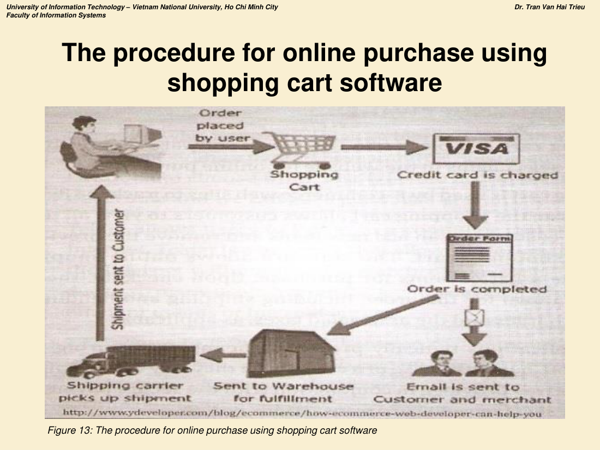
Hình 13 — The procedure for online purchase using shopping cart software.
Mô tả quy trình (7 bước — HỌC THUỘC ĐỂ VẼ LẠI):
| Bước | Hoạt động |
|---|---|
| 1 | Order placed by user — Người dùng đặt hàng (chọn sản phẩm trên website) |
| 2 | Sản phẩm được đưa vào Shopping Cart (giỏ hàng) |
| 3 | Credit card is charged — Thẻ tín dụng được ghi nợ (thanh toán) |
| 4 | Order is completed — Đơn hàng được hoàn tất (sinh Order Form) |
| 5 | Email is sent to Customer and merchant — Email xác nhận gửi tới cả khách hàng và người bán |
| 6 | Sent to Warehouse for fulfillment — Chuyển tới kho để hoàn tất đơn |
| 7 | Shipping carrier picks up shipment → Shipment sent to Customer — Đơn vị vận chuyển nhận hàng và giao tới khách hàng |
Các đặc tính bổ sung của phần mềm giỏ hàng: - Khách hàng thêm mặt hàng mới và bỏ mặt hàng đã chọn khỏi giỏ. - Phần mềm cho phép lưu danh sách các mặt hàng để mua. - Khi checkout, phần mềm tính tổng đơn hàng gồm phí vận chuyển & xử lý (shipping and handling) và các khoản thuế liên quan. - Hầu hết phần mềm giỏ hàng cung cấp thêm tính năng quản lý toàn bộ cửa hàng trực tuyến. - Dữ liệu về sản phẩm, danh mục, chiết khấu, đơn hàng và khách hàng được lưu trong CSDL và truy cập thời gian thực. - Các ứng dụng này thường cung cấp cách thu thập thông tin thanh toán của khách. - Còn được gọi là e-commerce software, e-store software.
| Loại | Mô tả |
|---|---|
| Licensed software (Có bản quyền) | Người bán trả phí license (thường một lần) và sở hữu phần mềm. Trong giới hạn hợp lý, có thể đặt phần mềm trên bất kỳ web server nào và thường có thể sửa đổi/tùy biến. Ưu điểm chính: sở hữu license nên host được trên bất kỳ web server nào đáp ứng yêu cầu |
| Hosted service (Dịch vụ lưu trữ) | Người bán trả phí định kỳ hằng tháng/năm để truy cập phần mềm. Không được chọn cấu hình hoặc vị trí web server, và không được sửa đổi/tùy biến phần mềm |
| Free licensed (Miễn phí có license) | Phần mềm miễn phí, nhưng vẫn phải sở hữu/bảo trì hoặc thuê web server |
Technology-enabled relationship management xảy ra khi doanh nghiệp thu được thông tin chi tiết về hành vi, sở thích, nhu cầu và mô hình mua hàng của một khách hàng.
Mục tiêu của CRM: - Hiểu nhu cầu cụ thể của từng khách hàng rồi tùy biến sản phẩm/dịch vụ để đáp ứng. - Ý tưởng: khách hàng được đáp ứng đúng nhu cầu sẵn sàng trả giá cao hơn. - Công ty mọi quy mô đều áp dụng được kỹ thuật CRM, nhưng công ty lớn đủ khả năng mua và triển khai phần mềm tự động hóa nhiều chức năng CRM.
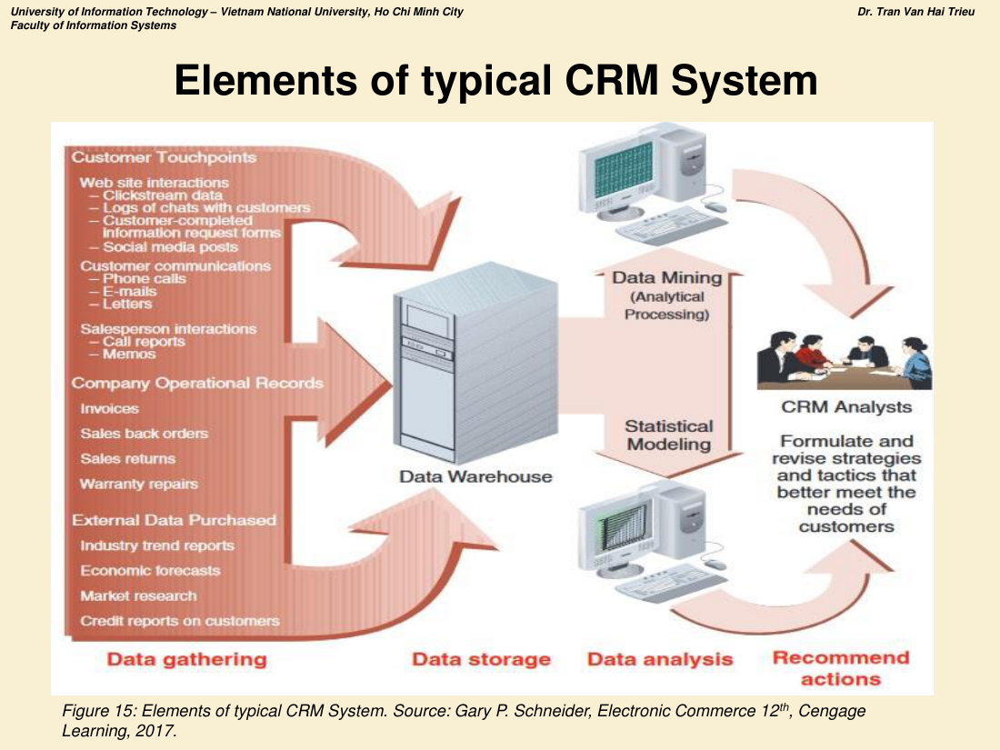
Hình 15 — Elements of typical CRM System (Schneider, Electronic Commerce 12th).
Bốn giai đoạn: Data gathering → Data storage → Data analysis → Recommend actions
| Giai đoạn | Nội dung |
|---|---|
| 1. Data gathering (Thu thập dữ liệu) | Customer Touchpoints: • Web site interactions: clickstream data, log chat với khách, form yêu cầu thông tin do khách điền, bài đăng mạng xã hội • Customer communications: cuộc gọi, e-mail, thư • Salesperson interactions: báo cáo cuộc gọi, memo Company Operational Records: hóa đơn, đơn hàng chờ, hàng trả lại, sửa chữa bảo hành External Data Purchased: báo cáo xu hướng ngành, dự báo kinh tế, nghiên cứu thị trường, báo cáo tín dụng khách hàng |
| 2. Data storage (Lưu trữ) | Tất cả đổ vào Data Warehouse (Kho dữ liệu) |
| 3. Data analysis (Phân tích) | Data Mining (Analytical Processing) và Statistical Modeling |
| 4. Recommend actions (Khuyến nghị hành động) | CRM Analysts — xây dựng và điều chỉnh các chiến lược, chiến thuật để đáp ứng tốt hơn nhu cầu khách hàng |
Sơ đồ thành phần chi tiết hơn:
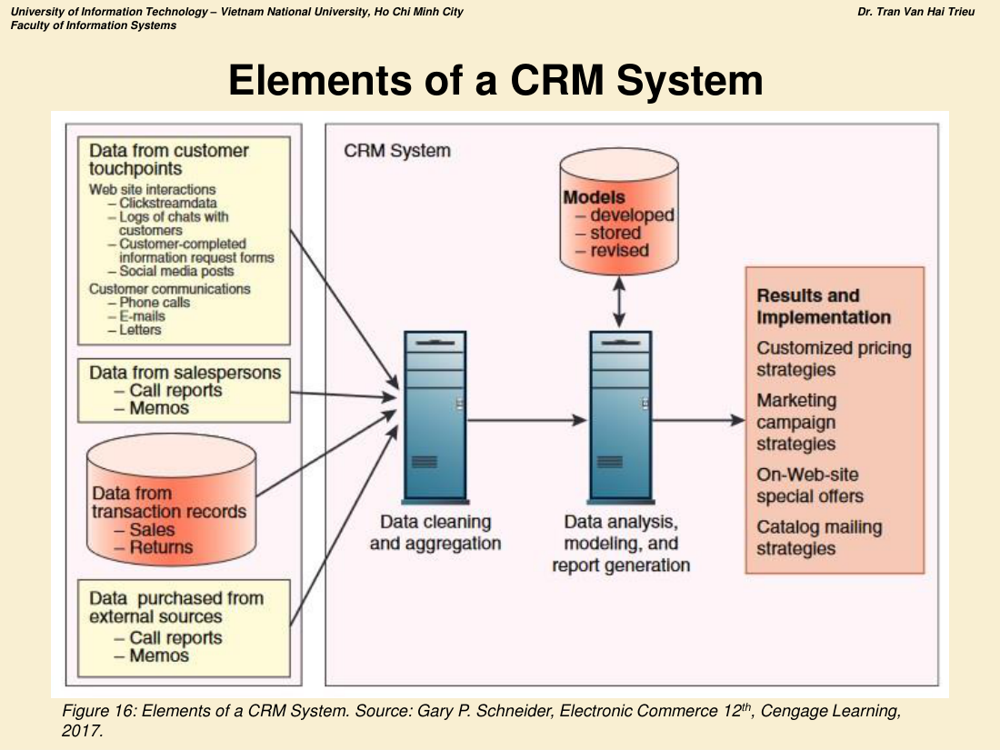
Hình 16 — Elements of a CRM System.
| Đầu vào | Xử lý trong CRM System | Kết quả |
|---|---|---|
| • Data from customer touchpoints (clickstream, chat logs, form,
social media, gọi điện, email, thư) • Data from salespersons (call reports, memos) • Data from transaction records (Sales, Returns) • Data purchased from external sources |
1. Data cleaning and aggregation (Làm sạch &
tổng hợp dữ liệu) → 2. Data analysis, modeling, and report generation (Phân tích, mô hình hóa, tạo báo cáo) ↕ Models — developed / stored / revised |
Results and Implementation: • Customized pricing strategies (chiến lược giá tùy biến) • Marketing campaign strategies • On-Web-site special offers • Catalog mailing strategies |
Supply chain management: việc điều phối tất cả các hoạt động cung ứng của một tổ chức, từ nhà cung cấp và đối tác tới khách hàng của tổ chức.
| Khái niệm | Định nghĩa | Tương đương |
|---|---|---|
| Upstream supply chain (Chuỗi cung ứng thượng nguồn) | Giao dịch giữa tổ chức với nhà cung cấp và trung gian | Buy-side e-commerce |
| Downstream supply chain (Chuỗi cung ứng hạ nguồn) | Giao dịch giữa tổ chức với khách hàng và trung gian | Sell-side e-commerce |
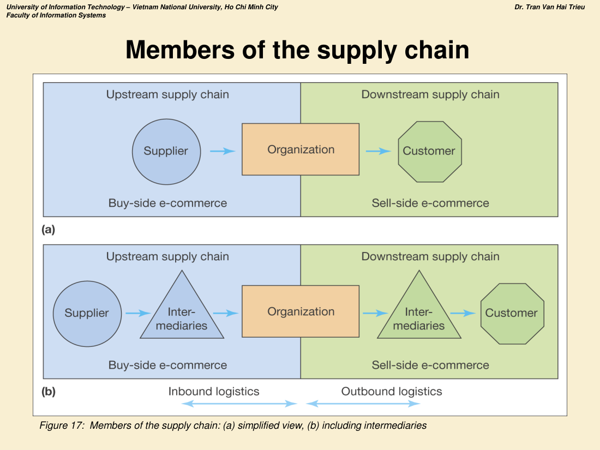
Hình 17 — Members of the supply chain: (a) simplified view, (b) including intermediaries.
(a) Dạng đơn giản:
[Supplier] → [Organization] → [Customer]
Upstream supply chain | Downstream supply chain
Buy-side e-commerce | Sell-side e-commerce(b) Có trung gian:
[Supplier] → [Intermediaries] → [Organization] → [Intermediaries] → [Customer]
Upstream (Buy-side) | Downstream (Sell-side)
← Inbound logistics → | ← Outbound logistics →📌 Ghi nhớ: Inbound logistics ở phía thượng nguồn (mua), Outbound logistics ở phía hạ nguồn (bán).
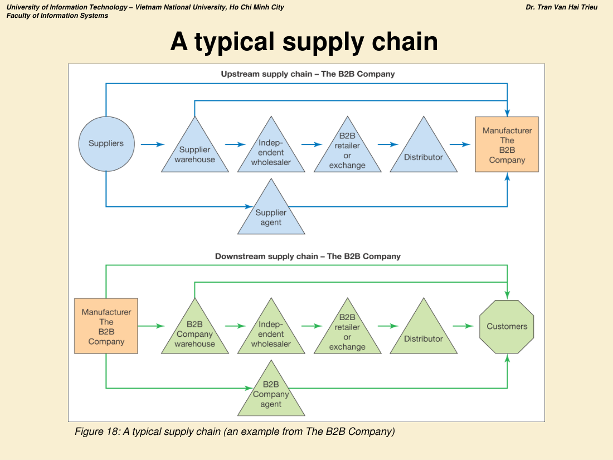
Hình 18 — A typical supply chain (an example from The B2B Company).
Upstream supply chain (từ nhà cung cấp về Manufacturer):
Suppliers → Supplier warehouse → Independent wholesaler → B2B retailer or exchange
→ Distributor → Manufacturer (The B2B Company)Đồng thời có các đường tắt (by-pass): Suppliers có thể đi thẳng tới Manufacturer, hoặc đi qua Supplier agent rồi tới Manufacturer.
Downstream supply chain (từ Manufacturer tới khách hàng):
Manufacturer (The B2B Company) → B2B Company warehouse → Independent wholesaler
→ B2B retailer or exchange → Distributor → CustomersCũng có đường tắt: Manufacturer đi thẳng tới Customers, hoặc qua B2B Company agent rồi tới Customers.
📌 Ý nghĩa các đường tắt = cơ hội DISINTERMEDIATION — dùng Internet để bán/mua trực tiếp, bỏ bớt trung gian, giảm chi phí và thời gian.
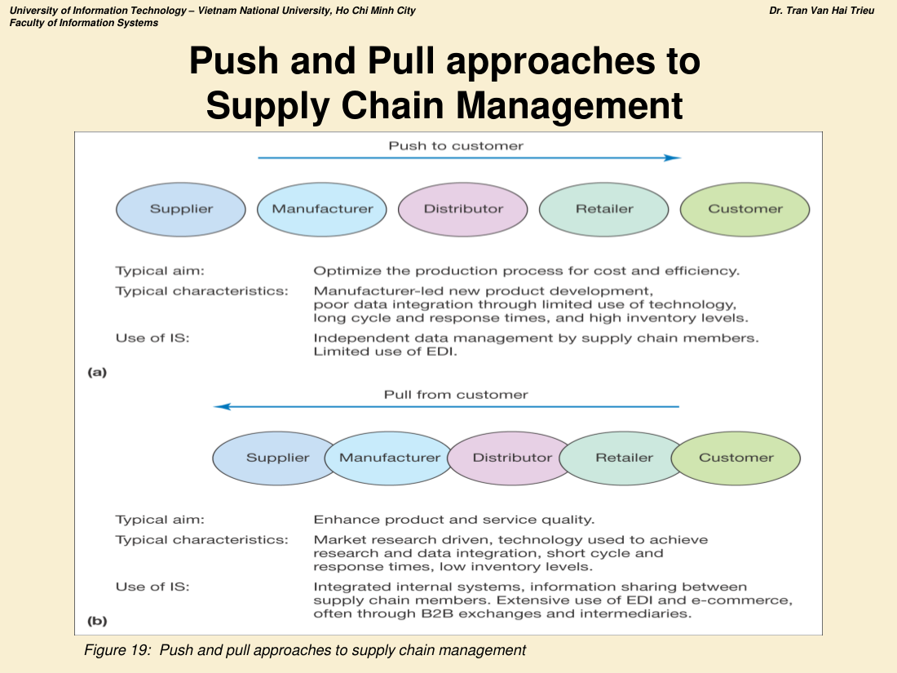
Hình 19 — Push and pull approaches to supply chain management.
| Tiêu chí | (a) PUSH — “Push to customer” | (b) PULL — “Pull from customer” |
|---|---|---|
| Chiều dòng chảy | Supplier → Manufacturer → Distributor → Retailer → Customer | Customer → Retailer → Distributor → Manufacturer → Supplier |
| Typical aim (Mục tiêu điển hình) | Tối ưu quy trình sản xuất về chi phí và hiệu quả | Nâng cao chất lượng sản phẩm và dịch vụ |
| Typical characteristics | • Phát triển sản phẩm mới do nhà sản xuất dẫn
dắt • Tích hợp dữ liệu kém do sử dụng công nghệ hạn chế • Chu kỳ và thời gian đáp ứng dài • Mức tồn kho cao |
• Do nghiên cứu thị trường dẫn dắt • Công nghệ được dùng để tích hợp nghiên cứu và dữ liệu • Chu kỳ và thời gian đáp ứng ngắn • Mức tồn kho thấp |
| Use of IS (Sử dụng HTTT) | Quản lý dữ liệu độc lập bởi từng thành viên chuỗi. Sử dụng EDI hạn chế | Hệ thống nội bộ tích hợp, chia sẻ thông tin giữa các thành viên. Sử dụng EDI và e-commerce rộng rãi, thường qua sàn B2B và trung gian |
📌 ĐÂY LÀ MỘT TRONG NHỮNG CÂU HỎI DỄ RA NHẤT: “So sánh mô hình push và pull trong SCM; đề xuất chuyển từ push sang pull cho một doanh nghiệp cụ thể”.
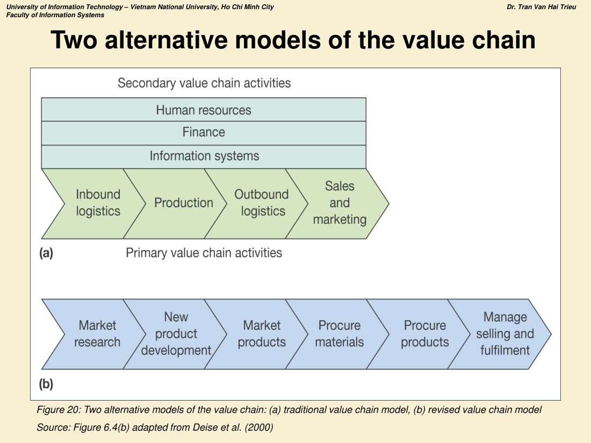
Hình 20 — Two alternative models of the value chain: (a) traditional, (b) revised (Deise et al., 2000).
(a) Mô hình chuỗi giá trị TRUYỀN THỐNG (Porter):
| Loại hoạt động | Các hoạt động |
|---|---|
| Secondary value chain activities (Hoạt động hỗ trợ) | Human resources · Finance · Information systems |
| Primary value chain activities (Hoạt động chính) | Inbound logistics → Production → Outbound logistics → Sales and marketing |
(b) Mô hình chuỗi giá trị SỬA ĐỔI (revised — Deise et al. 2000):
Market research → New product development → Market products → Procure materials
→ Procure products → Manage selling and fulfilmentSo sánh — điểm khác biệt cốt lõi:
| Tiêu chí | Truyền thống | Sửa đổi |
|---|---|---|
| Điểm khởi đầu | Logistics đầu vào (bắt đầu từ nguyên vật liệu) | Market research (bắt đầu từ thị trường/khách hàng) |
| Tư duy | Push — sản xuất rồi bán | Pull — nghiên cứu thị trường trước, mua & sản xuất sau |
| Vị trí “Procure” | Ở đầu chuỗi (inbound logistics) | Ở SAU khi đã nghiên cứu thị trường và phát triển sản phẩm |
| Tính chất | Tuyến tính, nội bộ | Định hướng khách hàng, tích hợp thông tin |
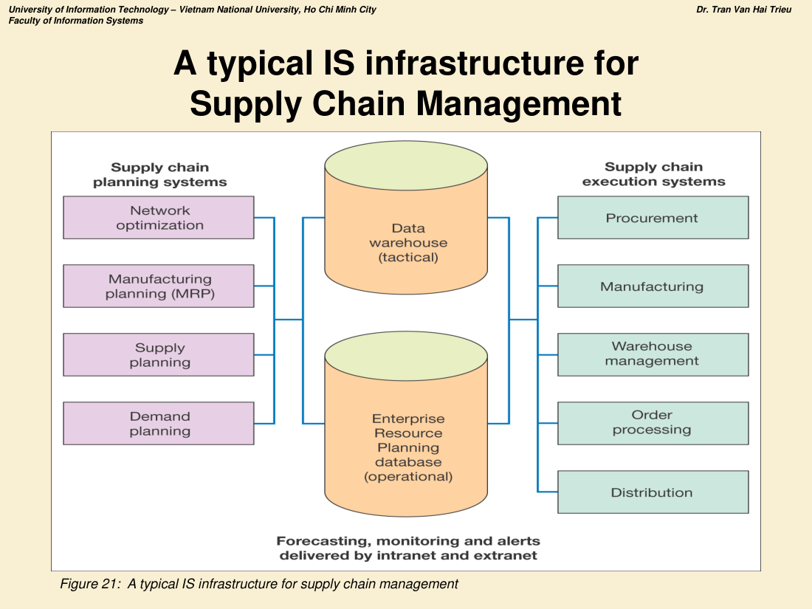
Hình 21 — A typical IS infrastructure for supply chain management.
| Bên trái: Supply chain PLANNING systems | Trung tâm: Cơ sở dữ liệu | Bên phải: Supply chain EXECUTION systems |
|---|---|---|
| • Network optimization (Tối ưu mạng lưới) • Manufacturing planning (MRP) • Supply planning (Hoạch định cung) • Demand planning (Hoạch định cầu) |
• Data warehouse (tactical) — Kho dữ liệu, cấp
chiến thuật • Enterprise Resource Planning database (operational) — CSDL ERP, cấp tác nghiệp |
• Procurement (Mua hàng) • Manufacturing (Sản xuất) • Warehouse management (Quản lý kho) • Order processing (Xử lý đơn hàng) • Distribution (Phân phối) |
Ở dưới cùng: “Forecasting, monitoring and alerts delivered by intranet and extranet” — Dự báo, giám sát và cảnh báo được phân phối qua intranet và extranet.
| Lợi ích | Kết quả cụ thể |
|---|---|
| Tăng hiệu quả từng quy trình riêng lẻ | Giảm chu kỳ (cycle time) và chi phí trên mỗi đơn hàng |
| Giảm độ phức tạp của chuỗi cung ứng | Giảm chi phí phân phối và bán qua kênh |
| Cải thiện tích hợp dữ liệu giữa các mắt xích | Giảm chi phí xử lý giấy tờ |
| Giảm chi phí nhờ thuê ngoài (outsourcing) | Chi phí thấp hơn nhờ cạnh tranh giá |
| Đổi mới (Innovation) | Đáp ứng khách hàng tốt hơn |
Mua hàng phải: 1. At the right price — đúng giá 2. Delivered at the right time — giao đúng thời điểm 3. Are of the right quality — đúng chất lượng 4. Of the right quantity — đúng số lượng 5. From the right source — từ đúng nguồn
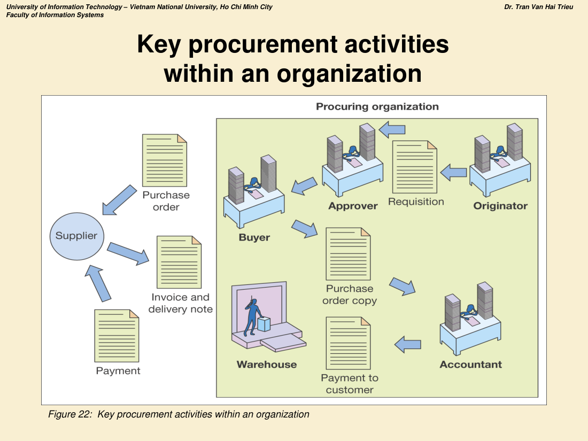
Hình 22 — Key procurement activities within an organization.
Bốn vai trò trong tổ chức mua hàng (procuring organization): Originator → Approver → Buyer → Accountant (+ Warehouse)
QUY TRÌNH MUA SẮM ĐẦY ĐỦ (8 bước — HỌC THUỘC ĐỂ VẼ LẠI):
| Bước | Chủ thể | Hoạt động / Chứng từ |
|---|---|---|
| 1 | Originator (Người khởi tạo) | Lập Requisition (Đề nghị mua hàng) và gửi cho Approver |
| 2 | Approver (Người phê duyệt) | Phê duyệt đề nghị mua hàng, chuyển cho Buyer |
| 3 | Buyer (Người mua) | Phát hành Purchase order (Đơn đặt hàng) gửi tới Supplier |
| 4 | Supplier (Nhà cung cấp) | Giao hàng kèm Invoice and delivery note (Hóa đơn và phiếu giao hàng) |
| 5 | Warehouse (Kho) | Nhận hàng và nhập kho |
| 6 | Buyer → Accountant | Gửi Purchase order copy (bản sao đơn đặt hàng) cho Kế toán |
| 7 | Accountant (Kế toán) | Đối chiếu 3 chứng từ (PO, phiếu giao hàng, hóa đơn) và lập lệnh Payment |
| 8 | Payment | Thanh toán được gửi tới Supplier |
📌 Đây là quy trình chuẩn để trả lời câu “Hãy mô tả quy trình mua hàng của doanh nghiệp và đề xuất cải tiến bằng e-procurement”.
Cải tiến bằng e-procurement: thay chứng từ giấy bằng luồng điện tử (EDI / extranet / hệ thống e-procurement); phê duyệt điện tử theo workflow; catalogue điện tử của nhà cung cấp; tự động đối chiếu ba chiều (3-way matching); thanh toán điện tử ⇒ giảm chu kỳ, giảm sai sót, giảm chi phí xử lý giấy tờ, chống maverick purchasing.
| Câu hỏi | Phân loại |
|---|---|
| What is bought? (Mua gì?) | Production-related (liên quan sản xuất — hàng trực
tiếp) Non-production related (không liên quan sản xuất — hàng gián tiếp, MRO) |
| How are items bought? (Mua thế nào?) | Systematic sourcing — quan hệ dài
hạn Spot sourcing — đáp ứng nhu cầu tức thời |
| Loại rủi ro | Nội dung |
|---|---|
| Tỷ lệ áp dụng thấp | Vì sao e-procurement ít được chấp nhận? |
| Rủi ro tổ chức | Dịch chuyển/thay thế nhân viên (displace employees) và Maverick purchases (mua ngoài hệ thống, không tuân thủ quy trình) |
| Không đạt được mức giảm chi phí thực sự | Failure to achieve real cost reductions |
| Rủi ro công nghệ | Công nghệ và mô hình mới liên tục xuất hiện; khó quyết định chọn cái nào |
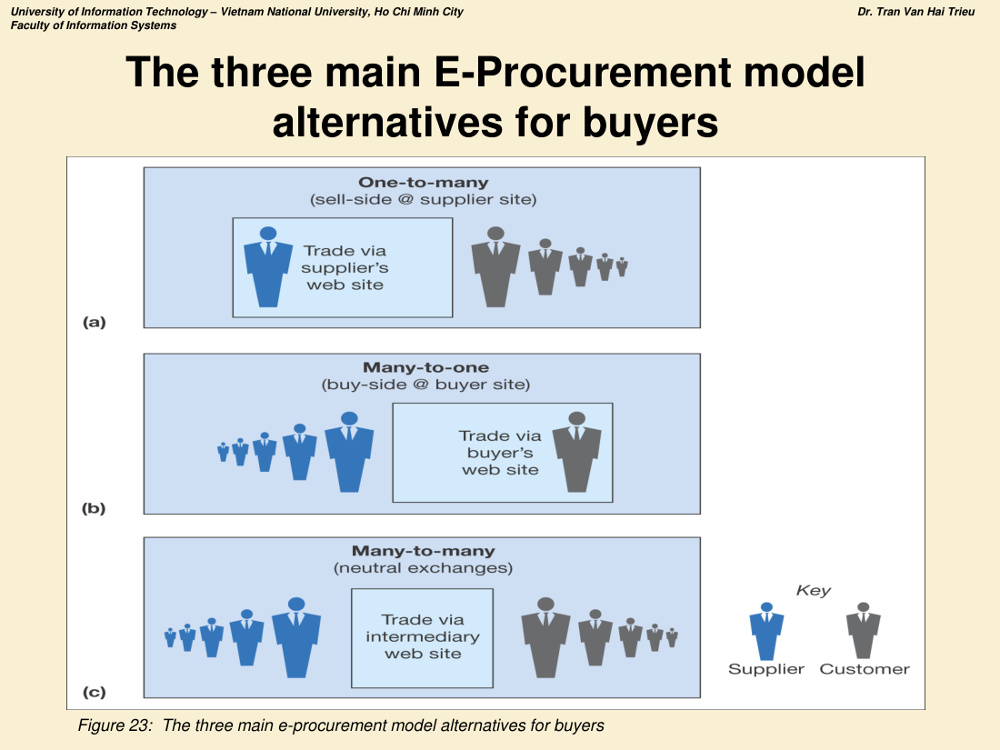
Hình 23 — The three main e-procurement model alternatives for buyers.
| Mô hình | Tên gọi | Cơ chế | Ai hưởng lợi |
|---|---|---|---|
| (a) One-to-many | Sell-side @ supplier site | Trade via supplier’s web site — giao dịch qua website của nhà cung cấp; 1 nhà cung cấp phục vụ nhiều khách hàng | Nhà cung cấp kiểm soát |
| (b) Many-to-one | Buy-side @ buyer site | Trade via buyer’s web site — giao dịch qua website của người mua; nhiều nhà cung cấp phục vụ 1 người mua | Người mua kiểm soát (thường là DN lớn) |
| (c) Many-to-many | Neutral exchanges | Trade via intermediary web site — giao dịch qua website của trung gian trung lập; nhiều nhà cung cấp ↔︎ nhiều khách hàng | Trung gian — sàn giao dịch |
| Loại | Định nghĩa |
|---|---|
| Vertical marketplace | Phục vụ cùng một ngành |
| Horizontal marketplace | Phục vụ nhiều ngành |
| Reverse aggregation | Gộp sức mua (của nhiều người mua) |
| Forward aggregation | Gộp nhiều nhà cung cấp hoặc nhiều chức năng chuỗi cung ứng |
| Metamediaries | Trung gian của trung gian |
ERP là các gói phần mềm hệ thống kinh doanh tích hợp TOÀN BỘ các mặt của một doanh nghiệp.
Bao gồm: kế toán (accounting), logistics, sản xuất (manufacturing), marketing, hoạch định (planning), quản trị dự án (project management), các chức năng ngân quỹ (treasury)…
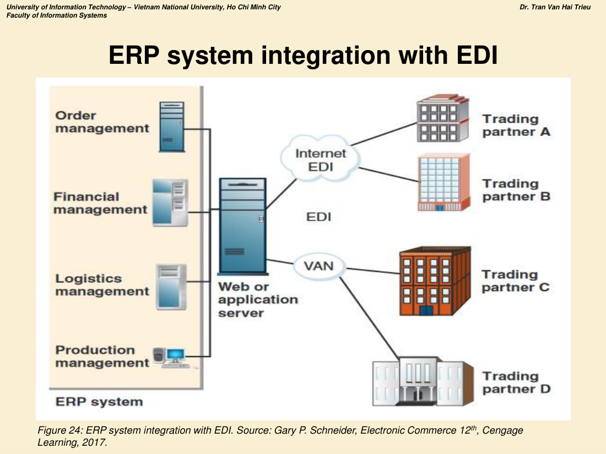
Hình 24 — ERP system integration with EDI (Schneider, Electronic Commerce 12th).
Cấu trúc:
| Thành phần | Nội dung |
|---|---|
| ERP system (bên trái) | Order management · Financial management · Logistics management · Production management |
| Kết nối (giữa) | Web or application server |
| Hai kênh EDI | Internet EDI (qua Internet) → Trading
partner A, B VAN (Value Added Network) → Trading partner C, D |
📌 Ý nghĩa: ERP tích hợp nội bộ; EDI (qua Internet EDI hoặc VAN) kết nối ERP với các đối tác thương mại bên ngoài ⇒ đây chính là cầu nối giữa E-business nội bộ và E-commerce với bên ngoài.
Web hosting là dịch vụ cho phép tổ chức và cá nhân xuất bản (publish) hoặc tải lên (upload) một website/trang web lên Internet.
Các bước host một website: 1. Upload file từ máy tính lên server web hosting 2. Máy chủ làm cho site khả dụng trên Internet 3. Khách truy cập xem được website
| # | Tính năng |
|---|---|
| 1 | Amount of Storage (Dung lượng lưu trữ) |
| 2 | Amount of Bandwidth (Băng thông) |
| 3 | Domain Registration (Đăng ký tên miền) |
| 4 | Number of Sub-domains (Số tên miền phụ) |
| 5 | Email Support |
| 6 | Database Support |
| 7 | Technical Support |
| 8 | Site Backup |
| 9 | Choice of Operating System |
| 10 | 24/7 Availability |
| Loại | Mô tả | Ưu/Nhược |
|---|---|---|
| 1. Free Web Hosting | Nhiều nhà cung cấp bù chi phí bằng quảng cáo tự động chèn vào trang qua pop-up, frame, script. Có thể qua dịch vụ như Google Cloud Hosting hoặc qua ISP | Bị giới hạn so với hosting trả phí: ít dung lượng và băng thông hơn |
| 2. Shared Web Hosting | Phổ biến nhất. Gọi là “shared” vì nhiều ứng dụng web (thường là website) được lưu trên MỘT máy chủ vật lý và chia sẻ tài nguyên (RAM, CPU). Trả tiền hằng tháng cho không gian và dịch vụ | Rẻ; giá phụ thuộc dịch vụ mong muốn (email, CSDL, bảo mật, thêm dung lượng, thêm băng thông…). Bị ảnh hưởng bởi các site khác |
| 3. Dedicated Web Hosting | Ngược với shared: ứng dụng của khách hàng KHÔNG chia sẻ tài nguyên server với người khác. Server dùng toàn bộ băng thông khả dụng cho riêng mình | Dành cho website và ứng dụng lưu lượng cao. Đắt hơn |
| 4. Cloud Web Hosting | “Cloud” là cấu trúc điện tử nơi dữ liệu được lưu trên nhiều máy tính khác nhau và phục vụ qua kết nối mạng. Dữ liệu website (HTML, CSS, hình ảnh…) được trải trên một cụm ổ cứng liên kết với nhau | Xu hướng nóng nhất; nhiều ưu điểm hơn shared hosting, đôi khi vượt cả dedicated hosting. Dựa trên công nghệ điện toán đám mây cho phép số lượng máy không giới hạn hoạt động như một hệ thống |
| 5. Co-location Web Hosting | Giống dedicated nhưng NGƯỜI DÙNG SỞ HỮU MÁY CHỦ. Công ty hosting cung cấp không gian vật lý đặt server và chăm sóc server. Mạnh nhất và đắt nhất. Khách hàng phải cử quản trị viên tới data center để nâng cấp/thay đổi phần cứng | Có hai dạng: managed và unmanaged (“unmanaged” = doanh nghiệp/cá nhân tự xử lý toàn bộ quản trị server: cập nhật phần mềm, web server và chính site). Hoàn hảo cho công ty cần cấu hình phần mềm tùy biến hoặc bảo mật web nâng cao |
An ninh TMĐT tốt là gì? - Để đạt mức bảo mật cao nhất cần: công nghệ mới + chính sách và quy trình của tổ chức + chuẩn ngành và luật pháp. - Yếu tố khác: giá trị thời gian của tiền, chi phí bảo mật so với tổn thất tiềm tàng.
Bảng 9 — Góc nhìn của khách hàng và người bán về các chiều an ninh TMĐT:
| Chiều an ninh | Góc nhìn KHÁCH HÀNG | Góc nhìn NGƯỜI BÁN |
|---|---|---|
| Integrity (Toàn vẹn) |
Thông tin tôi gửi/nhận có bị thay đổi không? | Dữ liệu trên site có bị thay đổi trái phép không? Dữ liệu nhận từ khách có hợp lệ không? |
| Nonrepudiation (Chống chối bỏ) |
Bên giao dịch với tôi có thể chối bỏ hành động đã thực hiện sau này không? | Khách hàng có thể phủ nhận việc đã đặt hàng không? |
| Authenticity (Xác thực) |
Tôi đang giao dịch với ai? Làm sao chắc chắn người/tổ chức đó đúng là họ tuyên bố? | Danh tính thật của khách hàng là gì? |
| Confidentiality (Bảo mật) |
Ngoài người nhận dự kiến, có ai khác đọc được tin nhắn của tôi không? | Tin nhắn hoặc dữ liệu mật có bị ai ngoài người được phép truy cập không? |
| Privacy (Riêng tư) |
Tôi có kiểm soát được việc sử dụng thông tin về bản thân đã gửi cho người bán không? | Dữ liệu cá nhân thu thập trong giao dịch TMĐT được dùng thế nào? Thông tin cá nhân của khách có bị dùng trái phép không? |
| Availability (Sẵn sàng) |
Tôi có truy cập được site không? | Site có đang hoạt động không? |
Căng thẳng giữa an ninh và các giá trị khác: - Ease of use: càng thêm biện pháp bảo mật thì site càng khó dùng và càng chậm. - Public safety và việc tội phạm dùng Internet: tội phạm dùng công nghệ để lập kế hoạch phạm tội hoặc đe dọa quốc gia.
Ba điểm yếu then chốt trong môi trường TMĐT: 1. Client (Máy khách) 2. Server (Máy chủ) 3. Communications pipeline (Đường ống truyền thông — kênh truyền Internet)
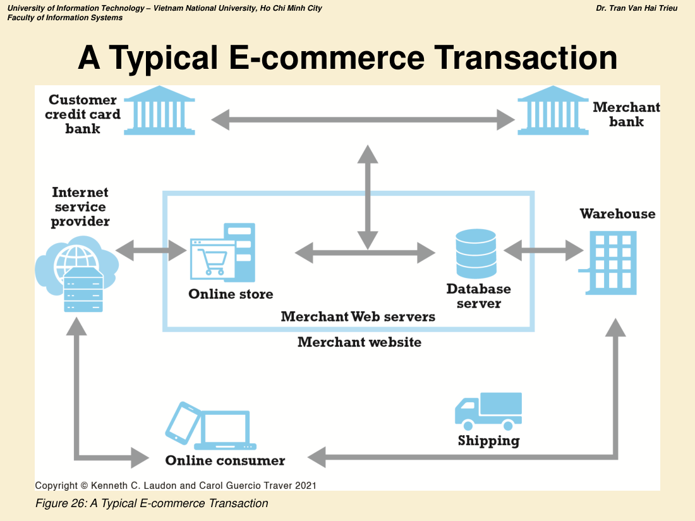
Hình 26 — A Typical E-commerce Transaction.
Các thành phần và luồng:
| Thành phần | Vai trò |
|---|---|
| Online consumer | Người tiêu dùng trực tuyến (máy tính, điện thoại) |
| Internet service provider | Nhà cung cấp dịch vụ Internet — cầu nối người tiêu dùng tới merchant |
| Merchant website | Gồm Online store ↔︎ Merchant Web servers ↔︎ Database server |
| Customer credit card bank ↔︎ Merchant bank | Hai ngân hàng trao đổi để thanh toán |
| Warehouse | Kho hàng — nhận lệnh từ database server |
| Shipping | Vận chuyển hàng tới Online consumer |
Luồng: Online consumer → ISP → Online store → Database server → Warehouse → Shipping → Online consumer; song song: Merchant Web servers ↔︎ Merchant bank ↔︎ Customer credit card bank.
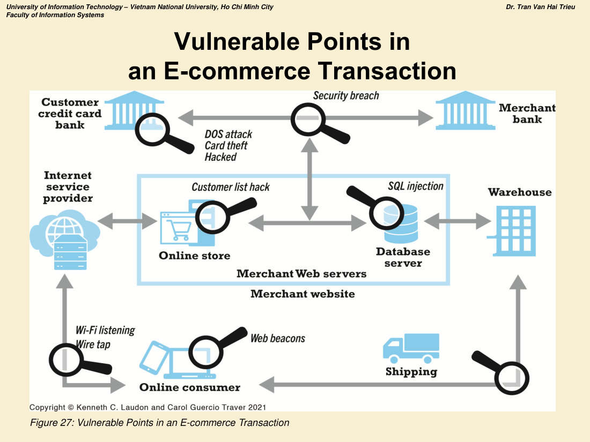
Hình 27 — Vulnerable Points in an E-commerce Transaction.
| Vị trí | Mối đe dọa |
|---|---|
| Giữa consumer và ISP | Wi-Fi listening (nghe lén Wi-Fi), Wire tap (nghe lén đường truyền) |
| Tại Online consumer | Web beacons |
| Tại Online store | Customer list hack (đánh cắp danh sách khách hàng) |
| Tại Database server | SQL injection |
| Giữa Customer credit card bank và Merchant bank | Security breach (xâm phạm bảo mật) |
| Tại Customer credit card bank | DOS attack, Card theft, Hacked |
| Tại Shipping / Warehouse | Điểm yếu trong khâu giao nhận |
📌 Câu hỏi rất hay ra: “Vẽ sơ đồ một giao dịch TMĐT điển hình và chỉ ra các điểm dễ bị tấn công cùng giải pháp phòng ngừa.”
Malvertising · Viruses · Worms · Ransomware · Trojan horses · Backdoors · Drive-by downloads.
| Loại | Mô tả |
|---|---|
| Browser parasites | Giám sát và thay đổi trình duyệt của người dùng |
| Adware | Gọi quảng cáo pop-up |
| Spyware | Theo dõi thao tác bàn phím, email, tin nhắn của người dùng |
Mọi nỗ lực lừa đảo trực tuyến của bên thứ ba nhằm lấy thông tin bí mật để trục lợi tài chính.
Chiến thuật: Social engineering · E-mail scams và BEC phishing · Spear phishing. Dùng cho gian lận và đánh cắp danh tính.
| Khái niệm | Nội dung |
|---|---|
| Hacking | Hackers vs crackers; White hats, black hats, grey hats; Mục tiêu: cybervandalism, data breaches |
| Cybervandalism | Phá rối và phá hủy website |
| Hacktivism | Tấn công mạng vì mục đích chính trị/xã hội |
Tổ chức mất kiểm soát thông tin doanh nghiệp vào tay người ngoài.
Sử dụng trái phép dữ liệu cá nhân của người khác để trục lợi tài chính bất hợp pháp: số an sinh xã hội, giấy phép lái xe, số thẻ tín dụng, username/password.
2017: gần 17 triệu người Mỹ bị; 2018: 14,4 triệu.
| Khái niệm | Định nghĩa |
|---|---|
| Spoofing | Che giấu danh tính thật bằng cách dùng email hoặc địa chỉ IP của người khác |
| Pharming | Tự động chuyển hướng một URL sang địa chỉ khác để hacker trục lợi |
| Spam (junk) websites | Cung cấp tập hợp quảng cáo cho site khác, có thể chứa mã độc |
| Khái niệm | Định nghĩa |
|---|---|
| Sniffer | Chương trình nghe lén giám sát mạng; có thể phát hiện điểm sự cố mạng; cũng có thể bị tội phạm dùng để đánh cắp thông tin độc quyền |
| E-mail wiretaps | Ghi lại email tại cấp mail server |
| Man-in-the-middle attack | Kẻ tấn công chặn và thay đổi liên lạc giữa hai bên đang tin rằng họ giao tiếp trực tiếp với nhau |
| Loại | Mô tả |
|---|---|
| DoS (Denial of Service) | Làm ngập website bằng ping và yêu cầu trang, áp đảo và có thể làm sập web server; thường kèm tống tiền |
| DDoS (Distributed DoS) | Dùng hàng trăm/hàng nghìn máy tính tấn công mạng mục tiêu; có thể dùng thiết bị IoT và thiết bị di động |
Độ phức tạp và nhu cầu phần mềm tăng ⇒ tăng lỗi và lỗ hổng. SQL injection attacks · Zero-day vulnerability · Heartbleed bug; Shellshock (BashBug); FREAK.
| Môi trường | Vấn đề |
|---|---|
| Social Network | Virus, chiếm quyền site, gian lận danh tính, app chứa mã độc, click hijacking, phishing, spam; Manual sharing scams (chia sẻ file dẫn tới site độc hại); fake services, fake Like buttons, fake apps |
| Mobile Platform | Nhận thức công chúng về lỗ hổng thiết bị di động còn thấp; 2017: Symantec xác định hơn 26.500 biến thể mã độc di động; Vishing · Smishing · SMS spoofing · Madware |
| Cloud | DDoS attacks · Infrastructure scanning · Phishing công nghệ thấp lấy mật khẩu và quyền truy cập · Dùng cloud storage để kết nối tài khoản liên kết · Thiếu mã hóa và quy trình bảo mật mạnh |
| IoT | Môi trường khó bảo vệ; số lượng liên kết kết nối khổng lồ; thiết bị gần như giống hệt nhau và vòng đời dài; nhiều thiết bị không có tính năng nâng cấp; khả năng quan sát hoạt động, dữ liệu, bảo mật rất hạn chế |
| Nhóm | Giải pháp |
|---|---|
| Protecting Internet communications | Encryption (Mã hóa) |
| Securing channels of communication | SSL, TLS, VPNs, Wi-Fi |
| Protecting networks | Firewalls, proxy servers, IDS, IPS |
| Protecting servers and clients | OS security, anti-virus software |
Encryption: biến đổi dữ liệu thành bản mã (cipher text) mà chỉ người gửi và người nhận đọc được. Bảo vệ cả thông tin lưu trữ lẫn thông tin truyền đi.
Mã hóa cung cấp 4 trên 6 chiều an ninh TMĐT: 1. Message integrity 2. Nonrepudiation 3. Authentication 4. Confidentiality
(Không cung cấp: Privacy và Availability)
Quy trình: 1. Người gửi áp dụng thuật toán băm (hash function) lên thông điệp, rồi mã hóa thông điệp và kết quả băm bằng khóa công khai của người nhận. 2. Người gửi mã hóa thông điệp và kết quả băm bằng khóa RIÊNG của mình — tạo ra chữ ký số (digital signature), phục vụ tính xác thực (authenticity) và chống chối bỏ (nonrepudiation). 3. Người nhận trước tiên dùng khóa công khai của người gửi để xác thực thông điệp, sau đó dùng khóa riêng của mình để giải mã kết quả băm và thông điệp.
Giải quyết điểm yếu của cả hai phương pháp:
| Phương pháp | Điểm yếu |
|---|---|
| Public key cryptography | Chậm về tính toán, giảm tốc độ truyền, tăng thời gian xử lý |
| Symmetric key cryptography | Đường truyền không an toàn (khó trao đổi khóa an toàn) |
Cách hoạt động: - Dùng mã hóa khóa đối xứng để mã hóa TÀI LIỆU (nhanh) - Dùng mã hóa khóa công khai để mã hóa và gửi KHÓA ĐỐI XỨNG (an toàn)
Digital certificate bao gồm: 1. Tên chủ thể/công ty 2. Khóa công khai của chủ thể 3. Số sê-ri của chứng thư số 4. Ngày hết hạn, ngày cấp 5. Chữ ký số của CA (Certification Authority)
PKI (Public Key Infrastructure): các CA và quy trình chứng thư số; PGP.
Hạn chế của PKI: 1. Không bảo vệ việc lưu trữ khóa riêng — PKI không hiệu quả với người bên trong, nhân viên; việc bảo vệ khóa riêng của cá nhân có thể rất tùy tiện. 2. Không đảm bảo máy tính xác minh của người bán là an toàn. 3. CA không phổ biến và không được kiểm soát.
| Công nghệ | Nội dung |
|---|---|
| SSL/TLS | Thiết lập phiên client–server an toàn, được thương lượng (negotiated) |
| VPN (Virtual Private Network) | Cho phép người dùng từ xa truy cập mạng nội bộ an toàn qua Internet |
| Wireless (Wi-Fi) | WPA2, WPA3 |
| Công nghệ | Nội dung |
|---|---|
| Firewall | Phần cứng hoặc phần mềm dùng chính sách bảo mật để lọc gói tin: Packet filters, Application gateways; Next-generation firewalls |
| Proxy servers | Máy chủ phần mềm xử lý mọi liên lạc từ hoặc gửi tới Internet |
| IDS (Intrusion Detection Systems) | Hệ thống phát hiện xâm nhập |
| IPS (Intrusion Prevention Systems) | Hệ thống ngăn chặn xâm nhập |
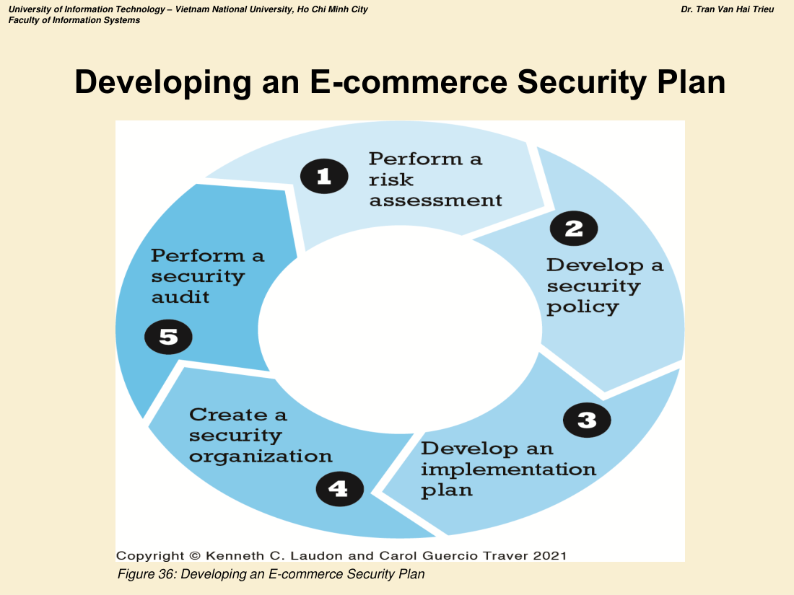
Hình 36 — Developing an E-commerce Security Plan.
| Bước | Nội dung | Giải thích |
|---|---|---|
| 1 | Perform a risk assessment | Đánh giá rủi ro — xác định tài sản, mối đe dọa, xác suất và mức thiệt hại |
| 2 | Develop a security policy | Xây dựng chính sách an ninh — tuyên bố về các rủi ro ưu tiên và mức chấp nhận được |
| 3 | Develop an implementation plan | Xây dựng kế hoạch triển khai — gồm Security organization, Access controls, Authentication procedures (kể cả biometrics), Authorization policies & authorization management systems |
| 4 | Create a security organization | Thành lập bộ phận an ninh — đào tạo, thiết lập công cụ truy cập |
| 5 | Perform a security audit | Kiểm toán an ninh — rà soát định kỳ nhật ký truy cập và đánh giá lại |
📌 Đây là quy trình vòng tròn — sau audit lại quay về risk assessment.
Vai trò của luật pháp và chính sách công: - Luật cung cấp công cụ nhận diện, truy vết, truy tố tội phạm mạng: USA Patriot Act, Homeland Security Act. - Hợp tác tư nhân và công-tư: US-CERT, CERT Coordination Center. - Chính sách chính phủ và kiểm soát phần mềm mã hóa: OECD, G7/G8, Council of Europe. - Việt Nam: Luật An ninh mạng (Cybersecurity Law)…
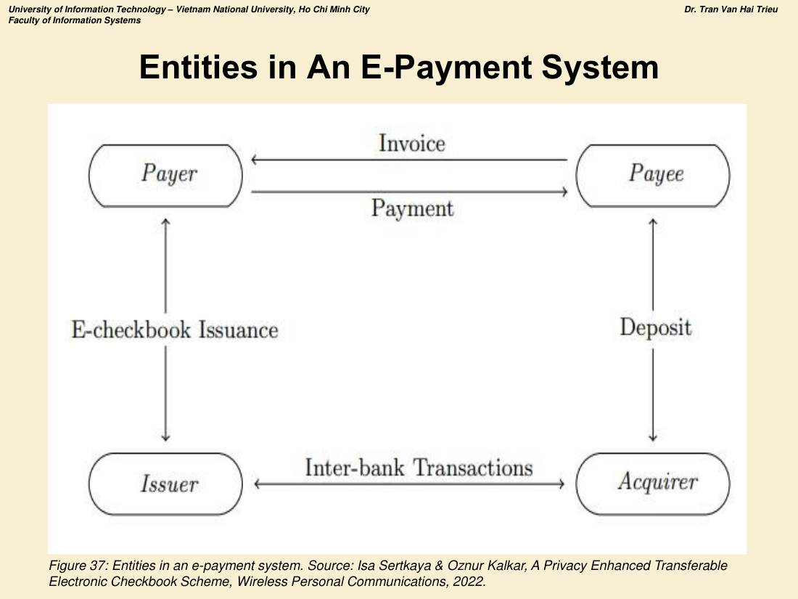
Hình 37 — Entities in an e-payment system.
| Thực thể | Vai trò |
|---|---|
| Payer (Người trả tiền) | Người mua/khách hàng — thực thể thực hiện thanh toán |
| Payee (Người nhận tiền) | Người bán/thương nhân — thực thể nhận thanh toán |
| Financial institution | Tổ chức tài chính (ngân hàng) — gồm Issuer (ngân hàng phát hành, phía người trả) và Acquirer (ngân hàng thanh toán, phía người nhận) |
Các luồng trong sơ đồ:
| Luồng | Giữa | Nội dung |
|---|---|---|
| Invoice | Payee → Payer | Hóa đơn |
| Payment | Payer → Payee | Thanh toán |
| E-checkbook Issuance | Issuer ↔︎ Payer | Phát hành sổ séc điện tử |
| Deposit | Payee ↔︎ Acquirer | Gửi tiền vào tài khoản |
| Inter-bank Transactions | Issuer ↔︎ Acquirer | Giao dịch liên ngân hàng |
Mục đích chính của giao thức thanh toán điện tử: chuyển giá trị tiền tệ từ Payer sang Payee.
| Giai đoạn | Nội dung |
|---|---|
| 1. Registration (Đăng ký) | Payer đăng ký với Issuer và Payee đăng ký với Acquirer. Hầu hết hệ thống thanh toán điện tử đều yêu cầu đăng ký để tạo liên kết giữa danh tính và tài khoản tại ngân hàng |
| 2. Invoicing (Lập hóa đơn) | Payer nhận hóa đơn thanh toán từ Payee. Thực hiện bằng cách duyệt và chọn sản phẩm trên website của người bán (nếu mua qua Internet) hoặc nhận hóa đơn điện tử qua phương tiện điện tử khác như e-mail |
| 3. Payment selection and processing (Chọn và xử lý thanh toán) | Payer chọn loại hình thanh toán (thẻ, E-cash, E-cheque…) dựa trên loại thanh toán mà Payee chấp nhận. Sau đó Payer gửi thông tin thanh toán liên quan (số tài khoản, định danh duy nhất) tới Payee cùng số tiền đã chấp nhận theo hóa đơn |
| 4. Payment authorization and confirmation (Ủy quyền và xác nhận thanh toán) | Acquirer nhận thông tin thanh toán từ Payee, ủy quyền thanh toán và phát hành biên nhận thông báo thành công hay thất bại cho Payee. Payee dựa trên thông điệp đó có thể phát hành biên nhận thanh toán cho Payer |
Ba công cụ thanh toán phổ biến: cheque (séc) và card (thẻ)…
| Hệ thống | Cơ chế |
|---|---|
| Pre-paid system (Trả trước) | Tài khoản của Payer bị ghi nợ TRƯỚC khi giao dịch được xử lý |
| Pay-now system (Trả ngay) | Khi giao dịch điện tử được xử lý, tài khoản Payer bị ghi nợ và tài khoản Payee được ghi có |
| Post-pay system (Trả sau) | Tài khoản Payer chỉ bị ghi nợ khi Payee yêu cầu quyết toán thanh toán với Acquirer |
SET là một dạng giao thức cho thanh toán bằng thẻ tín dụng điện tử, dùng để truyền thông tin thẻ tín dụng của người tiêu dùng một cách an toàn qua các kênh điện tử như Internet.
SET che giấu chi tiết thông tin thẻ tín dụng, ngăn người bán, hacker và kẻ trộm điện tử truy cập thông tin này.
| # | Bên tham gia |
|---|---|
| 1 | Card holder (Chủ thẻ) |
| 2 | Merchant (Người bán) |
| 3 | Issuer (Ngân hàng phát hành thẻ) |
| 4 | Acquirer (Ngân hàng thanh toán của người bán) |
| 5 | Payment gateway (Cổng thanh toán) |
| 6 | Certification authority (Tổ chức chứng thực) |
| Bước | Hoạt động |
|---|---|
| 1 | Khách hàng mở tài khoản thẻ tín dụng tại ngân hàng hỗ trợ thanh toán điện tử và SET |
| 2 | Khách hàng nhận chứng thư số do ngân hàng ký |
| 3 | Người bán có chứng thư riêng của mình. Khách hàng đặt hàng với người bán |
| 4 | Người bán gửi cho khách hàng khóa công khai và bản sao chứng thư của mình để khách xác minh đây là cửa hàng hợp lệ |
| 5 | Khách hàng gửi cho người bán: • Chứng thư của mình • Chi tiết đơn hàng — đã mã hóa • Chi tiết tài khoản ngân hàng — mã hóa bằng khóa công khai của NGÂN HÀNG |
| 6 | Người bán yêu cầu ủy quyền thanh toán bằng cách gửi
cho ngân hàng: • Chi tiết thanh toán mã hóa bằng khóa công khai của ngân hàng • Chi tiết tài khoản ngân hàng của khách hàng, mã hóa bằng khóa công khai của ngân hàng |
| 7 | ⚠️ NGƯỜI BÁN KHÔNG BIẾT chi tiết thanh toán và tài khoản ngân hàng của khách hàng (đặc tính cốt lõi của SET!) |
| 8 | Ngân hàng gửi cho người bán xác nhận, mã hóa bằng khóa công khai của người bán |
| 9 | Người bán gửi cho khách hàng phản hồi của ngân hàng, mã hóa bằng khóa công khai của khách hàng |
| 10 | Người bán giao hàng hoặc cung cấp dịch vụ cho khách hàng |
| 11 | Người bán gửi cho ngân hàng yêu cầu giao dịch, mã hóa bằng khóa công khai của ngân hàng → Ngân hàng chuyển tiền cho người bán |
| Ưu điểm | Nhược điểm |
|---|---|
| Đủ an toàn để bảo vệ số thẻ tín dụng và thông tin cá nhân của người dùng khỏi tấn công | Người dùng phải có thẻ tín dụng |
| Độc lập phần cứng (hardware independent) | Không hiệu quả về chi phí khi giá trị thanh toán nhỏ |
| Được dùng trên toàn thế giới | Không ẩn danh và có thể truy vết (traceable) |
| Cung cấp tính bảo mật của thông tin | Hiệu ứng mạng (network effect) — cần cài phần mềm client (e-wallet) |
| Cung cấp tính toàn vẹn dữ liệu | Chi phí và độ phức tạp cho người bán để hỗ trợ, so với giải pháp dựa trên SSL rẻ và đơn giản hơn |
| Cung cấp xác thực tài khoản chủ thẻ | |
| Cung cấp xác thực người bán |
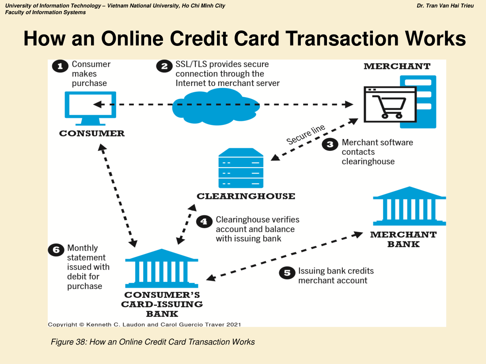
Hình 38 — How an Online Credit Card Transaction Works.
SÁU BƯỚC (HỌC THUỘC ĐỂ VẼ LẠI):
| Bước | Hoạt động |
|---|---|
| 1 | Consumer makes purchase — Người tiêu dùng thực hiện mua hàng |
| 2 | SSL/TLS provides secure connection through the Internet to merchant server — SSL/TLS cung cấp kết nối an toàn qua Internet tới máy chủ người bán |
| 3 | Merchant software contacts clearinghouse (qua secure line — đường truyền an toàn) — Phần mềm của người bán liên hệ trung tâm thanh toán bù trừ |
| 4 | Clearinghouse verifies account and balance with issuing bank — Clearinghouse xác minh tài khoản và số dư với ngân hàng phát hành thẻ |
| 5 | Issuing bank credits merchant account (qua Merchant bank) — Ngân hàng phát hành ghi có vào tài khoản người bán |
| 6 | Monthly statement issued with debit for purchase — Sao kê hằng tháng được phát hành, ghi nợ khoản mua hàng cho người tiêu dùng |
Các bên tham gia: Consumer · Merchant · Clearinghouse · Consumer’s card-issuing bank · Merchant bank.
| Loại | Mô tả | Ví dụ |
|---|---|---|
| Online stored value systems | Dựa trên giá trị lưu trong tài khoản ngân hàng, tài khoản séc hoặc thẻ tín dụng của người tiêu dùng | PayPal |
| Khác | — | Amazon Pay, Visa Checkout, Mastercard MasterPass |
Hệ thống thanh toán di động (Mobile Payment Systems): - Dùng điện thoại di động làm thiết bị thanh toán; đã phổ biến ở châu Âu và châu Á, đang mở rộng ở Mỹ. - Công nghệ: NFC (Near Field Communication). - Ba loại ví di động:
| Loại ví | Ví dụ |
|---|---|
| Universal proximity mobile wallets | Apple Pay, Google Pay, Samsung Pay, PayPal Mobile |
| Branded store proximity wallets | Walmart, Target, Starbucks |
| P2P mobile payment apps | Zelle, Venmo |
Blockchain cho phép tổ chức tạo và xác minh giao dịch gần như tức thời bằng cách dùng CSDL P2P phân tán (sổ cái phân tán — distributed ledger).
Lợi ích: - Giảm chi phí xác minh người dùng - Giảm chi phí xác thực giao dịch - Giảm rủi ro của việc lưu trữ và xử lý thông tin giao dịch
Ứng dụng: Là công nghệ nền tảng cho tiền mã hóa và quản trị chuỗi cung ứng, cũng như tiềm năng trong dịch vụ tài chính và y tế.
Pháp luật – Thuế: - [ ] 4 nhóm vấn đề đạo đức; 4 quyền information privacy; GDPR - [ ] 4 hình thức bảo hộ SHTT (Copyright/Patent/Trademark/Trade secret) + DMCA + vụ Alice 2014 - [ ] Nghị quyết 57/59/66/68; Luật TMĐT 122/2025/QH15 hiệu lực 01/7/2026; NĐ 52/2013 + 85/2021; NĐ 117/2025; NĐ 98/2020 - [ ] 8 loại thuế chính
Phần mềm & Hosting: - [ ] SDLC 5 bước + best practices - [ ] Bảng Business objective – System functionality – Information requirements (10 dòng) - [ ] DFD website đơn giản (vẽ lại được) - [ ] Ma trận Build × Host (4 ô) - [ ] 5 loại testing; kiến trúc 2-tier vs multi-tier (3 lớp) - [ ] 16 tính năng gây khó chịu + 8 yếu tố thiết kế thành công - [ ] 4 loại phần mềm m-commerce; 4 đặc điểm riêng của mobile; RWD vs AWD - [ ] Quy trình 7 bước mua hàng qua shopping cart ⭐ - [ ] 3 loại phần mềm giỏ hàng - [ ] CRM: 4 giai đoạn (gather – store – analyze – recommend) ⭐ - [ ] SCM: upstream/downstream; sơ đồ thành viên chuỗi; chuỗi B2B Company ⭐ - [ ] PUSH vs PULL (bảng 3 dòng: aim / characteristics / use of IS) ⭐⭐ - [ ] Chuỗi giá trị truyền thống vs sửa đổi ⭐ - [ ] IS infrastructure cho SCM (planning – DB – execution) ⭐ - [ ] 5 lợi ích của IS cho SCM - [ ] E-procurement: định nghĩa, 5 rights, quy trình 8 bước, 3 mô hình, rủi ro, triển khai ⭐⭐⭐ - [ ] ERP + EDI (Internet EDI / VAN) ⭐ - [ ] 5 loại web hosting
An ninh: - [ ] 6 chiều an ninh × 2 góc nhìn ⭐⭐ - [ ] 3 điểm yếu; sơ đồ giao dịch TMĐT và các điểm tấn công ⭐⭐ - [ ] Các loại tấn công (phishing, DoS/DDoS, MITM, SQLi, spoofing, pharming, insider…) - [ ] Mã hóa: đối xứng vs khóa công khai; chữ ký số; digital envelope; PKI + 3 hạn chế - [ ] Kế hoạch an ninh 5 bước ⭐⭐
Thanh toán: - [ ] Payer/Payee/Issuer/Acquirer + 5 luồng - [ ] 4 giai đoạn E-payment ⭐⭐ - [ ] Pre-paid / Pay-now / Post-pay - [ ] SET: 6 bên, 11 bước, ưu – nhược ⭐⭐ - [ ] 6 bước giao dịch thẻ tín dụng trực tuyến ⭐⭐ - [ ] Blockchain + cryptocurrency
Nội dung chương (3 phần): 1. Xác định lợi ích và ước tính chi phí của các sáng kiến E-business 2. Chiến lược phát triển website 3. Quản trị thực thi TMĐT (E-commerce enforcement management)
Doanh nghiệp triển khai sáng kiến TMĐT vì nhiều lý do khác nhau. Sáu mục tiêu điển hình:
| # | Mục tiêu |
|---|---|
| 1 | Increasing sales in existing markets — Tăng doanh số ở thị trường hiện có |
| 2 | Opening new markets — Mở thị trường mới |
| 3 | Serving existing customers better — Phục vụ khách hàng hiện tại tốt hơn |
| 4 | Identifying new vendors — Tìm nhà cung cấp mới |
| 5 | Coordinating with existing vendors — Phối hợp với nhà cung cấp hiện có |
| 6 | Recruiting employees more effectively — Tuyển dụng hiệu quả hơn |
| Loại chiến lược | Nội dung |
|---|---|
| Downstream strategies (Chiến lược hạ nguồn) | Các chiến thuật nhằm cải thiện giá trị doanh nghiệp mang lại cho KHÁCH HÀNG |
| Upstream strategies (Chiến lược thượng nguồn) | Các chiến thuật nhằm giảm chi phí hoặc tạo giá trị bằng cách làm việc với NHÀ CUNG CẤP hoặc các nhà cung cấp dịch vụ vận chuyển, giao nhận đầu vào |
Web là kênh bán hàng hấp dẫn; tuy nhiên doanh nghiệp dùng TMĐT để làm nhiều hơn là bán hàng — họ dùng Web để bổ trợ cho chiến lược kinh doanh và cải thiện vị thế cạnh tranh.
Mười cơ hội kinh doanh trực tuyến:
Nguyên tắc: - Một số lợi ích rõ ràng, hữu hình, dễ đo (tăng doanh số, giảm chi phí). - Một số lợi ích vô hình, khó xác định và đo lường hơn nhiều (tăng sự hài lòng khách hàng). - Khi xác định lợi ích, nhà quản lý phải cố gắng đặt ra những mục tiêu ĐO LƯỜNG ĐƯỢC, ngay cả với lợi ích vô hình.
Ví dụ cách “đo lường cái vô hình”: - Thành công của mục tiêu tăng sự hài lòng khách hàng có thể đo bằng số khách hàng mua lần đầu quay lại và mua tiếp. - Doanh nghiệp tạo website để xây thương hiệu hoặc nâng cao chương trình marketing có thể đặt mục tiêu về tăng nhận biết thương hiệu, đo bằng nghiên cứu thị trường và thăm dò ý kiến. - Doanh nghiệp bán hàng/dịch vụ online có thể đo mức tăng sản lượng bán. - Đội nghiên cứu marketing hoặc công ty tư vấn bên ngoài có thể giúp xác định tác động cụ thể của các sáng kiến marketing/bán hàng trực tuyến, và giúp đặt và đánh giá mục tiêu cụ thể. - Doanh nghiệp muốn dùng website để cải thiện dịch vụ hoặc hỗ trợ sau bán có thể đặt mục tiêu tăng sự hài lòng hoặc giảm chi phí cung cấp dịch vụ/hỗ trợ khách hàng.
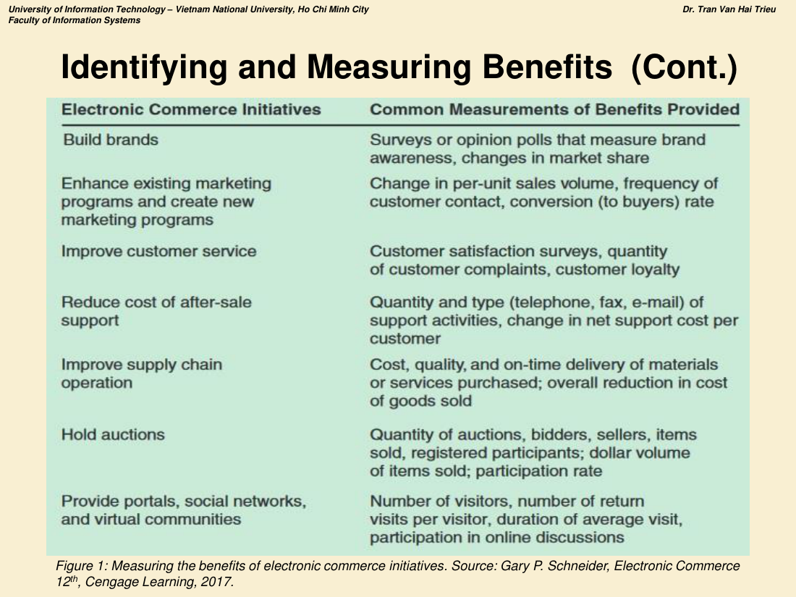
Hình 1 — Measuring the benefits of electronic commerce initiatives (Schneider, Electronic Commerce 12th).
| Sáng kiến TMĐT | Thước đo lợi ích thường dùng |
|---|---|
| Build brands (Xây dựng thương hiệu) | Khảo sát hoặc thăm dò ý kiến đo nhận biết thương hiệu, thay đổi thị phần |
| Enhance existing marketing programs and create new marketing programs (Nâng cao và tạo mới chương trình marketing) | Thay đổi sản lượng bán trên đơn vị, tần suất tiếp xúc khách hàng, tỷ lệ chuyển đổi thành người mua (conversion rate) |
| Improve customer service (Cải thiện dịch vụ khách hàng) | Khảo sát hài lòng khách hàng, số lượng khiếu nại, lòng trung thành của khách hàng |
| Reduce cost of after-sale support (Giảm chi phí hỗ trợ sau bán) | Số lượng và loại hoạt động hỗ trợ (điện thoại, fax, e-mail), thay đổi chi phí hỗ trợ ròng trên mỗi khách hàng |
| Improve supply chain operation (Cải thiện vận hành chuỗi cung ứng) | Chi phí, chất lượng và mức giao hàng đúng hạn của vật tư/dịch vụ mua vào; mức giảm tổng thể trong giá vốn hàng bán (COGS) |
| Hold auctions (Tổ chức đấu giá) | Số lượng phiên đấu giá, số người đặt giá và người bán, số món hàng bán được, số người tham gia đã đăng ký; giá trị bằng tiền của hàng đã bán; tỷ lệ tham gia |
| Provide portals, social networks, and virtual communities | Số khách truy cập, số lượt quay lại trên mỗi khách, thời lượng trung bình mỗi lượt truy cập, mức tham gia thảo luận trực tuyến |
Các thước đo khác: - Nhà quản trị chuỗi cung ứng có thể đo mức giảm chi phí cung ứng, cải thiện chất lượng, hoặc giao hàng nhanh hơn. - Site đấu giá có thể đặt mục tiêu về số phiên đấu giá, số người đặt giá và bán, giá trị bằng tiền các món hàng bán được. - Cộng đồng ảo và cổng web đo số khách truy cập và cố gắng đo chất lượng trải nghiệm của khách.
Ngoài chi phí phần cứng và phần mềm, ngân sách dự án phải bao gồm chi phí tuyển dụng, đào tạo và trả lương cho người thiết kế website, viết hoặc tùy biến phần mềm, tạo nội dung, vận hành và bảo trì site.
Nhiều tổ chức nay theo dõi chi phí theo hoạt động và tính tổng chi phí cho mỗi hoạt động — đó chính là TCO, bao gồm toàn bộ chi phí liên quan tới hoạt động đó.
TCO của một triển khai TMĐT bao gồm:
| Nhóm chi phí | Chi tiết |
|---|---|
| Hardware | Server computers, routers, firewalls, load-balancing devices |
| Software | License cho hệ điều hành, phần mềm web server, phần mềm CSDL, phần mềm ứng dụng |
| Internet connections | Kết nối Internet |
| Design work outsourced | Thiết kế thuê ngoài |
| Salaries and benefits | Lương và phúc lợi cho nhân viên tham gia dự án |
| Maintenance costs | Chi phí duy trì site sau khi vận hành |
Với nhiều công ty, một trong những chi phí lớn nhất và quan trọng nhất liên quan tới sáng kiến TMĐT chính là CƠ HỘI BỊ MẤT DO KHÔNG TRIỂN KHAI sáng kiến đó.
Chi phí vận hành hằng năm của một website kinh doanh trực tuyến thường nằm trong khoảng 50–200% chi phí ban đầu của site.
| Nguồn vốn | Đặc điểm |
|---|---|
| Angel investors (Nhà đầu tư thiên thần) | Cấp vốn khởi nghiệp ban đầu và trở thành cổ đông. Trong nhiều trường hợp, angel investor cuối cùng sở hữu phần lớn hơn cả nhà sáng lập |
| Venture capitalists (Nhà đầu tư mạo hiểm) | Cá nhân rất giàu, nhóm cá nhân giàu, hoặc quỹ đầu tư, đầu tư số tiền lớn với kỳ vọng trong vài năm công ty sẽ đủ lớn để bán cổ phiếu ra công chúng trong một sự kiện gọi là IPO (initial public offering) |
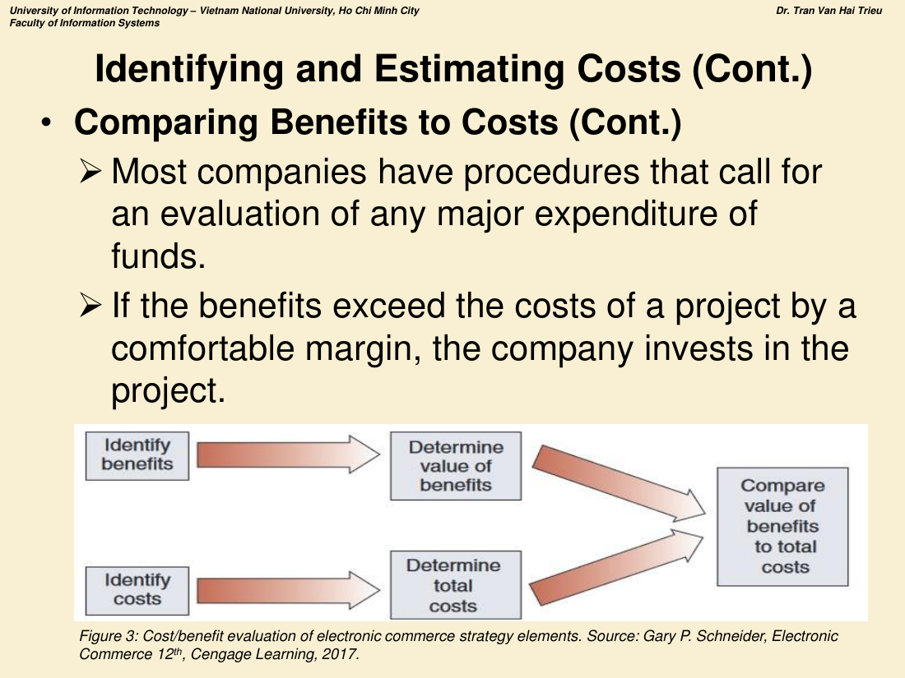
Hình 3 — Cost/benefit evaluation of electronic commerce strategy elements.
Quy trình đánh giá chi phí – lợi ích (5 bước):
[Identify benefits] ──→ [Determine value of benefits] ──┐
├──→ [Compare value of benefits to total costs]
[Identify costs] ──────→ [Determine total costs] ────────┘| Bước | Nội dung |
|---|---|
| 1 | Identify benefits — Xác định lợi ích (kể cả vô hình như sự hài lòng của nhân viên và uy tín công ty) |
| 2 | Identify costs — Xác định chi phí |
| 3 | Determine value of benefits — Định lượng giá trị lợi ích |
| 4 | Determine total costs — Xác định tổng chi phí cần để tạo ra các lợi ích đó |
| 5 | Compare value of benefits to total costs — So sánh và đánh giá xem giá trị lợi ích có vượt tổng chi phí không |
Các kỹ thuật hoạch định vốn (Capital budgeting techniques):
| Kỹ thuật | Tên đầy đủ |
|---|---|
| PBP | Payback method — Phương pháp thời gian hoàn vốn |
| NPV | Net present value method — Phương pháp giá trị hiện tại ròng |
| IRR | Internal rate of return method — Phương pháp tỷ suất hoàn vốn nội bộ |
Ví dụ thực tế — Cisco Systems: - Cisco tạo diễn đàn khách hàng trực tuyến để khách hàng thảo luận vấn đề sản phẩm với nhau. - Lợi ích chính: giảm chi phí dịch vụ khách hàng và tăng sự hài lòng của khách hàng về tính sẵn có của thông tin sản phẩm.
| Mô hình | Cơ chế | Ưu điểm |
|---|---|---|
| Early Outsourcing (Thuê ngoài sớm) | Công ty thuê ngoài việc thiết kế và phát triển site ban đầu để khởi động dự án nhanh. Đội thuê ngoài sau đó đào tạo nhân sự HTTT của công ty về công nghệ mới trước khi bàn giao việc vận hành site cho họ | Vận hành site TMĐT có thể NHANH CHÓNG trở thành lợi thế cạnh tranh cho công ty |
| Late Outsourcing (Thuê ngoài muộn) | Nhân sự HTTT của công ty tự thiết kế và phát triển ban đầu, triển khai và vận hành cho tới khi hệ thống trở thành một phần ổn định của hoạt động kinh doanh. Sau khi đã đạt được lợi thế cạnh tranh, việc bảo trì hệ thống được thuê ngoài | Chuyên gia của công ty được giải phóng để phát triển công nghệ mới nhằm tạo thêm lợi thế cạnh tranh |
| Partial Outsourcing (Thuê ngoài một phần) | Trong hai mô hình trên, MỘT nhóm chịu trách nhiệm cho toàn bộ thiết kế, phát triển và vận hành — trong hoặc ngoài công ty. Mô hình này phù hợp cho nhiều dự án HTTT, nhưng sáng kiến TMĐT cũng có thể hưởng lợi từ thuê ngoài MỘT PHẦN | Ví dụ: nhiều website nhỏ thuê ngoài chức năng xử lý và phản hồi e-mail; một số công ty chuyên cung cấp e-mail auto-response. Một dạng khác là thuê ngoài xử lý thanh toán — nhiều nhà cung cấp sẵn sàng xử lý trọn gói thanh toán của khách hàng |
Incubator là một công ty cung cấp cho các start-up một địa điểm vật lý với văn phòng, hỗ trợ kế toán và pháp lý, máy tính và kết nối Internet với chi phí hằng tháng rất thấp.
Cách tốt nhất để quản lý bất kỳ triển khai TMĐT phức tạp nào là sử dụng các KỸ THUẬT QUẢN TRỊ CHÍNH THỨC (formal management techniques).
Bốn phương pháp doanh nghiệp dùng để quản lý hiệu quả dự án TMĐT: 1. Project management — Quản trị dự án 2. Project portfolio management — Quản trị danh mục dự án 3. Specific staffing — Bố trí nhân sự cụ thể 4. Post-implementation audits — Kiểm toán sau triển khai
Project management là tập hợp các kỹ thuật chính thức để lập kế hoạch và kiểm soát các hoạt động được thực hiện nhằm đạt một mục tiêu cụ thể.
Kế hoạch dự án bao gồm tiêu chí về BA yếu tố: COST (chi phí), SCHEDULE (tiến độ), PERFORMANCE (hiệu năng) — giúp quản lý dự án đưa ra quyết định đánh đổi (trade-off) thông minh giữa ba tiêu chí này.
Ví dụ đánh đổi: Nếu dự án cần hoàn thành sớm hơn, quản lý dự án có thể nén tiến độ bằng cách (a) TĂNG chi phí hoặc (b) GIẢM hiệu năng.
Phần mềm quản trị dự án: - Quản lý dự án dùng project management software (ví dụ Microsoft Project) — cung cấp nhiều công cụ tích hợp để quản lý nguồn lực và tiến độ. - Phần mềm giúp quản lý các tác vụ giao cho tư vấn, đối tác công nghệ, nhà cung cấp dịch vụ thuê ngoài… - Quản lý dự án có thể cập nhật ước tính chi phí và thời gian hoàn thành cho các tác vụ tương lai.
Project portfolio management là kỹ thuật trong đó từng dự án được giám sát (như một khoản mục trong danh mục).
Bất kể đội nội bộ có quyết định thuê ngoài phần nào của thiết kế và triển khai hay không, đội phải xác định nhu cầu nhân sự cho sáng kiến TMĐT.
Các vị trí nhân sự quan trọng nhất:
| # | Vị trí | Trách nhiệm |
|---|---|---|
| 1 | Chief Information Officer (CIO) | Ngoài triển khai dự án CNTT, chịu trách nhiệm giám sát toàn bộ hệ thống thông tin và các yếu tố công nghệ liên quan cần để thực hiện và vận hành hoạt động kinh doanh trực tuyến. Góc nhìn mang tính CHIẾN LƯỢC; thường là người ủng hộ quan trọng cho các sáng kiến kinh doanh trực tuyến. Phải có nhiều năm kinh nghiệm ở vị trí quản lý |
| 2 | Business manager | Phải là thành viên của đội nội bộ đặt ra mục tiêu dự án. Chịu trách nhiệm thực hiện các thành tố của kế hoạch kinh doanh và đạt các mục tiêu do đội nội bộ đặt ra. Phải có kinh nghiệm và kiến thức liên quan tới hoạt động kinh doanh đang được triển khai trên site. (Ví dụ: nếu quản lý một site bán lẻ cho người tiêu dùng thì phải có kinh nghiệm quản lý hoạt động bán lẻ.) |
| 3 | Project manager | Người có đào tạo hoặc kỹ năng cụ thể về theo dõi chi phí và việc hoàn thành các mục tiêu cụ thể trong dự án. Nhiều người được chứng nhận bởi các tổ chức như Project Management Institute (PMI) và có kỹ năng dùng phần mềm quản trị dự án |
| 4 | Project portfolio manager | Thường được thăng tiến từ hàng ngũ project manager; chịu trách nhiệm theo dõi toàn bộ các dự án đang diễn ra và quản lý chúng như một danh mục. Là người thực hiện các đánh đổi về chi phí, tiến độ và chất lượng XUYÊN các dự án và cân bằng nhu cầu của tổ chức với nguồn lực dành cho tất cả các dự án |
| 5 | Applications specialists | Khi ngày càng nhiều nhà cung cấp bán giải pháp phần mềm đóng gói cho TMĐT, công ty cần nhân sự HTTT cài đặt và bảo trì phần mềm. Hầu hết doanh nghiệp lớn có applications specialists bảo trì phần mềm kế toán, nhân sự và logistics. Tương tự, site TMĐT mua phần mềm xử lý catalogue, xử lý thanh toán cần applications specialists bảo trì |
| 6 | Social networking administrator | Chịu trách nhiệm quản lý các yếu tố cộng đồng ảo trong hoạt động Web. Có thể có nền tảng công nghệ, bán hàng, dịch vụ khách hàng, hoặc các ngành rất khác như xã hội học hay nhân học. Phải điều phối mọi công nghệ làm site vận hành như một mạng xã hội theo cách tạo ra giá trị cho tổ chức |
| 7 | Customer service reps / Call center | Call center là công ty xử lý cuộc gọi điện thoại và e-mail đến từ khách hàng thay cho công ty khác. Một số call center làm việc với nhiều doanh nghiệp; số khác chuyên về một lĩnh vực (ví dụ: hợp đồng với nhà sản xuất phần mềm để hỗ trợ cài đặt sản phẩm) |
| 8 | Systems administrator | Chịu trách nhiệm vận hành hệ thống một cách đáng tin cậy và an toàn. Nếu vận hành site được thuê ngoài cho nhà cung cấp dịch vụ thì nhà cung cấp đảm nhiệm chức năng này. Systems administrator nội bộ cần đủ nhân sự để duy trì vận hành 24/7 và bảo mật site |
| 9 | Network operators | Chức năng gồm ước tính và giám sát tải (load estimation and load monitoring), xử lý sự cố mạng, thiết kế và triển khai công nghệ chống lỗi (fault-resistant technologies) |
| 10 | Database administrator | Hầu hết site TMĐT cần chức năng quản trị CSDL để hỗ trợ xử lý giao dịch, nhập đơn hàng, quản lý yêu cầu (inquiry management), logistics giao hàng. Cần CSDL sẵn có để tích hợp hoặc CSDL riêng cho sáng kiến TMĐT. Cần DBA quản lý hiệu quả việc thiết kế và triển khai chức năng này |
Các vị trí khác: Web programmers · Web graphics designers · Content creators · Online marketing managers.
Post-implementation audit (còn gọi post-audit review) là một cuộc rà soát chính thức về một dự án SAU KHI dự án đã hoạt động.
Mục đích: cho nhà quản lý cơ hội xem xét lại các MỤC TIÊU, ĐẶC TẢ HIỆU NĂNG, ƯỚC TÍNH CHI PHÍ và LỊCH GIAO HÀNG đã được thiết lập cho dự án trong giai đoạn lập kế hoạch, rồi SO SÁNH với những gì thực sự đã xảy ra.
Kết quả của audit: một báo cáo toàn diện phân tích: 1. Hiệu quả tổng thể của dự án 2. Dự án được quản trị tốt tới mức nào 3. Cấu trúc tổ chức có phù hợp với dự án không 4. Hiệu quả cụ thể của (các) đội dự án
Vấn đề: - Mọi dự án hệ thống thông tin đều bao hàm THAY ĐỔI, và thay đổi có thể gây xáo trộn cho con người. - Khi thay đổi được đưa vào nơi làm việc, nhân viên lo lắng về khả năng đối phó với thay đổi và khả năng tiếp tục làm việc tốt. - Nhân viên thường lo mất việc làm. Những lo lắng này dẫn tới tăng căng thẳng, gây hại cho tinh thần và hiệu quả công việc.
Chiến lược quản trị thay đổi — TRUYỀN THÔNG về sự cần thiết phải thay đổi:
| # | Chiến lược |
|---|---|
| 1 | Cho phép nhân viên THAM GIA vào quá trình ra quyết định dẫn tới thay đổi |
| 2 | Cho phép nhân viên THAM GIA lập kế hoạch cho thay đổi và các vấn đề khác |
Các biện pháp này giúp nhân viên vượt qua CẢM GIÁC BẤT LỰC (powerlessness) — thứ có thể dẫn tới căng thẳng và giảm hiệu quả công việc.
Nội dung chương (6 phần): 1. Tương lai của E-business 2. Web Analytics: Hiện tại và tương lai của E-business 3. Social Media Analytics cho E-business 4. Trí tuệ nhân tạo (AI) và E-business 5. Ứng dụng Machine Learning trong TMĐT 6. Phân tích cơ hội cho Thương mại di động (M-commerce)
Web analytics là nghệ thuật và khoa học cải thiện website nhằm nâng cao năng suất của chúng bằng cách cải thiện trải nghiệm website của khách hàng.
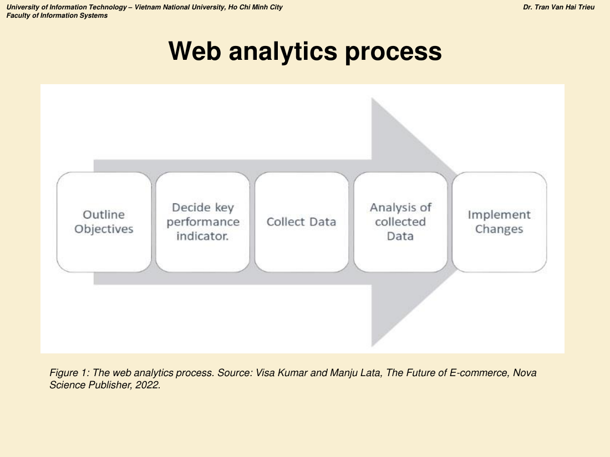
Hình 1 — The web analytics process (Visa Kumar & Manju Lata, The Future of E-commerce, 2022).
| Bước | Tên | Nội dung |
|---|---|---|
| 1 | Outline Objectives | Phác thảo mục tiêu — xác định muốn đạt được gì |
| 2 | Decide key performance indicator | Quyết định chỉ số hiệu quả then chốt (KPI) |
| 3 | Collect Data | Thu thập dữ liệu |
| 4 | Analysis of collected Data | Phân tích dữ liệu đã thu thập |
| 5 | Implement Changes | Triển khai các thay đổi |
📌 Đây là quy trình rất dễ được hỏi dạng “mô tả quy trình web analytics và áp dụng cho một doanh nghiệp cụ thể”.
Tám ứng dụng của Web Analytics trong bán lẻ trực tuyến:
| # | Ứng dụng |
|---|---|
| 1 | Forecasting Demand and Profitability — Dự báo nhu cầu và khả năng sinh lời |
| 2 | Heatmaps — Bản đồ nhiệt |
| 3 | Identify Trends to Drive the Promotion Plan — Xác định xu hướng để dẫn dắt kế hoạch khuyến mãi |
| 4 | Pricing Price Elasticity — Định giá theo độ co giãn giá |
| 5 | Personalisation — Cá nhân hóa |
| 6 | Detection and Prevention of Financial Crimes — Phát hiện và ngăn ngừa tội phạm tài chính |
| 7 | Analytical Prediction — Dự báo phân tích |
| 8 | Innovations in New Products, Markets and Business Models — Đổi mới về sản phẩm, thị trường và mô hình kinh doanh mới |
| Nhóm chỉ số | Các chỉ số cụ thể |
|---|---|
| Visit metrics (Chỉ số lượt truy cập) | Front page (trang chủ), Landing page (trang đích), Exit pages (trang thoát), Click-through rate (tỷ lệ nhấp), Page of exit, The length of time spent by visitors (thời lượng khách ở lại), Visits per visitor (số lượt truy cập/khách), Money spent (số tiền chi tiêu) |
| Conversion metrics (Chỉ số chuyển đổi) | Conversion rate (tỷ lệ chuyển đổi), Average Order Value — AOV (giá trị đơn hàng trung bình), Cost per Acquisition — CPA (chi phí thu hút một khách hàng), Customer Retention Rate (tỷ lệ giữ chân khách hàng) |
Social media analytics sử dụng các công cụ để thu thập dữ liệu từ các tương tác khác nhau trên nền tảng mạng xã hội và chuyển đổi chúng thành thông tin có giá trị.
Các ứng dụng phổ biến nhất của social media analytics: Promotion (khuyến mãi) · After-sales service (dịch vụ sau bán) · Reputation management (quản trị danh tiếng) · Risk handling (xử lý rủi ro) · Supply chain tracking (theo dõi chuỗi cung ứng) · Sales · Decision-making (ra quyết định).
| Chức năng | Nội dung ứng dụng |
|---|---|
| 1. MARKETING | • Doanh nghiệp hưởng lợi từ social media marketing vì nó
giảm chi phí, tăng nhận biết thương hiệu và tăng doanh
thu. • Sử dụng chiến lược social media analytics tác động tích cực tới: hoạt động marketing, tương tác khách hàng (customer engagement), phân tích rủi ro, đánh giá thiết kế sản phẩm/dịch vụ, xếp hạng tín dụng hồ sơ khách hàng, giáo dục khách hàng và phân tích cạnh tranh |
| 2. FINANCE | • Công nghệ mạng xã hội không chỉ cung cấp nền tảng mới cho doanh
nhân đổi mới mà còn mở ra nhiều hướng mới cho chuyên gia TMĐT
khám phá. • Ứng dụng gồm: hiểu biết thị trường chứng khoán theo thời gian thực, phát hiện gian lận, ngăn ngừa rò rỉ thông tin thẻ tín dụng. • Doanh nghiệp tài chính có thể dùng dữ liệu social media analytics để: tạo nguồn doanh thu mới thông qua sản phẩm dựa trên dữ liệu, cung cấp gợi ý cá nhân hóa cho khách hàng, tăng hiệu quả để giành lợi thế cạnh tranh, cải thiện an ninh và dịch vụ khách hàng. • Khách hàng nay dùng mobile banking, internet banking và social media banking để thực hiện giao dịch |
| 3. OPERATIONS | • Mạng xã hội có thể giúp doanh nghiệp cải thiện chuỗi cung
ứng theo nhiều cách. • Người trong chuỗi cung ứng hưởng lợi vì mạng xã hội đã trở thành một trong những công cụ mạnh mẽ và đơn giản nhất để phát triển quan hệ. • Doanh nghiệp có thể dùng social media analytics để xem người khác nhìn nhận dịch vụ của mình thế nào cũng như theo dõi khó khăn của nhà cung cấp (vendor and supplier difficulties) |
Ba công cụ quan trọng được nêu tên: Brand24 · Facebook Ads Manager · Analytic Edge
Bảng 1 — Các công cụ SMA khác:
| Cột 1 | Cột 2 |
|---|---|
| Supermetrics | Keyhole |
| NapoleonCat | Brandwatch |
| TapInfluence | Intellestra |
| Snaplytics | KPMG Spectrum |
| SproutSocial | PeopleSoft |
| HubSpot | Infor Birst |
| BuzzSumo | HaloBI |
📌 Vòng đời khách hàng gồm 3 giai đoạn mà AI can thiệp: ACQUISITION (thu hút) → ENHANCEMENT (nâng cao trải nghiệm) → RETENTION (giữ chân).
Bốn giai đoạn của kiến trúc Google Analytics (Hình 3) — thu thập → xử lý → cấu hình → báo cáo.
Ví dụ: AMAZON ⭐ - Trong Amazon, thuật toán AI được dùng từ lúc khách hàng tìm kiếm một sản phẩm cho tới khi sản phẩm tới cửa nhà khách hàng. - Các thuật toán AI của Amazon dùng để: 1. Gợi ý sản phẩm cho khách hàng (recommend products) 2. Dự báo nhu cầu tương lai của khách hàng (forecast future demands) 3. Cải thiện chất lượng catalogue sản phẩm 4. Phân loại sản phẩm (classify products) 5. Sửa các truy vấn viết sai chính tả (correct misspelled queries) 6. Loại bỏ sản phẩm trùng lặp (eliminate duplicating products)
Sáu ứng dụng AI cho customer retention:
| # | Ứng dụng |
|---|---|
| 1 | Customer engagement — Tương tác khách hàng |
| 2 | Loyalty program design — Thiết kế chương trình khách hàng thân thiết |
| 3 | Personalization — Cá nhân hóa |
| 4 | Reward management — Quản lý phần thưởng |
| 5 | Reporting — Báo cáo |
| 6 | Analytics — Phân tích |
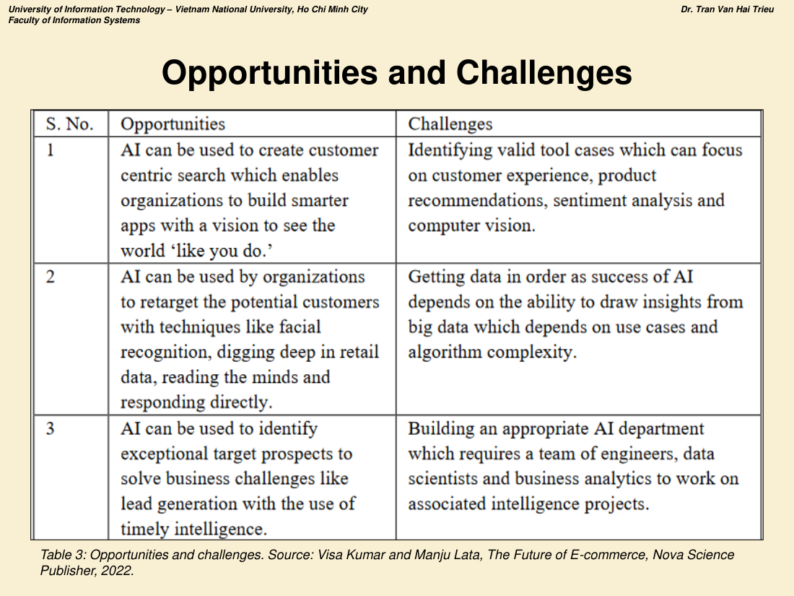
Bảng 3 — Opportunities and challenges (Visa Kumar & Manju Lata, 2022).
| # | OPPORTUNITIES (Cơ hội) | CHALLENGES (Thách thức) |
|---|---|---|
| 1 | AI có thể được dùng để tạo ra tìm kiếm lấy khách hàng làm trung tâm (customer-centric search), cho phép tổ chức xây dựng các ứng dụng thông minh hơn với tầm nhìn “nhìn thế giới giống như bạn nhìn” | Xác định các trường hợp sử dụng công cụ hợp lệ (valid tool cases) có thể tập trung vào trải nghiệm khách hàng, gợi ý sản phẩm, phân tích cảm xúc và thị giác máy tính (computer vision) |
| 2 | AI có thể được tổ chức dùng để retarget (nhắm lại) khách hàng tiềm năng bằng các kỹ thuật như nhận diện khuôn mặt (facial recognition), đào sâu dữ liệu bán lẻ, đọc suy nghĩ và phản hồi trực tiếp | Sắp xếp dữ liệu cho có trật tự — vì thành công của AI phụ thuộc vào khả năng rút ra hiểu biết từ big data, mà điều này lại phụ thuộc vào use case và độ phức tạp của thuật toán |
| 3 | AI có thể được dùng để nhận diện các khách hàng tiềm năng mục tiêu đặc biệt nhằm giải quyết các thách thức kinh doanh như tạo khách hàng tiềm năng (lead generation) bằng thông tin tình báo kịp thời | Xây dựng một bộ phận AI phù hợp — đòi hỏi một đội kỹ sư, nhà khoa học dữ liệu (data scientists) và phân tích kinh doanh (business analytics) để làm việc trên các dự án trí tuệ liên quan |
Sáu ứng dụng machine learning cho gần như mọi khía cạnh vận hành TMĐT:
| # | Ứng dụng |
|---|---|
| 1 | Product Recommendation — Gợi ý sản phẩm |
| 2 | Efficiencies in Operations — Hiệu quả trong vận hành |
| 3 | Chatbots |
| 4 | Inventory Management — Quản lý tồn kho |
| 5 | Trend Analysis — Phân tích xu hướng |
| 6 | Automate Pricing Management — Tự động hóa quản lý giá |
| Loại | Nhóm bài toán | Thuật toán |
|---|---|---|
| 1. SUPERVISED LEARNING (Học có giám sát) |
Classification (Phân loại) | Linear Classifiers; Support Vector Machines (SVM); Decision Trees; K-Nearest Neighbor (KNN); Random Forest |
| Regression (Hồi quy) | Linear Regression; Logistic Regression; Polynomial Regression | |
| 2. UNSUPERVISED LEARNING (Học không giám sát) |
Clustering (Phân cụm) | Exclusive; Overlapping; Hierarchical; Probabilistic |
| Association Rule (Luật kết hợp) | Apriori; Eclat; FP-Growth | |
| Dimensionality reduction (Giảm chiều dữ liệu) | — | |
| 3. REINFORCEMENT LEARNING (Học tăng cường) |
— | — |
| Vai trò | Nội dung |
|---|---|
| Kết quả tìm kiếm tốt hơn | Các tính toán dựa trên AI có thể cung cấp danh sách kết quả toàn diện hơn |
| Hiểu thông tin khách hàng | AI giúp xử lý thông tin khách hàng để các quy trình quảng bá được tùy chỉnh tốt hơn |
| Retargeting | Thuật toán có thể phân tích hành vi khách hàng và gợi ý các quảng cáo retargeting cực kỳ tập trung |
| Phân tích chi phí | Phần mềm có thể nhận diện doanh số TMĐT, chi phí kho bãi, kết quả về phí và các biến số khác |
| Dynamic pricing (Định giá động) | Đã cho thấy là một thành công lớn cho các tổ chức kinh doanh trực tuyến. AI có thể điều chỉnh giá bằng cách xem xét NHIỀU khía cạnh CÙNG LÚC |
| Phát hiện gian lận thẻ | Các kết quả chính xác nhất từ tập dữ liệu giao dịch TMĐT được so sánh bằng kỹ thuật Machine Learning để phát hiện việc sử dụng trái phép dữ liệu thẻ tín dụng (gian lận Mastercard/Visa). Chủ thẻ thường cung cấp số thẻ, ngày hết hạn và mã kiểm tra thẻ qua điện thoại hoặc trên web ⇒ tạo ra rủi ro |
Cây quyết định cho phát hiện gian lận (Decision tree for fraud detection) (Hình 6) — dùng cấu trúc cây phân nhánh theo các thuộc tính giao dịch để phân loại giao dịch là gian lận (fraud) hay hợp lệ (legitimate).
Sentiment analysis thu thập dữ liệu văn bản từ nhiều nguồn khác nhau, xác định các quan điểm và dùng AI để tạo ra kết quả dưới dạng phản hồi TÍCH CỰC, TRUNG TÍNH hoặc TIÊU CỰC đối với một sản phẩm, dịch vụ hoặc thương hiệu.
Dữ liệu phi cấu trúc (Unstructured data) bao gồm: email, nhật ký cuộc gọi (phone logs), tweet, bài blog và tin nhắn Facebook — những thứ không có sẵn trong các CSDL dạng hàng/cột thông thường.
Chín phương pháp tạo gợi ý sản phẩm bằng AI:
| # | Phương pháp |
|---|---|
| 1 | Showcasing popular items by sales number — Trưng bày sản phẩm phổ biến theo số lượng bán |
| 2 | Recommendations based on browsing history — Gợi ý dựa trên lịch sử duyệt web |
| 3 | Recommender systems based on location-based information — Hệ gợi ý dựa trên thông tin vị trí |
| 4 | Content-based filtering — Lọc theo nội dung sản phẩm |
| 5 | User-to-User collaborative filtering — Lọc cộng tác người dùng–người dùng |
| 6 | Recommendations based on ratings — Gợi ý dựa trên đánh giá |
| 7 | Item-to-Item Collaborative Filtering — Lọc cộng tác sản phẩm–sản phẩm |
| 8 | Hybrid e-commerce product suggestion — Gợi ý lai (kết hợp nhiều phương pháp) |
| 9 | Knowledge-based recommender systems — Hệ gợi ý dựa trên tri thức |
Mobile Commerce (M-commerce) là phiên bản mới nhất của thương mại điện tử, trong đó khách hàng dùng các thiết bị di động, cầm tay, không dây để giao tiếp và thực hiện giao dịch qua các mạng công cộng và riêng tư.
| # | Đặc trưng | Ý nghĩa |
|---|---|---|
| 1 | Ubiquity | Tính phổ biến/ở khắp mọi nơi |
| 2 | Multi-way communication | Truyền thông đa chiều |
| 3 | 24x7 Availability | Sẵn sàng 24/7 |
| 4 | Marketing Channels | Kênh marketing |
| 5 | Personalisation | Cá nhân hóa |
| 6 | Mobile Payments | Thanh toán di động |
| # | Kênh |
|---|---|
| 1 | Mobile Website |
| 2 | Mobile Applications (Apps) |
| 3 | Social Media |
| 4 | Search Engine Marketing |
| 5 | Display Marketing |
| 6 | Video Streaming |
| 7 | Short Message Services (SMS) Marketing |
| 8 |
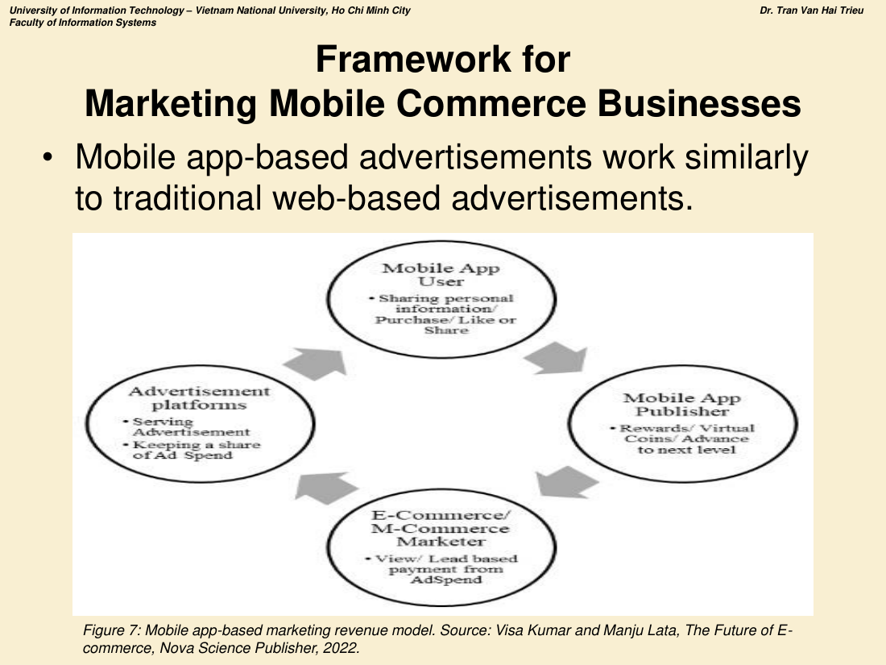
Hình 7 — Mobile app-based marketing revenue model (Visa Kumar & Manju Lata, 2022).
Quảng cáo trên ứng dụng di động hoạt động tương tự quảng cáo trên web truyền thống.
Mô hình doanh thu 4 bên — chạy theo vòng tròn:
| Bên tham gia | Vai trò trong sơ đồ | Chi tiết |
|---|---|---|
| 1. Mobile App User (Người dùng ứng dụng) | Sharing personal information / Purchase / Like or Share | Thái độ của người dùng với quảng cáo luôn là mối quan tâm chính của doanh nghiệp. Giới trẻ dành nhiều thời gian trên ứng dụng di động (ví dụ game) ⇒ cơ hội lớn để tác động tới thái độ của họ với sản phẩm. Người dùng có thể bị ảnh hưởng bởi product placement hoặc thực hiện hành động như chia sẻ thông tin liên hệ (lead generation), đăng ký thuê bao, hoặc mua hàng |
| 2. Mobile App Publisher (Nhà phát hành ứng dụng) | Rewards / Virtual Coins / Advance to next level | Nhà phát hành ứng dụng đóng vai trò quan trọng. Phiên bản đầy đủ của các ứng dụng nội dung giá trị cao thường thu phí (tin tức, nghiên cứu, game). Bản dùng thử có thể miễn phí với mục tiêu duy nhất là quảng cáo. Nhà phát hành có mô hình doanh thu HAI CHIỀU (two-sided revenue model): người dùng trả tiền trực tiếp để cài app và tiêu thụ nội dung, đồng thời nhà phát hành thu thêm doanh thu từ hoạt động marketing của các nhà quảng cáo. Họ đăng ký trên nền tảng quảng cáo (ví dụ Google Ads) để có quảng cáo phù hợp nhất. Họ cũng thu hút người dùng bằng tiền ảo/công nhận xã hội hoặc cho lên cấp tiếp theo khi cài app hoặc thực hiện hành động cụ thể |
| 3. E-Commerce / M-Commerce Marketer (Nhà tiếp thị) | View / Lead based payment from AdSpend | Để chiến dịch thành công, ngoài việc phát triển nội dung hấp dẫn, việc tiếp cận đúng đối tượng mục tiêu cũng rất quan trọng. Nền tảng quảng cáo cung cấp khả năng nhắm mục tiêu tốt hơn cho các nhà tiếp thị. Hoạt động của người dùng (view, click, lead generation…) được tính để thanh toán từ ngân sách marketing của họ |
| 4. Advertisement Platforms (Nền tảng quảng cáo) | Serving Advertisement / Keeping a share of Ad Spend | Nền tảng quảng cáo thu thập quảng cáo từ nhiều nhà quảng cáo và phục vụ chúng tới các nhà phát hành ứng dụng đã đăng ký. Adspend của nhà quảng cáo được nền tảng quản lý để nhắm mục tiêu tốt hơn và có ROI cao hơn. Ngoài ra, nền tảng quảng cáo giữ lại một phần adspend làm doanh thu của mình |
📌 Đây là một sơ đồ “quy trình/mô hình” rất hay để trả lời câu hỏi về mô hình doanh thu của m-commerce.
| # | Thách thức | Ý nghĩa |
|---|---|---|
| 1 | Risk Assurance | Bảo đảm rủi ro (an toàn giao dịch, niềm tin) |
| 2 | Ensuring Utility (Information, Entertainment & Social) | Đảm bảo tính hữu dụng: thông tin, giải trí và xã hội |
| 3 | Utilizing Existing Knowledge | Tận dụng tri thức hiện có |
| 4 | Visual Aesthetics | Thẩm mỹ thị giác |
| 5 | Innovativeness | Tính đổi mới |
| 6 | Accessibility | Khả năng tiếp cận |
| 7 | Using Ads as Reward | Dùng quảng cáo như phần thưởng |
Tương lai E-business: - [ ] 8 chủ đề: công nghệ mới · thay đổi ngành · sản phẩm & dịch vụ · mở rộng thị trường · hành vi người mua · ứng dụng kinh doanh mới · ứng dụng nội bộ · an ninh - [ ] Lợi thế người đi đầu (first-mover) — Amazon, eBay - [ ] Ngành thông tin (ngân hàng, game) có lợi thế: chi phí phân phối thấp, biên lợi nhuận cao
Web Analytics: - [ ] Định nghĩa + quy trình 5 bước ⭐⭐ - [ ] 8 ứng dụng trong bán lẻ trực tuyến - [ ] Visit metrics vs Conversion metrics (kể đủ tên các chỉ số)
Social Media Analytics: - [ ] Định nghĩa + 3 tác vụ (extracting, analyzing, reporting) - [ ] 3 chức năng: Marketing / Finance / Operations ⭐⭐ - [ ] Tên vài công cụ (Brand24, Facebook Ads Manager, Analytic Edge…)
AI: - [ ] Vòng đời khách hàng: Acquisition → Enhancement → Retention ⭐⭐ - [ ] 6 ứng dụng AI của Amazon - [ ] 6 ứng dụng AI cho retention - [ ] Bảng Cơ hội – Thách thức (3 dòng) ⭐
Machine Learning: - [ ] 6 ứng dụng ML trong TMĐT - [ ] Phân loại 3 nhóm thuật toán + các thuật toán cụ thể ⭐⭐ - [ ] Sentiment analysis + dữ liệu phi cấu trúc - [ ] 9 phương pháp gợi ý sản phẩm ⭐
M-commerce: - [ ] Định nghĩa; 6 đặc trưng; 8 kênh - [ ] Mô hình doanh thu 4 bên (User – Publisher – Marketer – Ad Platform) ⭐⭐⭐ - [ ] 7 thách thức
| Hoạt động | Thời gian |
|---|---|
| Đọc đề, chọn thứ tự làm (làm câu chắc nhất trước) | 5 phút |
| Câu 1 | 20 phút |
| Câu 2 | 20 phút |
| Câu 3 | 20 phút |
| Câu 4 | 20 phút |
| Rà soát, bổ sung | 5 phút |
⚠️ Nguyên tắc vàng: KHÔNG để trống câu nào. Một câu trả lời 60% điểm vẫn hơn một câu bỏ trắng. Nếu hết giờ, hãy gạch đầu dòng ý chính — giám khảo vẫn cho điểm ý.
KHUNG 5 PHẦN (dùng được cho gần như mọi câu):
1. ĐỊNH NGHĨA / KHÁI NIỆM (2–4 dòng) — nêu đúng thuật ngữ tiếng Anh trong slide
2. KHUNG LÝ THUYẾT (bảng/sơ đồ) — vẽ lại mô hình của thầy
3. PHÂN TÍCH / MÔ TẢ (thân bài) — đi từng bước, đánh số
4. LIÊN HỆ THỰC TẾ (1 ví dụ) — Việt Nam càng tốt: Shopee, Tiki, Grab, VNPay, Thế Giới Di Động, VNPT, Viettel Post…
5. KẾT LUẬN / KHUYẾN NGHỊ (2–3 dòng)Khi đề yêu cầu cải tiến bất kỳ quy trình kinh doanh nào, hãy quét qua bộ 8 đòn bẩy sau và chọn 4–5 cái phù hợp:
| # | Đòn bẩy | Công nghệ/khái niệm trong môn học |
|---|---|---|
| 1 | Số hóa chứng từ | Bỏ giấy → EDI / extranet / e-form; giảm chi phí xử lý giấy tờ |
| 2 | Tự động hóa phê duyệt | Workflow điện tử, quy tắc phê duyệt theo hạn mức |
| 3 | Tích hợp hệ thống | ERP + EDI, tích hợp CSDL (stage 5 của buy-side stage model) |
| 4 | Chuyển từ PUSH sang PULL | Chia sẻ dữ liệu bán hàng thời gian thực, giảm tồn kho |
| 5 | Tự phục vụ (self-service) | Web self-service, FAQ, chatbot, callback, onsite search — thuộc People trong 7P |
| 6 | Tái cấu trúc trung gian | Disintermediation / Re-intermediation / Counter-mediation |
| 7 | Dữ liệu & phân tích | Web analytics, CRM (data mining), AI/ML: gợi ý, dự báo cầu, dynamic pricing, phát hiện gian lận |
| 8 | Bảo mật & niềm tin | SSL/TLS, PKI, xác thực đa yếu tố, chính sách riêng tư rõ ràng |
LUÔN kết bằng câu của Productivity Paradox: > “Nghiên cứu cho thấy đầu tư CNTT chỉ tương quan mạnh với doanh thu, tài sản và vốn chủ sở hữu nhưng KHÔNG với lợi nhuận ròng; chỉ đầu tư vào nhân sự CNTT và đào tạo mới có tương quan tích cực với thu nhập. Vì vậy doanh nghiệp cần CẢI TIẾN QUY TRÌNH KINH DOANH chứ không chỉ tự động hóa quy trình cũ (Implementing E-procurement — Chương 3).”
Theo kinh nghiệm các khóa trước, đây là nhóm câu hỏi CHẮC CHẮN XUẤT HIỆN. Hãy học thuộc 8 quy trình dưới đây tới mức vẽ lại được.
| # | Quy trình | Chương | Số bước |
|---|---|---|---|
| 1 | Mua hàng trực tuyến qua shopping cart | C3 | 7 |
| 2 | Mua sắm trong tổ chức (procurement) | C3 | 8 |
| 3 | Giao dịch thẻ tín dụng trực tuyến | C3 | 6 |
| 4 | Giao thức SET | C3 | 11 |
| 5 | E-payment (4 giai đoạn) | C3 | 4 |
| 6 | SDLC xây dựng site TMĐT | C3 | 5 |
| 7 | Kế hoạch an ninh TMĐT | C3 | 5 |
| 8 | Quy trình chiến lược E-business | C2 | 4 |
| 9 | SOSTAC — lập kế hoạch e-marketing | C2 | 6 |
| 10 | Web analytics process | C5 | 5 |
Đề: Hãy mô tả quy trình mua hàng trực tuyến sử dụng phần mềm giỏ hàng (shopping cart software). Trên cơ sở đó, đề xuất các giải pháp cải tiến quy trình này để giảm tỷ lệ bỏ giỏ hàng cho một doanh nghiệp bán lẻ trực tuyến tại Việt Nam.
Shopping cart software là một phần mềm TMĐT nằm trên web server, cho phép khách truy cập chọn các mặt hàng trên website để mua trực tuyến, theo dõi các mặt hàng đã chọn và cho phép khách xem lại toàn bộ lựa chọn của mình. Nó còn được gọi là e-commerce software hay e-store software.
[Khách hàng]
│ (1) Order placed by user
▼
[SHOPPING CART] ──(2)──► [Thanh toán thẻ:
│ Credit card is charged]
│ │
│ ▼ (3)
│ [Order is completed
│ — sinh Order Form]
│ │
│ ▼ (4)
│ [Email is sent to
│ Customer AND merchant]
│ │
│ ▼ (5)
│ [Sent to Warehouse
│ for fulfillment]
│ │
│ ▼ (6)
│ [Shipping carrier
│ picks up shipment]
│ │
└──────(7) Shipment sent to Customer ◄──────┘| Bước | Tên bước | Nội dung |
|---|---|---|
| 1 | Order placed by user | Khách hàng duyệt catalogue, chọn sản phẩm và đưa vào giỏ hàng. Khách có thể thêm mặt hàng mới, xóa mặt hàng đã chọn, và lưu danh sách hàng cần mua |
| 2 | Credit card is charged | Khi checkout, phần mềm tính tổng đơn hàng bao gồm phí vận chuyển & xử lý (shipping and handling) và các khoản thuế liên quan; thu thập thông tin thanh toán và ghi nợ thẻ tín dụng |
| 3 | Order is completed | Hệ thống sinh Order Form, ghi dữ liệu đơn hàng vào CSDL (sản phẩm, danh mục, chiết khấu, đơn hàng, khách hàng — truy cập thời gian thực) |
| 4 | Email is sent to Customer and merchant | Gửi email xác nhận đồng thời cho cả khách hàng và người bán |
| 5 | Sent to Warehouse for fulfillment | Đơn hàng chuyển tới kho để soạn hàng, đóng gói |
| 6 | Shipping carrier picks up shipment | Đơn vị vận chuyển tới nhận hàng |
| 7 | Shipment sent to Customer | Hàng được giao tới khách hàng, khép kín vòng quy trình |
| Nguyên nhân | Tỷ lệ |
|---|---|
| Chi phí phát sinh bất ngờ (phí ship, thuế) | 48% |
| Bắt buộc tạo tài khoản | 24% |
| Lo ngại bảo mật thanh toán | 18% |
| Quy trình thanh toán phức tạp/dài dòng | 17% |
| # | Vấn đề của quy trình hiện tại | Giải pháp cải tiến | Căn cứ lý thuyết | KPI đo lường |
|---|---|---|---|---|
| 1 | Phí ship/thuế chỉ hiện ở bước cuối (bước 2) ⇒ 48% bỏ giỏ | Hiển thị phí vận chuyển và thuế NGAY TỪ trang sản phẩm/giỏ hàng; thêm công cụ ước tính phí ship theo mã bưu chính | “Displaying shipping costs early in the process can significantly lower drop-offs” | Giảm tỷ lệ bỏ giỏ ≥10 điểm % trong 6 tháng |
| 2 | Bắt buộc đăng ký tài khoản (24% bỏ giỏ) | Bật GUEST CHECKOUT; cho đăng ký sau khi mua xong | “Offering guest checkout can reduce abandonment by up to 35%” | Giảm 35% tỷ lệ bỏ giỏ ở nhóm khách mới |
| 3 | Checkout dài dòng (17%) | Rút gọn còn 1–2 bước; tự điền địa chỉ; lưu thông tin thẻ đã mã hóa (tokenization); one-click purchasing | 8 yếu tố thiết kế site thành công: Ease of purchase — “One or two clicks to purchase” | Số bước checkout ≤2; thời gian checkout <90 giây |
| 4 | Lo ngại bảo mật (18%) | SSL/TLS, hiển thị con dấu bảo mật, xác thực đa yếu tố (multi-factor authentication), công bố privacy policy rõ ràng | 6 chiều an ninh TMĐT: Confidentiality, Authenticity, Integrity; giải pháp Securing channels of communication | Tỷ lệ giao dịch thất bại do bảo mật; điểm khảo sát niềm tin |
| 5 | Trải nghiệm mobile kém (85% bỏ giỏ) | Áp dụng Mobile first design và Responsive Web Design (RWD); tích hợp e-wallet (Momo, ZaloPay, VNPay) và thanh toán một chạm | 4 đặc điểm riêng của nền tảng di động: hardware, connectivity, displays, interface — “mobile is not a good data entry tool” | Tỷ lệ hoàn tất đơn trên mobile |
| 6 | Không có cách kéo khách quay lại | Cart abandonment email/notification tự động; hệ khuyến nghị (recommendation system) | ~30% người tiêu dùng sẵn sàng trả nhiều hơn cho sản phẩm được gợi ý (khảo sát PwC); AI recommendation tăng AOV 15–25% | Recovery rate của email nhắc giỏ hàng |
| 7 | Không biết khách rơi ở đâu | Triển khai Web analytics (5 bước: Outline Objectives → KPI → Collect Data → Analysis → Implement Changes), dùng heatmap và funnel analysis | Chương 5 — Web analytics process | Exit page, click-through rate, conversion rate |
| 8 | Không nhìn thấy tồn kho/giao hàng | Tích hợp supply chain visibility software và warehouse automation (IoT, RPA, cobots) để rút ngắn bước 5–7 | Applied technologies in online shopping | Thời gian từ đặt hàng tới giao hàng |
Quy trình mua hàng qua shopping cart gồm 7 bước từ đặt hàng tới giao hàng. Điểm nghẽn lớn nhất nằm ở bước 2 (thanh toán) — nơi 69,8% khách hàng rời bỏ. Cải tiến phải tập trung vào minh bạch chi phí sớm, guest checkout, rút gọn checkout, bảo đảm an toàn và tối ưu mobile, đồng thời dùng web analytics để đo lường liên tục. Cần nhấn mạnh: theo nghịch lý năng suất (productivity paradox), doanh nghiệp phải CẢI TIẾN QUY TRÌNH chứ không chỉ đầu tư công nghệ.
Đề: Hãy mô tả các hoạt động mua sắm chính trong một tổ chức. Đề xuất giải pháp e-procurement để cải tiến quy trình này và phân tích các rủi ro khi triển khai.
Mua hàng phải: (1) đúng giá — at the right price; (2) giao đúng thời điểm — delivered at the right time; (3) đúng chất lượng — of the right quality; (4) đúng số lượng — of the right quantity; (5) từ đúng nguồn — from the right source.
┌──────────────── PROCURING ORGANIZATION ─────────────────┐
│ │
│ [ORIGINATOR] ──(1) Requisition──► [APPROVER] │
│ │(2) phê duyệt │
│ ▼ │
│ [BUYER] │
│ │ │ │
│ (6) PO copy ──────┘ │ │
│ ▼ │ │
│ [ACCOUNTANT] │ │
│ │(7) đối chiếu │ │
│ ▼ │ │
│ [Payment order] │ │
│ │ │
│ [WAREHOUSE] ◄──(5) nhận hàng ──────────────┼───────┐ │
└──────────────────────────────────────────────┼───────┼───┘
│(3) PO │
┌──────────┐ ◄────────────────────────────────┘ │
│ SUPPLIER │ ──(4) Invoice and delivery note──────────┘
└──────────┘ ◄──(8) Payment────────| Bước | Chủ thể | Hoạt động / Chứng từ |
|---|---|---|
| 1 | Originator | Lập Requisition (đề nghị mua hàng), gửi Approver |
| 2 | Approver | Phê duyệt đề nghị, chuyển cho Buyer |
| 3 | Buyer | Phát hành Purchase Order (PO) gửi tới Supplier |
| 4 | Supplier | Giao hàng kèm Invoice and delivery note |
| 5 | Warehouse | Nhận và nhập kho |
| 6 | Buyer → Accountant | Gửi Purchase order copy cho Kế toán |
| 7 | Accountant | Đối chiếu 3 chứng từ (PO – delivery note – invoice) và lập lệnh thanh toán |
| 8 | — | Payment được chuyển tới Supplier |
| # | Vấn đề | Hệ quả |
|---|---|---|
| 1 | Chứng từ giấy đi qua nhiều khâu | Chu kỳ dài, chi phí xử lý giấy tờ cao |
| 2 | Phê duyệt thủ công, mất dấu | Không kiểm soát được tiến độ, dễ thất lạc |
| 3 | Không có catalogue tập trung | Mỗi người mua một giá; không tận dụng được sức mua |
| 4 | Maverick purchases | Nhân viên mua ngoài hệ thống, không tuân thủ quy trình ⇒ mất chiết khấu, khó kiểm soát ngân sách |
| 5 | Đối chiếu 3 chiều thủ công | Sai sót, thanh toán chậm/trùng |
| 6 | Không tích hợp tồn kho | Mua thừa hoặc thiếu |
| Khâu | Cải tiến cụ thể | Công nghệ | Lợi ích/KPI |
|---|---|---|---|
| Requisition (1) | E-requisition trên portal/intranet, chọn hàng từ catalogue điện tử của nhà cung cấp đã được duyệt giá | Extranet, e-catalogue | Chuẩn hóa 100% yêu cầu mua; loại bỏ maverick purchasing |
| Authorization (2) | Workflow phê duyệt điện tử theo hạn mức, tự động chuyển cấp, có cảnh báo quá hạn | Workflow engine trong ERP | Giảm thời gian phê duyệt 50–70% |
| Ordering (3) | PO điện tử gửi tự động qua EDI (Internet EDI hoặc VAN) tới nhà cung cấp | ERP + EDI (Hình 24) | Giảm chi phí phát hành PO; giảm sai sót nhập liệu |
| Delivery (4–5) | Advance shipping notice (ASN) điện tử; quét mã vạch/RFID khi nhập kho; tích hợp warehouse management | IoT, warehouse automation, cobots | Giảm thời gian nhập kho; tồn kho chính xác |
| Payment (6–8) | Tự động đối chiếu 3 chiều (3-way matching) giữa PO – phiếu giao hàng – hóa đơn; thanh toán điện tử | ERP tích hợp tài chính | Giảm chi phí xử lý giấy tờ; rút ngắn chu kỳ thanh toán |
| Chọn mô hình | Chọn mô hình e-procurement phù hợp: (a) One-to-many (sell-side @ supplier site); (b) Many-to-one (buy-side @ buyer site) — phù hợp DN lớn; (c) Many-to-many (neutral exchange qua trung gian) — phù hợp DN vừa và nhỏ | Hình 23 | Giảm giá mua nhờ reverse aggregation (gộp sức mua) |
| Nguồn hàng | Phân biệt systematic sourcing (quan hệ dài hạn, hàng production-related) và spot sourcing (nhu cầu tức thời); tham gia online marketplace để giảm chi phí | Types of procurement | Giảm chi phí mua 5% năm 1, 10% năm 2 (theo bảng KPI mẫu C2) |
| Loại rủi ro | Nội dung | Cách giảm thiểu |
|---|---|---|
| Tỷ lệ áp dụng thấp | Nhân viên và nhà cung cấp không dùng hệ thống | Truyền thông, khuyến khích, bắt buộc dần |
| Rủi ro tổ chức | Displace employees (dịch chuyển/thay thế nhân viên) và Maverick purchases | Change management: cho nhân viên tham gia vào quá trình ra quyết định và lập kế hoạch để giảm cảm giác bất lực (C4) |
| Không đạt giảm chi phí thực | Failure to achieve real cost reductions | Đặt KPI SMART và đo bằng ROI (PBP/NPV/IRR) |
| Rủi ro công nghệ | Công nghệ và mô hình mới liên tục xuất hiện, khó quyết định chọn cái nào | Chọn giải pháp tuân thủ chuẩn, có khả năng tích hợp và mở rộng |
Đề: Trình bày khái niệm quản trị chuỗi cung ứng và các thành viên của chuỗi cung ứng. So sánh hai cách tiếp cận push và pull. Hãy đề xuất lộ trình giúp một doanh nghiệp sản xuất Việt Nam chuyển từ mô hình push sang pull.
Supply chain management (SCM): việc điều phối tất cả các hoạt động cung ứng của một tổ chức, từ nhà cung cấp và đối tác tới khách hàng của tổ chức.
| Định nghĩa | Tương đương | |
|---|---|---|
| Upstream supply chain | Giao dịch giữa tổ chức với nhà cung cấp và trung gian | Buy-side e-commerce |
| Downstream supply chain | Giao dịch giữa tổ chức với khách hàng và trung gian | Sell-side e-commerce |
(a) Dạng đơn giản:
[Supplier] ──► [Organization] ──► [Customer]
└── Upstream (Buy-side) ──┘└── Downstream (Sell-side) ──┘
(b) Có trung gian:
[Supplier] ─► [Intermediaries] ─► [Organization] ─► [Intermediaries] ─► [Customer]
└──── Inbound logistics ────┘ └──── Outbound logistics ────┘Chuỗi cung ứng điển hình (ví dụ The B2B Company — Hình 18): - Upstream: Suppliers → Supplier warehouse → Independent wholesaler → B2B retailer/exchange → Distributor → Manufacturer; có đường tắt qua Supplier agent hoặc đi thẳng. - Downstream: Manufacturer → B2B Company warehouse → Independent wholesaler → B2B retailer/exchange → Distributor → Customers; có đường tắt qua B2B Company agent hoặc đi thẳng tới Customers. - Ý nghĩa các đường tắt: chính là cơ hội disintermediation — dùng Internet để giao dịch trực tiếp, bỏ bớt trung gian.
| Tiêu chí | (a) PUSH — “Push to customer” | (b) PULL — “Pull from customer” |
|---|---|---|
| Hướng dòng chảy | Supplier → Manufacturer → Distributor → Retailer → Customer | Customer → Retailer → Distributor → Manufacturer → Supplier |
| Typical aim | Tối ưu quy trình sản xuất về chi phí và hiệu quả | Nâng cao chất lượng sản phẩm và dịch vụ |
| Typical characteristics | • Phát triển sản phẩm mới do nhà sản xuất dẫn
dắt • Tích hợp dữ liệu kém do sử dụng công nghệ hạn chế • Chu kỳ và thời gian đáp ứng DÀI • Tồn kho CAO |
• Do nghiên cứu thị trường dẫn dắt • Công nghệ được dùng để tích hợp nghiên cứu và dữ liệu • Chu kỳ và thời gian đáp ứng NGẮN • Tồn kho THẤP |
| Use of IS | Quản lý dữ liệu độc lập bởi từng thành viên; dùng EDI hạn chế | Hệ thống nội bộ tích hợp, chia sẻ thông tin giữa các thành viên; dùng EDI và e-commerce rộng rãi, thường qua sàn B2B và trung gian |
| Mô hình chuỗi giá trị tương ứng | Traditional value chain: Inbound logistics → Production → Outbound logistics → Sales & marketing | Revised value chain (Deise et al., 2000): Market research → New product development → Market products → Procure materials → Procure products → Manage selling and fulfilment |
📌 Điểm khác biệt cốt lõi: mô hình truyền thống bắt đầu từ nguyên vật liệu; mô hình sửa đổi bắt đầu từ NGHIÊN CỨU THỊ TRƯỜNG — tức là đặt khách hàng ở đầu chuỗi.
| Giai đoạn | Hành động | Công nghệ / HTTT | KPI |
|---|---|---|---|
| Stage 1 — Review suppliers | Rà soát, đánh giá và phân loại nhà cung cấp | Cơ sở dữ liệu nhà cung cấp, benchmarking | Số nhà cung cấp đạt chuẩn |
| Stage 2 — Stock availability | Công khai tình trạng tồn kho cho các bên trong chuỗi | Extranet, cổng thông tin nhà cung cấp | Độ chính xác dữ liệu tồn kho |
| Stage 3 — Online catalogues | Xây dựng catalogue điện tử chuẩn hóa | E-catalogue | % giao dịch qua catalogue |
| Stage 4 — Online ordering | Đặt hàng trực tuyến với nhà cung cấp và nhận đơn trực tuyến từ khách | E-procurement + e-commerce | % đơn hàng điện tử |
| Stage 5 — Integrate databases | Tích hợp CSDL giữa các mắt xích — đây là bước then chốt của PULL | ERP database (operational) + Data warehouse (tactical); EDI qua Internet EDI/VAN | Thời gian đồng bộ dữ liệu |
| Stage 6 — Supply chain optimization | Tối ưu hóa toàn chuỗi: demand planning, supply planning, MRP, network optimization ở phía planning; procurement, manufacturing, warehouse management, order processing, distribution ở phía execution; forecasting, monitoring, alerts qua intranet và extranet | IS infrastructure for SCM (Hình 21) | Cycle time, chi phí/đơn hàng, mức tồn kho, tỷ lệ giao đúng hạn |
| Lợi ích | Kết quả cụ thể |
|---|---|
| Tăng hiệu quả từng quy trình | Giảm cycle time và chi phí trên mỗi đơn hàng |
| Giảm độ phức tạp chuỗi cung ứng | Giảm chi phí phân phối và bán qua kênh |
| Cải thiện tích hợp dữ liệu | Giảm chi phí xử lý giấy tờ |
| Giảm chi phí nhờ outsourcing | Chi phí thấp hơn nhờ cạnh tranh giá |
| Đổi mới | Đáp ứng khách hàng tốt hơn |
Chuyển từ push sang pull không phải là dự án công nghệ mà là dự án TÁI THIẾT KẾ QUY TRÌNH: thay đổi điểm khởi đầu của chuỗi giá trị từ “sản xuất” sang “nghiên cứu thị trường”, và thay quản lý dữ liệu độc lập bằng hệ thống tích hợp chia sẻ thông tin. Thách thức lớn nhất vẫn là change management và quản trị quan hệ nhà cung cấp.
Đề: Mô tả quy trình một giao dịch thẻ tín dụng trực tuyến. Trình bày giao thức SET và cho biết ưu, nhược điểm của nó so với SSL.
Consumer · Merchant · Clearinghouse · Consumer’s card-issuing bank · Merchant bank.
(1) Consumer makes purchase
│
│ (2) SSL/TLS provides secure connection through Internet
▼
[MERCHANT] ──(3) Merchant software contacts clearinghouse (secure line)──►
[CLEARINGHOUSE]
│ (4) verifies account and balance
▼
[CONSUMER'S CARD-ISSUING BANK]
│ (5) credits merchant account
▼
[MERCHANT BANK]
▲
└──(6) Monthly statement issued with debit for purchase──► CONSUMER| Bước | Nội dung |
|---|---|
| 1 | Consumer makes purchase — Khách hàng mua hàng trên website |
| 2 | SSL/TLS provides secure connection qua Internet tới máy chủ người bán |
| 3 | Merchant software contacts clearinghouse qua đường truyền an toàn (secure line) |
| 4 | Clearinghouse verifies account and balance with issuing bank — xác minh tài khoản và số dư |
| 5 | Issuing bank credits merchant account — ghi có vào tài khoản người bán (qua merchant bank) |
| 6 | Monthly statement issued with debit for purchase — sao kê tháng ghi nợ khoản mua cho khách |
Security, merchant risk · Cost · Social equity (không phải ai cũng có thẻ).
Định nghĩa: SET là giao thức cho thanh toán bằng thẻ tín dụng điện tử, dùng để truyền thông tin thẻ tín dụng của người tiêu dùng một cách an toàn qua các kênh điện tử như Internet. SET che giấu chi tiết thông tin thẻ, ngăn người bán, hacker và kẻ trộm điện tử truy cập thông tin này.
5 đặc tính: Confidentiality of information · Integrity of data · Cardholder account authentication · Merchant authentication · Participants.
6 bên tham gia: Card holder · Merchant · Issuer · Acquirer · Payment gateway · Certification authority.
Trình tự 11 bước (tóm tắt để viết bài):
| Ưu điểm | Nhược điểm |
|---|---|
| Đủ an toàn để bảo vệ số thẻ và thông tin cá nhân khỏi tấn công | Người dùng phải có thẻ tín dụng |
| Độc lập phần cứng | Không hiệu quả chi phí khi giá trị thanh toán nhỏ |
| Được dùng toàn cầu | Không ẩn danh, có thể truy vết (traceable) |
| Cung cấp confidentiality of information | Network effect — cần cài phần mềm client (e-wallet) |
| Cung cấp integrity of data | Chi phí và độ phức tạp cho người bán để hỗ trợ, so với giải pháp dựa trên SSL rẻ và đơn giản hơn |
| Cung cấp cardholder account authentication | |
| Cung cấp merchant authentication |
Kết luận so sánh: SET an toàn hơn SSL vì che giấu thông tin thẻ kể cả với người bán và xác thực cả hai phía, nhưng thất bại về mặt thương mại do chi phí, độ phức tạp và yêu cầu cài e-wallet — trong khi SSL/TLS rẻ, đơn giản và “đủ tốt”. Đây là ví dụ điển hình cho bài học: an ninh luôn đánh đổi với ease of use (“the more security measures added, the more difficult a site is to use, and the slower it becomes”).
Đề: Trình bày các thực thể và bốn giai đoạn của một hệ thống thanh toán điện tử. Phân loại các hệ thống thanh toán theo thời điểm thanh toán.
| Thực thể | Vai trò |
|---|---|
| Payer | Người trả tiền — người mua/khách hàng |
| Payee | Người nhận tiền — người bán/thương nhân |
| Financial institution | Tổ chức tài chính: Issuer (ngân hàng phát hành, phía Payer) và Acquirer (ngân hàng thanh toán, phía Payee) |
Năm luồng: Invoice (Payee→Payer) · Payment (Payer→Payee) · E-checkbook Issuance (Issuer↔︎Payer) · Deposit (Payee↔︎Acquirer) · Inter-bank Transactions (Issuer↔︎Acquirer).
Mục đích chính của giao thức thanh toán điện tử: chuyển giá trị tiền tệ từ Payer sang Payee.
| Giai đoạn | Nội dung |
|---|---|
| 1. Registration | Payer đăng ký với Issuer và Payee đăng ký với Acquirer, tạo liên kết giữa danh tính và tài khoản ngân hàng |
| 2. Invoicing | Payer nhận hóa đơn từ Payee — bằng cách duyệt và chọn sản phẩm trên website người bán, hoặc nhận hóa đơn điện tử qua phương tiện khác như e-mail |
| 3. Payment selection and processing | Payer chọn loại thanh toán (thẻ, E-cash, E-cheque…) dựa trên loại mà Payee chấp nhận, rồi gửi thông tin thanh toán và số tiền theo hóa đơn cho Payee |
| 4. Payment authorization and confirmation | Acquirer nhận thông tin từ Payee, ủy quyền thanh toán, phát hành biên nhận thành công/thất bại cho Payee; Payee có thể phát hành biên nhận cho Payer |
| Hệ thống | Cơ chế | Ví dụ thực tế |
|---|---|---|
| Pre-paid | Tài khoản Payer bị ghi nợ TRƯỚC khi giao dịch được xử lý | Thẻ trả trước, ví điện tử nạp tiền (Momo, ZaloPay) |
| Pay-now | Khi giao dịch được xử lý: Payer bị ghi nợ, Payee được ghi có | Thẻ ghi nợ (debit card), chuyển khoản trực tuyến |
| Post-pay | Payer chỉ bị ghi nợ khi Payee yêu cầu quyết toán với Acquirer | Thẻ tín dụng (credit card) |
Đề: Trình bày vòng đời phát triển hệ thống (SDLC) cho việc xây dựng một site TMĐT. Với một doanh nghiệp bán lẻ muốn xây dựng website bán hàng, hãy xác định mục tiêu kinh doanh, chức năng hệ thống và yêu cầu thông tin tương ứng.
SDLC là phương pháp luận để hiểu mục tiêu kinh doanh của một hệ thống và thiết kế giải pháp phù hợp.
[1. Systems Analysis/Planning] → [2. Systems Design] → [3. Building the System]
→ [4. Testing] → [5. Implementation / Service Delivery]Best Practices kèm theo: Continuous availability 99%+ · Design for scalability · Build in management for end-to-end delivery · Plan for growth · Design system for high-speed performance · Understand and optimize workload on system.
| Business Objective | System Functionality | Information Requirements |
|---|---|---|
| Display goods | Digital Catalog | Catalogue văn bản và đồ họa động |
| Provide product information | Product database | Mô tả sản phẩm, mã hàng, mức tồn kho |
| Personalize/customize product | Customer on-site tracking | Site log mỗi lượt khách; khả năng data mining nhận diện đường đi phổ biến và phản ứng phù hợp |
| Engage customers in conversations | On-site blog; user forums | Phần mềm có chức năng blog và diễn đàn |
| Execute a transaction | Shopping cart / payment system | Xử lý thẻ tín dụng an toàn; nhiều lựa chọn thanh toán |
| Accumulate customer information | Customer database | Tên, địa chỉ, điện thoại, email; đăng ký khách hàng trực tuyến |
| Provide after-sale customer support | Sales database | Customer ID, sản phẩm, ngày, thanh toán, ngày giao hàng |
| Coordinate marketing/advertising | Ad server, e-mail server, campaign manager, ad banner manager | Log hành vi khách tiềm năng & khách hàng, liên kết với chiến dịch email và banner |
| Understand marketing effectiveness | Site tracking and reporting system | Số khách duy nhất, số trang xem, sản phẩm mua, phân theo chiến dịch |
| Provide production and supplier links | Inventory management system | Mức sản phẩm & tồn kho, ID và liên hệ nhà cung cấp, số lượng đặt theo sản phẩm |
Logical design (DFD của website đơn giản):
[Website customer] ──HTTP request──► [Verify login] ◄──Customer information──► [Customer DB]
│ Accept/reject visitor
▼
[Display catalog pages] ◄──► [Catalog DB]
▲│
│▼
[Purchase products] ◄──► [Order DB]
│ Fulfill order
▼
[Website customer] ◄──Order shipped confirmed── [Ship products]Physical design: xác định thành phần vật lý, phần mềm, model thực tế.
Kiến trúc: Two-tier (web server + database server) vs Multi-tier (Web Server Layer → Middle-tier Layer: e-commerce/application/database/ad/mail servers → Backend Layer: corporate applications, finance, production MRP, enterprise systems, HR).
| Build: In-house | Build: Outsource | |
|---|---|---|
| Host: In-house | COMPLETELY IN-HOUSE | MIXED RESPONSIBILITY |
| Host: Outsource | MIXED RESPONSIBILITY | COMPLETELY OUTSOURCED |
Ba mô hình thuê ngoài theo thời điểm: Early outsourcing (khởi động nhanh, chuyển giao sau) · Late outsourcing (tự làm trước, thuê ngoài bảo trì sau) · Partial outsourcing (thuê ngoài từng phần: xử lý email, xử lý thanh toán).
Unit testing · System testing · Acceptance testing · A/B testing (split testing) · Multivariate testing.
Functionality · Informational · Ease of use · Redundant navigation · Ease of purchase · Multi-browser functionality · Simple graphics · Legible text.
Đề: Nêu sáu chiều an ninh TMĐT. Vẽ và giải thích quy trình xây dựng kế hoạch an ninh cho một site TMĐT. Chỉ ra các điểm dễ bị tấn công trong một giao dịch TMĐT và biện pháp phòng ngừa tương ứng.
| Chiều | Góc nhìn khách hàng | Góc nhìn người bán |
|---|---|---|
| Integrity | Thông tin tôi gửi/nhận có bị thay đổi không? | Dữ liệu trên site có bị thay đổi trái phép? Dữ liệu nhận từ khách có hợp lệ? |
| Nonrepudiation | Bên kia có thể chối bỏ hành động sau này không? | Khách hàng có thể phủ nhận đã đặt hàng không? |
| Authenticity | Tôi đang giao dịch với ai? Làm sao chắc chắn họ đúng là họ? | Danh tính thật của khách hàng là gì? |
| Confidentiality | Ngoài người nhận dự kiến, ai khác đọc được tin nhắn của tôi? | Tin nhắn/dữ liệu mật có bị người không được phép truy cập? |
| Privacy | Tôi có kiểm soát được việc sử dụng thông tin về mình không? | Dữ liệu cá nhân thu thập được dùng thế nào? Có bị dùng trái phép? |
| Availability | Tôi có truy cập được site không? | Site có đang hoạt động không? |
Lưu ý quan trọng: Mã hóa (encryption) chỉ cung cấp 4/6 chiều — Integrity, Nonrepudiation, Authentication, Confidentiality. KHÔNG cung cấp Privacy và Availability.
Client · Server · Communications pipeline (kênh truyền Internet).
[Customer credit card bank] ◄── Security breach ──► [Merchant bank]
↑ DOS attack, Card theft, Hacked ↑
│ │
│ ┌──── MERCHANT WEBSITE ────┐ │
[ISP] ◄──► │ [Online store] ◄─► [DB] │ ◄─┘ ──► [Warehouse]
↑ │ ↑Customer list hack ↑SQL injection │ │
│ └──────────────────────────┘ │
│ Wi-Fi listening / Wire tap ▼
[Online consumer] ◄──────────────────────────── [Shipping]
↑ Web beacons| Vị trí | Mối đe dọa | Biện pháp phòng ngừa |
|---|---|---|
| Giữa consumer và ISP | Wi-Fi listening, Wire tap (sniffing, MITM) | SSL/TLS, VPN, WPA2/WPA3 |
| Tại Online consumer | Web beacons, malware, phishing | Anti-virus, spyware/ad blockers, cookie managers, đào tạo nhận biết phishing |
| Tại Online store | Customer list hack | Firewall, IDS/IPS, proxy server, kiểm soát truy cập, mã hóa dữ liệu lưu trữ |
| Tại Database server | SQL injection | Vá lỗi (patches), kiểm tra đầu vào, rà soát mã, security audit |
| Giữa hai ngân hàng | Security breach | Mã hóa khóa công khai, digital certificate, PKI |
| Tại Customer credit card bank | DOS attack, Card theft, Hacked | Chống DDoS, multi-factor authentication, e-signature, fingerprint |
| Toàn hệ thống | Insider attacks — người bên trong có khả năng là nguồn tấn công cao hơn người ngoài | Chính sách quản trị, phân quyền, security audit định kỳ |
(1) Perform a risk assessment
↓
(2) Develop a security policy
↓
(3) Develop an implementation plan
↓
(4) Create a security organization
↓
(5) Perform a security audit ──► quay lại (1)| Bước | Nội dung chi tiết |
|---|---|
| 1. Risk assessment | Đánh giá rủi ro — xác định tài sản, mối đe dọa, xác suất và mức thiệt hại |
| 2. Security policy | Xây dựng chính sách an ninh — tuyên bố rủi ro ưu tiên và mức chấp nhận được |
| 3. Implementation plan | Gồm Security organization, Access controls, Authentication procedures (kể cả biometrics), Authorization policies & authorization management systems |
| 4. Security organization | Thành lập bộ phận an ninh, đào tạo, thiết lập công cụ kiểm soát truy cập |
| 5. Security audit | Kiểm toán an ninh — rà soát định kỳ nhật ký truy cập và đánh giá lại |
(1) Công nghệ · (2) Chính sách quản trị hiệu quả · (3) Luật công và thực thi tích cực — toàn cầu doanh nghiệp chi hơn 86 tỷ USD cho bảo mật.
“Càng thêm biện pháp bảo mật thì site càng khó dùng và càng chậm” — cần cân bằng giữa cost of security và potential loss, cũng như time value of money.
Đề: Trình bày khái niệm và mục tiêu của CRM. Mô tả các thành phần và luồng xử lý của một hệ thống CRM điển hình. Đề xuất cách sử dụng CRM để cải thiện tỷ lệ giữ chân khách hàng.
Technology-enabled relationship management xảy ra khi doanh nghiệp thu được thông tin chi tiết về hành vi, sở thích, nhu cầu và mô hình mua hàng của một khách hàng, rồi dùng thông tin đó để định giá, thương lượng điều khoản, điều chỉnh khuyến mãi, bổ sung tính năng sản phẩm và tùy biến toàn bộ quan hệ với khách hàng đó. Còn gọi là CRM / eCRM.
Mục tiêu: Hiểu nhu cầu cụ thể của từng khách hàng và tùy biến sản phẩm/dịch vụ để đáp ứng nhu cầu đó. Ý tưởng nền tảng: khách hàng được đáp ứng đúng nhu cầu sẵn sàng trả giá cao hơn.
[DATA GATHERING] → [DATA STORAGE] → [DATA ANALYSIS] → [RECOMMEND ACTIONS]| Giai đoạn | Thành phần |
|---|---|
| 1. Data gathering | Customer Touchpoints: tương tác website
(clickstream data, log chat, form khách điền, bài đăng mạng xã hội);
liên lạc khách hàng (cuộc gọi, e-mail, thư); tương tác nhân viên bán
hàng (call reports, memo). Company Operational Records: hóa đơn, đơn hàng chờ, hàng trả lại, sửa chữa bảo hành. External Data Purchased: báo cáo xu hướng ngành, dự báo kinh tế, nghiên cứu thị trường, báo cáo tín dụng khách hàng |
| 2. Data storage | Data Warehouse — kho dữ liệu tập trung |
| 3. Data analysis | Data Mining (Analytical Processing) và Statistical Modeling; Models được developed / stored / revised |
| 4. Recommend actions | CRM Analysts xây dựng và điều chỉnh chiến lược, chiến thuật để đáp ứng tốt hơn nhu cầu khách hàng |
Sơ đồ chi tiết (Hình 16):
[Data from customer touchpoints] ┐
[Data from salespersons] ├─► [Data cleaning and aggregation]
[Data from transaction records] │ ↓
[Data purchased externally] ┘ [Data analysis, modeling, report generation] ⇄ [Models]
↓
[RESULTS AND IMPLEMENTATION]
• Customized pricing strategies
• Marketing campaign strategies
• On-Web-site special offers
• Catalog mailing strategiesPhải lấy dữ liệu từ phần mềm vận hành (tự động hóa bán hàng, trung tâm dịch vụ khách hàng, chiến dịch marketing), thu thập dữ liệu hoạt động khách hàng trên website và mọi điểm tiếp xúc, rồi dùng dữ liệu này giúp nhà quản lý thực hiện business intelligence, lập chiến lược marketing, mô hình hóa hành vi khách hàng.
| # | Giải pháp | Cơ sở lý thuyết | KPI |
|---|---|---|---|
| 1 | Hợp nhất toàn bộ touchpoint về một data warehouse duy nhất (web, call center, mạng xã hội, cửa hàng) | Data gathering — CRM | % dữ liệu khách hàng được hợp nhất |
| 2 | Phân khúc khách hàng bằng data mining; xác định khách hàng giá trị cao (“whales”) | Web scraping: “Determining special users such as whales that bring significant income” | Doanh thu từ top 20% khách hàng |
| 3 | Cá nhân hóa (personalization) bằng cookie + hệ khuyến nghị AI | Personalization tools; AI recommendation tăng AOV 15–25% | AOV, tỷ lệ nhấp vào gợi ý |
| 4 | Phân tích dự báo (predictive analytics) để dự đoán churn và can thiệp sớm | AI for customer retention: “provides predictive analytics… using big data to predict future results and events” | Churn rate (ví dụ mục tiêu SMART: giảm churn từ 25% xuống 20%) |
| 5 | Thiết kế chương trình khách hàng thân thiết + quản lý phần thưởng | 6 ứng dụng AI cho retention | Tỷ lệ mua lại (repeat purchase rate) |
| 6 | Sentiment analysis trên bình luận, mạng xã hội để phát hiện bất mãn | E-commerce sentiment classification; Social Media Analytics | Tỷ lệ phản hồi tiêu cực |
| 7 | Tự động hóa dịch vụ (web self-service): autoresponder, e-mail notification, callback facility, FAQ, onsite search, virtual assistance | People trong 7P marketing mix | Chi phí phục vụ/khách; điểm hài lòng |
| 8 | Đặt mục tiêu Retention & Growth trong e-marketing objectives | 3 nhóm mục tiêu e-marketing: Acquisition – Conversion – Retention & Growth | Customer Retention Rate |
Lưu ý về quyền riêng tư: Việc profiling và thu thập dữ liệu phải tuân thủ 4 quyền information privacy và các quy định như GDPR; tại Việt Nam là Luật An ninh mạng và Luật Thương mại điện tử 122/2025/QH15.
Đề: Trình bày mô hình quy trình chiến lược tổng quát cho E-business. So sánh với mô hình chiến lược E-business động. Áp dụng để xây dựng chiến lược E-business cho một doanh nghiệp cụ thể.
┌──────────────────────────────────────────────────┐
│ 1. STRATEGIC ANALYSIS │
│ External environment | Internal resources │──┐
└───────────────────┬──────────────────────────────┘ │
▼ │
┌──────────────────────────────────────────────────┐ │ Monitoring,
│ 2. STRATEGIC OBJECTIVES │ │ evaluation
│ Vision, Mission | Objectives │──┤ and response
└───────────────────┬──────────────────────────────┘ │
▼ │
┌──────────────────────────────────────────────────┐ │
│ 3. STRATEGIC DEFINITION │ │
│ Option generation|Option evaluation|Option sel. │──┤
└───────────────────┬──────────────────────────────┘ │
▼ │
┌──────────────────────────────────────────────────┐ │
│ 4. STRATEGIC IMPLEMENTATION │ │
│ Planning | Execution | Control │──┘
└──────────────────────────────────────────────────┘Giai đoạn 1 — Situation Analysis: Thu thập và rà soát thông tin về môi trường bên ngoài và nguồn lực bên trong (3 nhóm: cạnh tranh trực tiếp, môi trường rộng, nguồn lực nội bộ). - External techniques: Social, Legal and ethical, Economic, Political, Technological + Five Forces Model - Internal techniques: Resource analysis, Portfolio analysis, SWOT analysis, Demand analysis, Competitor analysis - E-business specific: Stage models of e-business development; đánh giá cơ hội/nguy cơ ở sell-side, buy-side và value-network
Giai đoạn 2 — Objective Setting: - Vision: Replace vs Complement; mức độ thích ứng cần thiết - Objectives: SMART objectives, Online revenue contribution, Customer value targets, Balanced scorecards (4 nhóm: Customer issues, Internal efficiency, Financial, Innovation) - Cách e-business tạo giá trị: Adding values · Reducing cost · Managing risks · Creating new reality
Giai đoạn 3 — Strategy Definition: Option generation → evaluation → selection, dẫn tới 8 quyết định chiến lược: 1. E-business channel priorities · 2. Market and product development · 3. Positioning and differentiation · 4. Business and revenue models · 5. Marketplace restructuring · 6. Supply-chain management capabilities · 7. Internal knowledge management capabilities · 8. Organizational resourcing and capabilities
Giai đoạn 4 — Implementation: Planning · Execution · Control; 5 nhóm vấn đề: SCM strategies, E-marketing strategies, Planning/scheduling/change management, E-business analysis and design, Implementation/maintenance/control.
| Tiêu chí | Generic strategy process model | Dynamic e-business strategy model |
|---|---|---|
| Cấu trúc | 4 giai đoạn tuần tự có vòng lặp giám sát | Vòng lặp 4 bước liên tục |
| Các bước | Analysis → Objectives → Definition → Implementation | Knowledge building and capability evaluation → E-business design (business goals) → E-business blueprint (planning applications) → Applications development and deployment |
| Đầu vào/ra giữa các bước | Không đặt tên | Key insights → Key objectives → Priorities → Feedback |
| Tác nhân bên ngoài | Ngầm định | EVENTS tác động trực tiếp vào bước 1 |
| Nhấn mạnh | Trình tự phân tích – lập kế hoạch | Tính liên tục, phản hồi nhanh, thích ứng với sự kiện |
| Phù hợp | Môi trường tương đối ổn định | Môi trường số thay đổi nhanh |
| Giai đoạn | Nội dung áp dụng |
|---|---|
| 1. Analysis | SLEPT + Five Forces: Internet làm tăng quyền lực
người mua (dễ so sánh giá), hạ rào cản gia nhập, tăng nguy cơ thay
thế. SWOT: S = thương hiệu, tập khách hàng, hệ thống phân phối sẵn có; W = kỹ năng công nghệ, hỗ trợ đa kênh; O = bán chéo, thị trường mới, dịch vụ mới, liên minh; T = khách nhiều lựa chọn, đối thủ mới, xung đột kênh (channel conflicts). Stage model: xác định đang ở Stage 2 (brochureware) phía sell-side. |
| 2. Objectives | SMART: “Đạt online revenue contribution 20% trong 24 tháng”; “Giảm cart abandonment từ 70% xuống 55% trong 12 tháng”; “Giảm chi phí mua hàng 5% trong năm 1”. Balanced scorecard theo 4 nhóm. |
| 3. Definition | QĐ1: chọn Bricks and clicks (mix
on- và offline). QĐ2 (Ansoff): Market penetration (tăng thị phần, lòng trung thành) + Market development (thị trường địa lý mới). QĐ3: tăng Customer Value = (product quality × service quality)/(price × fulfillment time) — rút ngắn thời gian giao hàng. QĐ4: revenue model = Sales + Affiliate. QĐ5: counter-mediation — tự lập sàn riêng thay vì phụ thuộc sàn TMĐT. QĐ6: extranet với nhà cung cấp + e-procurement. QĐ7: knowledge management (tacit → explicit). QĐ8: chọn in-house division hoặc joint venture. |
| 4. Implementation | SOSTAC cho e-marketing; SDLC cho website; change management; post-implementation audit; control bằng web analytics + log file. |
Đề: Trình bày khung SOSTAC™ trong lập kế hoạch e-marketing. Vận dụng khung này để xây dựng kế hoạch e-marketing cho một doanh nghiệp.
E-marketing là việc đạt được các mục tiêu marketing thông qua sử dụng công nghệ truyền thông điện tử. E-marketing là tập con của e-business và tương đương sell-side e-commerce.
Nếu không có: đánh giá thấp nhu cầu khách hàng · đối thủ chiếm thị phần · trùng lặp nguồn lực · không đủ nguồn lực lập kế hoạch · thu thập không đủ dữ liệu khách hàng · bỏ lỡ các hiệu quả của marketing trực tuyến.
[Situation analysis]
↗ ↘
[Control] [Objectives]
↑ ↓
[Actions] [Strategy]
↖ ↙
[Tactics]| Chữ | Giai đoạn | Nội dung |
|---|---|---|
| S | Situation analysis | “Chúng ta đang ở đâu?” Môi trường bên ngoài, mức độ khách
hàng tiếp cận Internet, benchmarking đối thủ và người mới gia
nhập. Đầu vào: Demand analysis (5 câu hỏi), Competitor analysis, Intermediary analysis, Internal marketing audit |
| O | Objectives | “Chúng ta muốn đi đâu?” Mục tiêu then chốt: online
revenue contribution. Với sản phẩm không bán trực tiếp được,
đặt mục tiêu về tác động tới truyền thông marketing, dịch vụ
khách hàng và giảm chi phí. 3 nhóm: Acquisition · Conversion · Retention & Growth; phải SMART |
| S | Strategy | “Đi tới đó bằng cách nào?” Chọn replacement strategy (SP phù hợp bán trực tiếp — vé máy bay) hoặc complementary strategy (SP không phù hợp — FMCG, dịch vụ tư vấn). Gồm Segmentation → Target marketing → Positioning → Planning và xây Online Value Proposition (OVP) |
| T | Tactics | Biến đổi 7P: Product, Price, Place, Promotion, People, Process, Physical evidence |
| A | Actions | Xác định nguồn lực và tiến độ (timescales); 5 câu hỏi: mức đầu tư? đào tạo gì? trách nhiệm mới nào? có cần tái cấu trúc tổ chức? hoạt động nào để tạo và duy trì website? |
| C | Control | Nghiên cứu marketing · Phân tích log file web server · Dùng intranet chia sẻ thông tin; giám sát sự hài lòng khách hàng và hiệu quả kênh |
| P | Đòn bẩy trực tuyến |
|---|---|
| Product | Mở rộng/thu hẹp danh mục; sản phẩm chỉ có online; thương hiệu mới; chuyển thương hiệu lên online; hợp tác thương hiệu online |
| Price | Định giá phân biệt: giảm giá online do minh bạch giá, hoặc giữ giá tránh cannibalization. Mô hình mới: rental, pay per use, reverse auctions, dynamic pricing |
| Place | Tránh xung đột kênh: disintermediation / reintermediation / countermediation; hợp tác hoặc giữ khoảng cách với trung gian |
| Promotion | Công cụ online theo từng giai đoạn của quy trình mua & vòng đời khách hàng; chiến dịch chỉ online; chiến dịch tích hợp |
| People | Tự động hóa — web self-service: autoresponder, e-mail notification, callback facility, FAQ, onsite search engines, virtual assistance |
| Process | Thay đổi quy trình phục vụ — contact strategies |
| Physical evidence | Thiết kế site khác biệt hóa/hỗ trợ thương hiệu; fulfillment quality |
Interactivity · Intelligence · Individualization · Integration · Industry restructuring · Independence of location.
Truyền thông truyền thống là push, one-to-many, cá nhân hóa thấp; truyền thông mới là pull/interactive, one-to-one, cá nhân hóa cao.
Đề: Phân biệt E-commerce và E-business. Trình bày ba cách hiểu về mối quan hệ giữa hai khái niệm này và phân biệt buy-side với sell-side e-commerce.
Dàn bài: 1. Định nghĩa E-business (nguyên văn slide) 2. Định nghĩa E-commerce (3 cách diễn đạt) 3. Bảng so sánh 3 tiêu chí (phạm vi trao đổi thông tin điện tử / ứng dụng số / khác) 4. Ba cách hiểu quan hệ: (a) giao nhau một phần; (b) EC = EB; (c) EC là tập con của EB (phổ biến nhất) 5. Vẽ sơ đồ buy-side / sell-side: - Trung tâm = Intranet (quy trình tổ chức + đơn vị chức năng) - Trái = Buy-side: Suppliers’ suppliers → Suppliers → Intermediaries → DN (qua Internet và extranet); gắn với e-SCM, e-procurement, upstream - Phải = Sell-side: DN → Intermediaries → Customers → Customers’ customers; gắn với e-marketing, CRM, downstream - Tổng = E-business 6. Intranet ⊂ Extranet ⊂ Internet (company only / suppliers-customers-collaborators / the world) 7. Kết: E-business = Buy-side + Nội bộ + Sell-side; E-commerce là phần giao dịch với bên ngoài.
Đề: Trình bày các loại hình E-business. Cho ví dụ minh họa tại Việt Nam.
Đáp án — bảng 11 loại:
| Ký hiệu | Tên | Ví dụ Việt Nam |
|---|---|---|
| B2C | Business to Consumer | Tiki, Shopee, Thế Giới Di Động online |
| B2B | Business to Business | Alibaba, các sàn nguyên phụ liệu, SupplyOn |
| B2E | Business to Employee | Cổng nhân sự nội bộ, e-learning nội bộ tập đoàn |
| B2G | Business to Government | Đấu thầu qua mạng (muasamcong), nộp thuế điện tử |
| C2B | Consumer to Business | Freelancer/KOL chào dịch vụ cho DN |
| E2B | Employee to Business | Hệ thống đề xuất/khiếu nại của nhân viên |
| G2B | Government to Business | Cổng dịch vụ công cho DN, cấp phép online |
| G2C | Government to Consumer | Cổng Dịch vụ công Quốc gia, VNeID |
| C2C | Consumer to Consumer | Chợ Tốt, Facebook Marketplace, eBay |
| D2C | Direct to Consumer | Nhà sản xuất bán thẳng không qua đại lý |
| B2B2C | Business to Business to Consumer | Nhà sản xuất bán qua sàn TMĐT tới người tiêu dùng |
Bổ sung — 10 ứng dụng của E-business: ERP, CRM, SCM, IEMS, EDI, quản lý kho/mua hàng, mạng xã hội/quảng cáo trực tuyến, e-procurement/e-banking/e-commerce/e-marketplace, HRM, booking system.
Đề: Trình bày tám quyết định chiến lược then chốt trong giai đoạn định nghĩa chiến lược E-business. Phân tích sâu quyết định về tái cấu trúc thị trường.
Dàn bài: 1. Vị trí: thuộc giai đoạn 3 — Strategy definition (Option generation → evaluation → selection) 2. Liệt kê đủ 8 quyết định (bảng) 3. Đi sâu vào từng quyết định (chọn 3–4 quyết định trình bày kỹ): - QĐ1 — Channel priorities: 3 phương án Bricks and mortar (information only) / Bricks and clicks (mix) / Clicks (all online); trục % online revenue contribution × change required; khái niệm right-channeling (đúng người – đúng thời điểm – đúng kênh – đúng thông điệp) - QĐ2 — Ma trận Ansoff 4 ô (market penetration / market development / product development / diversification) - QĐ3 — Công thức Customer Value = (product quality × service quality)/(price × fulfillment time) - QĐ5 — Marketplace restructuring:
| Khái niệm | Định nghĩa | Ví dụ |
|---|---|---|
| Disintermediation | Loại bỏ trung gian (nhà phân phối, môi giới) từng nối DN với khách hàng | Hãng hàng không bán vé trực tiếp qua web, bỏ đại lý |
| Re-intermediation | Tạo trung gian MỚI giữa khách hàng và nhà cung cấp, cung cấp dịch vụ tìm kiếm nhà cung cấp và đánh giá sản phẩm | Trang so sánh giá, sàn TMĐT, Kelkoo |
| Counter-mediation | Doanh nghiệp đã có vị thế TỰ TẠO một trung gian mới để cạnh tranh với trung gian độc lập | Một tập đoàn bán lẻ tự lập sàn TMĐT riêng |
Đề: Trình bày 8 yếu tố then chốt của một mô hình kinh doanh. Nêu các mô hình kinh doanh B2C và B2B cùng mô hình doanh thu tương ứng.
Dàn bài: 1. Định nghĩa business model (tập hợp hoạt động đã hoạch định — quy trình kinh doanh — thiết kế để tạo lợi nhuận trên thị trường); phân biệt với business strategy và business plan 2. 8 yếu tố (bảng: yếu tố – câu hỏi cốt lõi – nội dung): Value Proposition · Revenue Model · Market Opportunity · Competitive Environment · Competitive Advantage · Market Strategy · Organizational Development · Management Team 3. Các loại revenue model: Advertising · Subscription (+ Freemium) · Transaction fee · Sales · Affiliate 4. 7 mô hình B2C: E-tailer (sales) · Community provider (hybrid) · Content provider (quảng cáo/thuê bao/bán hàng số) · Portal (quảng cáo, phí giới thiệu, phí giao dịch, thuê bao) · Transaction broker (phí giao dịch) · Market creator (phí giao dịch) · Service provider (bán dịch vụ, thuê bao, quảng cáo, bán dữ liệu marketing) 5. 5 mô hình B2B: E-distributor · E-procurement · Exchange · Industry consortia · Private industrial network 6. 5 chiến lược tổng quát: differentiation · cost competition · scope · focus/niche · customer intimacy 7. Disruptive technology 4 giai đoạn
Đề: Phân tích các nguyên nhân thất bại của chiến lược E-business. Liên hệ với nghịch lý năng suất (productivity paradox).
Dàn bài: 1. Nguyên nhân bề mặt: đánh giá quá cao tốc độ thị trường chấp nhận đổi mới dot.com · sai thời điểm · thiếu sáng tạo · dịch vụ miễn phí · quá tham vọng 2. Nguyên nhân sâu xa theo từng giai đoạn:
| Giai đoạn | Vấn đề |
|---|---|
| Situation Analysis | Nghiên cứu nhu cầu không đầy đủ |
| Objective setting | Không có mục tiêu hoặc mục tiêu phi thực tế |
| Strategy definition | Mô hình kinh doanh kém |
| Implementation | Vấn đề dịch vụ khách hàng và chất lượng sản phẩm |
Đề: Cộng đồng ảo là gì? Trình bày các loại, lợi ích và hạn chế của cộng đồng ảo. Doanh nghiệp có thể khai thác cộng đồng ảo như thế nào?
Dàn bài: 1. Định nghĩa (cộng đồng người chia sẻ chung mối quan tâm, ý tưởng, cảm xúc qua Internet; vượt ranh giới địa lý và chính trị) 2. 4 loại: Internet message boards · Online chat rooms · Virtual worlds · Social network services (kèm đặc điểm phân biệt: message board phải CHỜ trả lời ⇒ ra đời chat room thời gian thực; virtual worlds TƯƠNG TÁC NHẤT; social network NỔI BẬT NHẤT) 3. 5 lợi ích: flexible/accessible 24/7 · easy relevance · choice · community building · limitless 4. 5 hạn chế: overloading information · no physical documents (thiếu biểu cảm, cử chỉ ⇒ rủi ro hiểu nhầm) · directionless · inefficient · threads bị đứt gãy 5. Khai thác kinh doanh: - B2C Community provider model — revenue hybrid (quảng cáo + thuê bao + bán hàng + phí giao dịch) - Social networking administrator — vị trí nhân sự chuyên trách (C4) - Social media analytics cho Marketing/Finance/Operations (C5) - Đo lường: số khách truy cập, số lượt quay lại/khách, thời lượng trung bình, mức tham gia thảo luận trực tuyến (bảng đo lường lợi ích C4) - Ví dụ ROI: Cisco tạo diễn đàn khách hàng trực tuyến ⇒ giảm chi phí dịch vụ khách hàng và tăng hài lòng 6. Rủi ro: Social network security issues (virus, click hijacking, phishing, manual sharing scams, fake services/Like buttons/apps)
Đề: Trình bày mô hình 5 lớp hạ tầng E-business và cho ví dụ ở mỗi lớp.
| Lớp | Tên | Ví dụ |
|---|---|---|
| I | E-business services — applications layer | CRM, SCM, data mining, CMS |
| II | Systems software layer | Trình duyệt & phần mềm web server và chuẩn, phần mềm mạng, DBMS |
| III | Transport or network layer | Mạng vật lý và chuẩn truyền tải (TCP/IP) |
| IV | Storage/physical layer | Lưu trữ từ tính vĩnh viễn trên web server, sao lưu quang học, lưu tạm trên RAM |
| V | Content and data layer | Nội dung web cho intranet/extranet/Internet, dữ liệu khách hàng, giao dịch, clickstream |
Bổ sung: 4 lớp TCP/IP (Network interface → Internet → Transport → Application); 3 khái niệm then chốt (packet switching, TCP/IP, client/server); mô hình hourglass 4 tầng; cloud (IaaS/SaaS/PaaS).
Đề: Liệt kê và phân tích các mối đe dọa an ninh trong môi trường TMĐT. Trình bày các giải pháp công nghệ tương ứng.
Dàn bài: 1. Ba điểm yếu: Client · Server · Communications pipeline 2. Nhóm mối đe dọa:
| Nhóm | Chi tiết |
|---|---|
| Malicious code | Malvertising, viruses, worms, ransomware, Trojan horses, backdoors, drive-by downloads |
| Potentially unwanted programs | Browser parasites, adware, spyware |
| Lừa đảo | Phishing (social engineering, BEC phishing, spear phishing), spoofing, pharming, spam websites |
| Xâm nhập | Hacking (white/black/grey hats), cybervandalism, hacktivism, data breaches |
| Gian lận | Credit card fraud (0,9% web / 0,8% mobile), identity fraud |
| Nghe lén | Sniffing, e-mail wiretaps, man-in-the-middle |
| Từ chối dịch vụ | DoS, DDoS (dùng IoT, mobile) |
| Bên trong | Insider attacks — insiders more likely than outsiders |
| Phần mềm | SQL injection, zero-day vulnerability, Heartbleed, Shellshock, FREAK |
| Môi trường mới | Social network · Mobile (vishing, smishing, SMS spoofing, madware) · Cloud · IoT |
| Nhóm | Giải pháp |
|---|---|
| Protecting Internet communications | Encryption — cung cấp 4/6 chiều an ninh |
| Securing channels | SSL/TLS, VPN, WPA2/WPA3 |
| Protecting networks | Firewall (packet filters, application gateways, next-gen), proxy servers, IDS, IPS |
| Protecting servers and clients | OS security (upgrades, patches), anti-virus (cập nhật hằng ngày) |
Đề: Trình bày hệ thống văn bản pháp luật và các loại thuế liên quan tới hoạt động E-business tại Việt Nam.
Dàn bài: 1. Bốn nhóm vấn đề: Information rights · Property rights · Governance · Public safety and welfare 2. Định hướng của Bộ Chính trị: NQ 57-NQ/TW (22/12/2024 — đột phá KHCN, đổi mới sáng tạo, chuyển đổi số quốc gia; kèm NQ 03/NQ-CP 09/01/2025) · NQ 59-NQ/TW (24/01/2025 — hội nhập quốc tế) · NQ 66-NQ/TW (30/4/2025 — xây dựng và thi hành pháp luật) · NQ 68-NQ/TW (04/5/2025 — kinh tế tư nhân) 3. Các luật liên quan: Bộ luật Dân sự 91/2015/QH13 · Luật Doanh nghiệp 59/2020/QH14 · Luật Thương mại 17/VBHN-VPQH · Luật Quản lý thuế 38/2019/QH14 · Luật Đầu tư 143/2025/QH15 · Luật Đầu tư công · Luật PPP · Luật Cạnh tranh 23/2018/QH14 · Luật Đấu thầu 43/2013/QH13 · luật chuyên ngành (SHTT, Viễn thông, Báo chí, Bảo vệ môi trường, CNTT, An ninh mạng) 4. Văn bản riêng về TMĐT: - Luật Thương mại điện tử 122/2025/QH15 — hiệu lực 01/7/2026 ⭐ - Nghị định 52/2013/NĐ-CP (sửa đổi bởi 85/2021/NĐ-CP) - 117/2025/NĐ-CP — quản lý thuế với TMĐT và nền tảng số của hộ, cá nhân - 98/2020/NĐ-CP — xử phạt vi phạm hành chính (sửa bởi 17/2022, 24/2025) - Thông tư 08/VBHN-BCT — quản lý TMĐT qua ứng dụng di động 5. 8 loại thuế chính: TNDN · Thuế nhà thầu nước ngoài · Thuế lãi vốn · VAT · Thuế khấu trừ tại nguồn · Thuế nhập khẩu · TNCN · BHXH/BHTN/BHYT. Thuế khác: TTĐB, tài nguyên, tài sản, xuất khẩu, bảo vệ môi trường, tiền thuê đất 6. Sở hữu trí tuệ: Copyright (DMCA 1998) · Patent (20 năm; vụ Alice Corp 2014: phần mềm không làm ý tưởng trừu tượng thành có thể cấp bằng) · Trademark · Trade secrets (3 điều kiện; Defend Trade Secrets Act 2016) 7. Quyền riêng tư: 4 quyền information privacy; GDPR 2016
Đề: Web hosting là gì? So sánh các loại hình web hosting và đưa ra khuyến nghị lựa chọn cho doanh nghiệp vừa và nhỏ.
Dàn bài: 1. Định nghĩa + 3 bước host một website 2. 10 tính năng do nhà cung cấp cung cấp 3. 7 tiêu chí lựa chọn nhà cung cấp 4. Bảng so sánh 5 loại: Free · Shared · Dedicated · Cloud · Co-location (managed/unmanaged) — cột: cơ chế, chi phí, phù hợp với ai 5. Khuyến nghị SME: bắt đầu bằng Shared hosting (phổ biến nhất, rẻ), khi lưu lượng tăng chuyển sang Cloud hosting (xu hướng nóng nhất, nhiều ưu điểm hơn shared và đôi khi vượt dedicated, cho phép số lượng máy không giới hạn hoạt động như một hệ thống). Đa số SME chọn thuê hosting thay vì tự vận hành server. 6. Liên hệ Hosting vs Co-location trong SDLC bước 3 và ma trận Build × Host
Đề: Làm thế nào để xác định và đo lường lợi ích của các sáng kiến TMĐT? Trình bày cách ước tính chi phí và quy trình so sánh lợi ích với chi phí.
Dàn bài: 1. 6 mục tiêu điển hình của sáng kiến TMĐT 2. Downstream vs Upstream strategies; 10 cơ hội kinh doanh trực tuyến 3. Nguyên tắc đo lường: lợi ích hữu hình dễ đo; lợi ích vô hình khó đo NHƯNG vẫn phải đặt mục tiêu ĐO LƯỜNG ĐƯỢC (ví dụ: đo hài lòng khách hàng bằng số khách mua lần đầu quay lại mua tiếp) 4. Bảng 7 sáng kiến × thước đo (bảng Hình 1 — chép đủ) 5. Chi phí: - TCO = phần cứng (server, router, firewall, load-balancing) + phần mềm (license OS, web server, CSDL, ứng dụng) + kết nối Internet + thiết kế thuê ngoài + lương & phúc lợi + chi phí bảo trì - Opportunity cost = lợi ích bị mất do KHÔNG triển khai (khách hàng không có được, doanh số không thực hiện, nhà cung cấp không tìm ra, giảm chi phí chuỗi cung ứng không đạt) - Chi phí vận hành hằng năm = 50–200% chi phí ban đầu 6. Quy trình so sánh 5 bước: Identify benefits / Identify costs → Determine value of benefits / Determine total costs → Compare value of benefits to total costs. Nếu lợi ích vượt chi phí với biên độ an toàn thì đầu tư. 7. ROI: biểu diễn định lượng; kỹ thuật hoạch định vốn PBP, NPV, IRR; ví dụ Cisco (diễn đàn khách hàng → giảm chi phí dịch vụ + tăng hài lòng) 8. Cấp vốn start-up: Angel investors (có thể sở hữu nhiều hơn nhà sáng lập) và Venture capitalists → IPO
Đề: So sánh các chiến lược phát triển website: tự làm nội bộ và thuê ngoài. Phân tích ba mô hình thuê ngoài và cho biết khi nào nên dùng mô hình nào.
Dàn bài: 1. Internal team — bước đầu tiên; phải có người hiểu công nghệ đủ để biết cái gì khả thi; chịu trách nhiệm toàn bộ từ đặt mục tiêu tới vận hành 2. ⚠️ Sai lầm: bổ nhiệm trưởng dự án là người kỹ thuật không hiểu kinh doanh và không được biết đến trong công ty. Trưởng dự án cần hiểu mục tiêu và văn hóa công ty 3. Bảng so sánh 3 mô hình:
| Early outsourcing | Late outsourcing | Partial outsourcing | |
|---|---|---|---|
| Ai làm ban đầu | Bên ngoài | Nội bộ | Chia theo chức năng |
| Ai vận hành sau | Nội bộ (sau đào tạo) | Bên ngoài (bảo trì) | Cả hai |
| Mục tiêu | Khởi động NHANH để sớm có lợi thế cạnh tranh | Giữ lợi thế cạnh tranh trước, sau đó giải phóng chuyên gia cho công nghệ mới | Tối ưu từng phần |
| Ví dụ | Thuê agency làm site rồi bàn giao | Tự làm, ổn định rồi thuê bảo trì | Thuê xử lý e-mail auto-response, xử lý thanh toán |
| Nên dùng khi | Thị trường biến động nhanh, cần time-to-market | Site là lõi cạnh tranh, đội nội bộ mạnh | Có chức năng không phải lõi, có nhà cung cấp chuyên |
Đề: Trình bày các kỹ thuật quản trị chính thức được dùng để quản lý một triển khai TMĐT phức tạp. Phân tích vai trò của kiểm toán sau triển khai và quản trị thay đổi.
Dàn bài: 1. Nguyên tắc: dùng các kỹ thuật quản trị CHÍNH THỨC; 4 phương pháp: project management, project portfolio management, specific staffing, post-implementation audits 2. Project management: tập hợp kỹ thuật chính thức để lập kế hoạch và kiểm soát hoạt động; kế hoạch gồm COST – SCHEDULE – PERFORMANCE; đánh đổi: muốn xong sớm thì hoặc tăng chi phí hoặc giảm hiệu năng; phần mềm Microsoft Project 3. Project portfolio management: giám sát từng dự án như khoản mục trong danh mục; CIO xếp hạng dự án theo (a) tầm quan trọng với mục tiêu chiến lược và (b) mức rủi ro (xác suất thất bại); lưu ý phần mềm PM thông thường không hợp nhất tốt xuyên nhiều dự án 4. Staffing — 10 vị trí (bảng): CIO (chiến lược, nhiều năm kinh nghiệm quản lý, người ủng hộ sáng kiến online) · Business manager (thành viên đội nội bộ, phải có kinh nghiệm ngành) · Project manager (chứng chỉ PMI) · Project portfolio manager (đánh đổi xuyên các dự án) · Applications specialists · Social networking administrator (có thể có nền tảng xã hội học, nhân học) · Customer service reps / call center · Systems administrator (24/7, bảo mật) · Network operators (load estimation and monitoring, fault-resistant) · Database administrator 5. Post-implementation audit: rà soát chính thức SAU khi dự án đã chạy; so sánh mục tiêu – đặc tả hiệu năng – ước tính chi phí – lịch giao hàng đã đặt ra ở giai đoạn lập kế hoạch với THỰC TẾ; báo cáo phân tích 4 nội dung: hiệu quả tổng thể, chất lượng quản trị, sự phù hợp của cấu trúc tổ chức, hiệu quả của đội dự án; nhiều công ty điều chỉnh cấu trúc quản trị dự án sau mỗi lần audit 6. Change management: mọi dự án HTTT đều bao hàm thay đổi; nhân viên lo về khả năng đối phó, khả năng làm việc tốt và MẤT VIỆC ⇒ căng thẳng, hại tinh thần và hiệu quả. Chiến lược: (a) cho nhân viên tham gia quá trình ra quyết định; (b) cho nhân viên tham gia lập kế hoạch ⇒ giúp vượt qua cảm giác bất lực (powerlessness)
Đề: Web analytics là gì? Trình bày quy trình web analytics và các nhóm chỉ số. Ứng dụng web analytics để cải thiện hiệu quả một website bán hàng.
Dàn bài: 1. Định nghĩa: nghệ thuật và khoa học cải thiện website nhằm nâng cao năng suất bằng cách cải thiện trải nghiệm website của khách hàng 2. Quy trình 5 bước: Outline Objectives → Decide KPI → Collect Data → Analysis of collected Data → Implement Changes 3. 8 ứng dụng trong bán lẻ trực tuyến: forecasting demand and profitability · heatmaps · identify trends to drive promotion plan · pricing price elasticity · personalisation · detection and prevention of financial crimes · analytical prediction · innovations in new products, markets and business models 4. Hai nhóm chỉ số:
| Visit metrics | Conversion metrics |
|---|---|
| Front page, Landing page, Exit pages, Click-through rate, Page of exit, Length of time spent by visitors, Visits per visitor, Money spent | Conversion rate, Average Order Value (AOV), Cost per Acquisition (CPA), Customer Retention Rate |
“Tỷ lệ khách quay lại cao cho thấy website vừa giàu thông tin vừa hấp dẫn về mặt thị giác.” 5. Công cụ: Google Analytics (GA4); Google Analytics Intelligence là công cụ machine learning giúp hiểu phân tích dữ liệu 6. Ứng dụng thực tế: vẽ phễu bán hàng → xác định exit page có tỷ lệ rời cao nhất (thường là trang checkout) → A/B test → triển khai guest checkout & hiển thị phí ship sớm → đo lại conversion rate
Đề: Phân tích vai trò của AI trong toàn bộ vòng đời khách hàng của một doanh nghiệp TMĐT. Nêu các cơ hội và thách thức.
Dàn bài: 1. AI mang lại trải nghiệm mua sắm cá nhân hóa và tương tác; cho phép xem sở thích khách hàng theo thời gian thực; giúp nhận diện mẫu hình và tập dữ liệu để tạo trải nghiệm độc đáo 2. Ba giai đoạn vòng đời khách hàng:
| Giai đoạn | Ứng dụng AI |
|---|---|
| ACQUISITION | Xác định nguồn traffic (trực tiếp, organic search, mạng xã hội) bằng Google Analytics; Google Analytics Intelligence; Amazon dùng AI để: gợi ý sản phẩm, dự báo nhu cầu tương lai, cải thiện chất lượng catalogue, phân loại sản phẩm, sửa truy vấn sai chính tả, loại bỏ sản phẩm trùng lặp |
| ENHANCEMENT | Hiểu ý định khách hàng; tạo quảng cáo số cực kỳ liên quan; tìm kiếm cá nhân hóa mạnh mẽ; tìm giá tốt nhất; NLP + sentiment analysis giúp nhân viên ưu tiên xử lý truy vấn; chatbot AI cho mọi chức năng kinh doanh |
| RETENTION | 6 ứng dụng: customer engagement, loyalty program design, personalization, reward management, reporting, analytics; predictive analytics dùng big data dự đoán kết quả và sự kiện tương lai; gợi ý cá nhân hóa cho lòng trung thành |
Đề: Trình bày phân loại các thuật toán machine learning và các ứng dụng của machine learning trong TMĐT.
Dàn bài: 1. ML là tập con của AI; phát triển thuật toán truy cập và HỌC từ dữ liệu; pattern recognition là phương pháp chính; huấn luyện bằng cách cho ăn càng nhiều dữ liệu càng tốt 2. Bảng phân loại 3 nhóm:
| Nhóm | Bài toán | Thuật toán |
|---|---|---|
| Supervised learning | Classification | Linear Classifiers, SVM, Decision Trees, KNN, Random Forest |
| Regression | Linear, Logistic, Polynomial Regression | |
| Unsupervised learning | Clustering | Exclusive, Overlapping, Hierarchical, Probabilistic |
| Association Rule | Apriori, Eclat, FP-Growth | |
| Dimensionality reduction | — | |
| Reinforcement learning | — | — |
Đề: M-commerce là gì? Trình bày đặc trưng, các kênh và khung marketing cho doanh nghiệp m-commerce. Nêu các thách thức.
Dàn bài: 1. Định nghĩa: phiên bản mới nhất của TMĐT, khách hàng dùng thiết bị di động, cầm tay, không dây để giao tiếp và giao dịch qua mạng công cộng và riêng tư; ứng dụng: vending machine, phí đỗ xe, tiền nhiên liệu bằng ví di động hoặc số dư điện thoại 2. 6 đặc trưng: Ubiquity · Multi-way communication · 24x7 Availability · Marketing Channels · Personalisation · Mobile Payments 3. 8 kênh: Mobile Website · Mobile Apps · Social Media · Search Engine Marketing · Display Marketing · Video Streaming · SMS Marketing · E-mail 4. Khung marketing — mô hình doanh thu 4 bên (VẼ VÒNG TRÒN):
[Mobile App User]
Sharing personal info / Purchase / Like or Share
↗ ↘
[Advertisement platforms] [Mobile App Publisher]
Serving Ad / Keeping Rewards / Virtual Coins /
a share of Ad Spend Advance to next level
↖ ↙
[E-Commerce / M-Commerce Marketer]
View / Lead based payment from AdSpendGiải thích từng bên (xem Chương 5, mục 6.4): Publisher có mô hình doanh thu HAI CHIỀU — thu tiền người dùng cài app/tiêu thụ nội dung và thu từ quảng cáo; Ad platform giữ một phần adspend làm doanh thu. 5. 7 thách thức: Risk Assurance · Ensuring Utility (Information, Entertainment & Social) · Utilizing Existing Knowledge · Visual Aesthetics · Innovativeness · Accessibility · Using Ads as Reward 6. Liên hệ kỹ thuật (C3): 4 loại phần mềm m-commerce (mobile website, mobile web app, native app, hybrid app); 4 đặc điểm riêng phải tính đến: hardware, connectivity, displays, interface; mobile first design, RWD vs AWD; chi phí: mobile website rẻ nhất, native app đắt nhất 7. Số liệu: tỷ lệ bỏ giỏ hàng trên mobile ~85%; 60% Gen Z khám phá sản phẩm qua TikTok/Instagram/YouTube; ~37% Gen Z Mỹ đã mua trực tiếp qua mạng xã hội; live shopping >40% ở Trung Quốc; ~70% Gen Z tin influencer hơn quảng cáo thương hiệu
Đề: Phân tích các xu hướng định hình tương lai của E-business.
Dàn bài — 8 chủ đề:
| # | Chủ đề | Ý chính |
|---|---|---|
| 1 | Công nghệ mới | Cạnh tranh xoay quanh khả năng tối đa hóa hiệu quả thông qua TÍCH HỢP HẠ TẦNG CNTT |
| 2 | Thay đổi ngành | Truyền thông – giải trí, bán lẻ, sản xuất, viễn thông thay đổi triệt để. Ngành sản phẩm dựa trên thông tin (ngân hàng, game) có lợi thế: chi phí phân phối thấp, biên lợi nhuận cao. Bricks-and-mortar phải đối phó với price transparency. Vài công ty lớn thống trị; DN nhỏ tìm ngách |
| 3 | Sản phẩm và dịch vụ | Hội tụ công nghệ ⇒ mua qua Internet, TV, di động. Lợi thế cạnh tranh = ứng dụng công nghệ khác biệt + marketing quy mô toàn cầu + chi phí phân phối thấp |
| 4 | Mở rộng thị trường | Còn xa mới thách thức được mua sắm offline; phụ thuộc kết nối băng rộng và giáo dục người tiêu dùng; phải sáng tạo để tiếp cận người không thể/không muốn dùng Internet |
| 5 | Hành vi người mua | Người mua online “vị kỷ” vì cạnh tranh lớn và không bị áp lực từ nhân viên bán hàng; tìm dễ truy cập, dễ điều hướng, giá thấp, dịch vụ và giao hàng xuất sắc; kỳ vọng ngày càng tăng |
| 6 | Ứng dụng kinh doanh mới | Tìm “killer application”; ⚠️ lợi thế người đi đầu (first-mover) của Amazon, eBay đảm bảo thống trị liên tục dù mô hình bị sao chép |
| 7 | Ứng dụng nội bộ | Hiệu quả nội bộ trở thành khía cạnh cạnh tranh ngày càng quan trọng; video-conferencing, e-mail, Internet telephony, di động |
| 8 | An ninh | An ninh sẽ quyết định tăng trưởng Internet có tiếp tục hay không; niềm tin người tiêu dùng đã tăng; cá nhân hóa tinh vi đòi hỏi niềm tin cao; tổ chức phải luôn đi trước tội phạm một bước |
| Con số | Nội dung | Chương |
|---|---|---|
| 69,8% | Tỷ lệ bỏ giỏ hàng trung bình toàn cầu | C2 |
| ~85% | Tỷ lệ bỏ giỏ hàng trên mobile | C2 |
| 48% / 24% / 18% / 17% | Lý do bỏ giỏ: phí phát sinh / bắt tạo tài khoản / lo bảo mật / checkout phức tạp | C2 |
| 35% | Guest checkout có thể giảm bỏ giỏ tới 35% | C2 |
| 6,86 nghìn tỷ USD | Doanh số TMĐT toàn cầu dự kiến 2025 | C2 |
| 2,8 tỷ người | Số người mua online ít nhất 1 lần/năm | C2 |
| 26–30 triệu | Số cửa hàng TMĐT toàn cầu | C2 |
| 4,8 triệu | Số cửa hàng hoạt động trên Shopify | C2 |
| 15–25% | AI recommendation tăng AOV | C2 |
| 60% / 37% / 70% | Gen Z: khám phá SP qua social / đã mua qua social (Mỹ) / tin influencer hơn quảng cáo | C2 |
| 31,5% / >33% | Thị phần website của Apache / NGINX | C2 |
| 3,3 tỷ | Số người truy cập Internet bằng smartphone | C1 |
| 32 bit / 128 bit | Độ dài địa chỉ IPv4 / IPv6 | C1 |
| 455–600 tỷ USD | Tác động kinh tế toàn cầu của tội phạm mạng | C3 |
| >86 tỷ USD | Chi tiêu toàn cầu cho bảo mật | C3 |
| 1.244 vụ | Số vụ rò rỉ dữ liệu 2018 (giảm 23% so 2017) | C3 |
| 30 triệu người | Số người lộ thông tin trong vụ Facebook 2018 | C3 |
| 0,9% / 0,8% | Tỷ lệ thẻ tín dụng bị đánh cắp trên web / mobile | C3 |
| 26.500 | Số biến thể mã độc di động (Symantec 2017) | C3 |
| 20 năm | Thời hạn độc quyền của bằng sáng chế | C3 |
| 2.048 bit | Độ dài khóa của một số chuẩn mã hóa | C3 |
| $5.000 / $25–50K / $100K+ | Chi phí website đơn giản / start-up nhỏ / DN lớn | C3 |
| $40K/năm | Chi phí duy trì một site TMĐT $40K | C3 |
| 50–200% | Chi phí vận hành hằng năm so với chi phí ban đầu của site | C4 |
| 10–50% | Tỷ lệ sở hữu incubator nhận được | C4 |
| 25% → 20% | Ví dụ mục tiêu SMART giảm churn | C2 |
| >40% / 63% / 20% / <10% | Nhà bán lẻ dùng AI / tổ chức dùng gen-AI tăng doanh thu / cải thiện retention nhờ predictive analytics / tỷ trọng voice shopping | C2 |
Cách dùng: Làm thử từng đề trong 90 phút với đồng hồ bấm giờ, KHÔNG mở tài liệu. Sau đó đối chiếu dàn ý đáp án. Đề số 1 và 2 bám sát khả năng ra thi cao nhất (có câu quy trình kinh doanh).
Thời gian: 90 phút. Được sử dụng tài liệu giấy.
Phân biệt E-commerce và E-business. Vẽ và giải thích sơ đồ phân biệt buy-side và sell-side e-commerce. Cho biết mối quan hệ giữa intranet, extranet và Internet.
Trình bày mô hình quy trình chiến lược tổng quát cho E-business. Trong giai đoạn định nghĩa chiến lược có tám quyết định then chốt — hãy nêu đủ tám quyết định và phân tích sâu Quyết định 1 (ưu tiên kênh) và Quyết định 5 (tái cấu trúc thị trường).
Mô tả quy trình các hoạt động mua sắm chính trong một tổ chức (procurement). Trên cơ sở đó, hãy đề xuất phương án cải tiến quy trình này bằng e-procurement cho một doanh nghiệp sản xuất tại Việt Nam. Phân tích các rủi ro khi triển khai.
Trình bày sáu chiều an ninh trong thương mại điện tử dưới góc nhìn khách hàng và người bán. Vẽ và giải thích quy trình xây dựng kế hoạch an ninh cho một site TMĐT.
| Ý | Nội dung | Điểm |
|---|---|---|
| 1 | Định nghĩa E-business: sử dụng Internet để kết nối và thực hiện quy trình nghiệp vụ, thương mại điện tử, truyền thông và cộng tác trong tổ chức và với khách hàng, nhà cung cấp, các bên liên quan; sử dụng Internet, intranet, extranet | 0,4 |
| 2 | Định nghĩa E-commerce: trao đổi thông tin điện tử giữa tổ chức và các bên liên quan bên ngoài; mua – bán, marketing, phục vụ SP/DV qua mạng máy tính; giao dịch thương mại được số hóa | 0,4 |
| 3 | Bảng so sánh 3 tiêu chí (phạm vi trao đổi thông tin / ứng dụng số / loại trừ giao dịch xuyên tổ chức) | 0,5 |
| 4 | Ba cách hiểu quan hệ EC–EB (giao nhau / bằng nhau / EC ⊂ EB) — vẽ 3 vòng tròn | 0,3 |
| 5 | Sơ đồ buy-side / sell-side: Intranet ở trung tâm; trái = Suppliers’ suppliers → Suppliers → Intermediaries → DN (buy-side, upstream, e-SCM); phải = DN → Intermediaries → Customers → Customers’ customers (sell-side, downstream, e-marketing/CRM); tổng = E-business | 0,6 |
| 6 | Intranet ⊂ Extranet ⊂ Internet — company only / suppliers-customers-collaborators / the world; bộ phận dùng: IT Dept / Marketing-Purchasing / Marketing | 0,3 |
| Ý | Nội dung | Điểm |
|---|---|---|
| 1 | Vẽ mô hình 4 giai đoạn: Strategic analysis (External environment / Internal resources) → Strategic objectives (Vision, Mission / Objectives) → Strategic definition (Option generation / evaluation / selection) → Strategic implementation (Planning / Execution / Control), kèm vòng lặp Monitoring, evaluation and response | 0,8 |
| 2 | Nêu nội dung từng giai đoạn (kỹ thuật SLEPT + Five Forces, SWOT, stage model, portfolio; SMART + online revenue contribution + balanced scorecard; 8 quyết định; 5 nhóm vấn đề triển khai) | 0,5 |
| 3 | Liệt kê đủ 8 quyết định | 0,4 |
| 4 | Quyết định 1: 3 phương án Bricks and mortar (information only, digital channels complementary) / Bricks and clicks (mix) / Clicks (all online, digital channels replace); trục % online revenue contribution × change required; khái niệm right-channeling (đúng người – đúng thời điểm – đúng kênh – thông điệp phù hợp) | 0,4 |
| 5 | Quyết định 5: Disintermediation (loại bỏ trung gian) / Re-intermediation (tạo trung gian mới cung cấp dịch vụ tìm kiếm nhà cung cấp và đánh giá sản phẩm) / Counter-mediation (DN có vị thế tự tạo trung gian mới) + ví dụ | 0,4 |
| Ý | Nội dung | Điểm |
|---|---|---|
| 1 | Định nghĩa procurement và e-procurement (tích hợp và quản lý toàn bộ hoạt động: purchase request, authorization, ordering, delivery, payment) | 0,3 |
| 2 | 5 rights của e-procurement | 0,2 |
| 3 | Vẽ sơ đồ + mô tả 8 bước: Originator → Requisition → Approver → Buyer → Purchase order → Supplier → Invoice & delivery note → Warehouse; Buyer → PO copy → Accountant → đối chiếu → Payment → Supplier | 0,8 |
| 4 | Nêu vấn đề của quy trình thủ công: chu kỳ dài, chi phí giấy tờ, phê duyệt mất dấu, không có catalogue tập trung, maverick purchases, đối chiếu thủ công sai sót, không tích hợp tồn kho | 0,4 |
| 5 | Bảng đề xuất cải tiến theo từng khâu: e-requisition + e-catalogue; workflow phê duyệt điện tử; PO qua EDI (Internet EDI/VAN) tích hợp ERP; ASN + mã vạch/RFID + warehouse management; tự động 3-way matching + thanh toán điện tử; chọn mô hình e-procurement (one-to-many / many-to-one / many-to-many); systematic vs spot sourcing; tham gia online marketplace | 0,8 |
| 6 | 4 nhóm rủi ro: tỷ lệ áp dụng thấp; rủi ro tổ chức (displace employees, maverick purchases); không đạt giảm chi phí thực; rủi ro công nghệ (công nghệ mới liên tục, khó chọn) | 0,3 |
| 7 | Nguyên tắc triển khai: cải tiến quy trình chứ không chỉ tự động hóa quy trình cũ; thách thức lớn nhất là training/change management và supplier relationship management; IS manager và procurement team phải phối hợp. Liên hệ productivity paradox | 0,2 |
| Ý | Nội dung | Điểm |
|---|---|---|
| 1 | Bảng 6 chiều × 2 góc nhìn: Integrity, Nonrepudiation, Authenticity, Confidentiality, Privacy, Availability | 1,0 |
| 2 | Ghi chú: mã hóa chỉ cung cấp 4/6 chiều (integrity, nonrepudiation, authentication, confidentiality) | 0,2 |
| 3 | Vẽ quy trình 5 bước: Risk assessment → Security policy → Implementation plan (security organization, access controls, authentication incl. biometrics, authorization policies) → Create security organization → Security audit (quay lại bước 1) | 0,6 |
| 4 | Quản trị rủi ro = công nghệ + chính sách quản trị + luật pháp; đánh đổi security vs ease of use; cân nhắc cost of security vs potential loss và time value of money | 0,2 |
Thời gian: 90 phút. Được sử dụng tài liệu giấy.
Mô tả quy trình mua hàng trực tuyến sử dụng phần mềm giỏ hàng (shopping cart software). Hãy phân tích nguyên nhân của tỷ lệ bỏ giỏ hàng cao và đề xuất các giải pháp cải tiến quy trình cho một doanh nghiệp bán lẻ trực tuyến.
Trình bày khái niệm quản trị chuỗi cung ứng (SCM) và các thành viên của chuỗi cung ứng. So sánh hai cách tiếp cận PUSH và PULL. Đề xuất lộ trình giúp một doanh nghiệp chuyển từ push sang pull.
Trình bày khung SOSTAC™ trong lập kế hoạch e-marketing. Vận dụng khung này để xây dựng kế hoạch e-marketing cho một doanh nghiệp cụ thể mà anh/chị chọn.
Làm thế nào để xác định và đo lường lợi ích của các sáng kiến TMĐT? Trình bày cách ước tính chi phí (TCO, opportunity cost) và quy trình so sánh lợi ích với chi phí.
| Câu | Tham chiếu đáp án chi tiết | Ý bắt buộc phải có |
|---|---|---|
| 1 | Câu A1 | Định nghĩa shopping cart · Sơ đồ 7 bước · số liệu 69,8% / 85% / 48-24-18-17% · bảng 8 giải pháp cải tiến kèm KPI · kết bằng productivity paradox |
| 2 | Câu A3 | Định nghĩa SCM · upstream=buy-side, downstream=sell-side · sơ đồ thành viên (a) và (b) · bảng so sánh push/pull 4 dòng (hướng, aim, characteristics, use of IS) · chuỗi giá trị truyền thống vs sửa đổi · lộ trình 6 stage của buy-side stage model · 5 lợi ích của IS cho SCM |
| 3 | Câu A10 | Định nghĩa e-marketing · 6 chữ SOSTAC + nội dung từng chữ · 5 câu hỏi demand analysis · replacement vs complementary strategy · bảng 7P online · 3 nhóm mục tiêu (acquisition/conversion/retention) · OVP |
| 4 | Câu D1 | 6 mục tiêu TMĐT · downstream vs upstream · nguyên tắc lợi ích vô hình vẫn phải đo được · bảng 7 sáng kiến × thước đo · TCO gồm gì · opportunity cost + 4 ví dụ · 50–200% · sơ đồ 5 bước so sánh · ROI: PBP/NPV/IRR · ví dụ Cisco |
Thời gian: 90 phút. Được sử dụng tài liệu giấy.
Trình bày vòng đời phát triển hệ thống (SDLC) để xây dựng một site TMĐT. Với một doanh nghiệp bán lẻ muốn xây dựng website bán hàng, hãy xác định các mục tiêu kinh doanh, chức năng hệ thống và yêu cầu thông tin tương ứng (lập bảng).
Mô tả quy trình một giao dịch thẻ tín dụng trực tuyến. Trình bày giao thức SET và so sánh ưu, nhược điểm của SET với giải pháp dựa trên SSL.
Trình bày 8 yếu tố then chốt của một mô hình kinh doanh. Nêu các mô hình kinh doanh B2C và B2B cùng mô hình doanh thu tương ứng, kèm ví dụ minh họa.
Trình bày các kỹ thuật quản trị chính thức được dùng để quản lý một triển khai TMĐT phức tạp. Phân tích vai trò của kiểm toán sau triển khai (post-implementation audit) và quản trị thay đổi (change management).
| Câu | Tham chiếu | Ý bắt buộc |
|---|---|---|
| 1 | Câu A6 | 5 bước SDLC + best practices · 3 khái niệm (business objectives / system functionalities / information requirements) · bảng 10 dòng · DFD logical design · two-tier vs multi-tier · ma trận build × host · 5 loại testing · chi phí bảo trì |
| 2 | Câu A4 | Sơ đồ + 6 bước giao dịch thẻ tín dụng · 5 bên tham gia · định nghĩa SET · 5 đặc tính, 6 bên tham gia SET · 11 bước SET (nhấn mạnh bước 7: người bán KHÔNG biết thông tin thẻ) · bảng ưu – nhược · so sánh với SSL |
| 3 | Câu B4 | Định nghĩa business model vs strategy vs plan · bảng 8 yếu tố + câu hỏi cốt lõi · 5 loại revenue model · 7 mô hình B2C · 5 mô hình B2B · 5 chiến lược tổng quát · disruptive technology |
| 4 | Câu D3 | 4 phương pháp quản trị · project management: COST–SCHEDULE–PERFORMANCE + đánh đổi · portfolio management: CIO xếp hạng theo tầm quan trọng chiến lược + mức rủi ro · 10 vị trí nhân sự · post-audit: so sánh mục tiêu/hiệu năng/chi phí/tiến độ với thực tế + 4 nội dung báo cáo · change management: nguyên nhân kháng cự + 2 chiến lược tham gia |
Thời gian: 90 phút. Được sử dụng tài liệu giấy.
Trình bày mô hình 5 lớp hạ tầng E-business và cho ví dụ ở mỗi lớp. Nêu ba khái niệm công nghệ then chốt của Internet và mô hình điện toán đám mây.
Web analytics là gì? Trình bày quy trình web analytics và các nhóm chỉ số. Ứng dụng web analytics để cải thiện hiệu quả của một website bán hàng (nêu rõ vấn đề – giải pháp – KPI).
Phân tích vai trò của AI trong toàn bộ vòng đời khách hàng của một doanh nghiệp TMĐT. Nêu các cơ hội và thách thức khi ứng dụng AI.
M-commerce là gì? Trình bày các đặc trưng, các kênh và khung marketing (mô hình doanh thu) cho doanh nghiệp m-commerce. Nêu các thách thức của m-commerce.
| Câu | Tham chiếu | Ý bắt buộc |
|---|---|---|
| 1 | Câu C1 | Bảng 5 lớp + ví dụ · packet switching / TCP-IP / client-server · 4 lớp TCP/IP · IPv4 vs IPv6 · IaaS/SaaS/PaaS + public/private/hybrid + ưu nhược điểm cloud |
| 2 | Câu E1 | Định nghĩa · 5 bước: Outline Objectives → Decide KPI → Collect Data → Analysis → Implement Changes · 8 ứng dụng · visit metrics vs conversion metrics · GA4 & Google Analytics Intelligence · phần vận dụng: phân tích phễu, exit page, A/B test, guest checkout, đo lại conversion |
| 3 | Câu E2 | 3 giai đoạn: Acquisition → Enhancement → Retention · 6 ứng dụng AI của Amazon · NLP + sentiment analysis + chatbot · 6 ứng dụng cho retention + predictive analytics · bảng cơ hội – thách thức 3 dòng · số liệu (>40%, 15–25%, 63%, 20%) · lưu ý quyền riêng tư/GDPR |
| 4 | Câu E4 | Định nghĩa · 6 đặc trưng · 8 kênh · vẽ mô hình doanh thu 4 bên + giải thích từng bên (chú ý two-sided revenue model của publisher và việc ad platform giữ một phần adspend) · 7 thách thức · liên hệ 4 loại phần mềm m-commerce và 4 đặc điểm riêng của nền tảng di động |
Thời gian: 90 phút. Được sử dụng tài liệu giấy.
Một chuỗi siêu thị truyền thống tại Việt Nam muốn triển khai E-business. Hãy xây dựng chiến lược E-business cho doanh nghiệp này theo mô hình quy trình chiến lược 4 giai đoạn, trong đó phải nêu rõ: phân tích SWOT, mục tiêu SMART kèm KPI, và ít nhất 4 trong 8 quyết định chiến lược.
Vẽ và mô tả sơ đồ một giao dịch TMĐT điển hình. Chỉ ra các điểm dễ bị tấn công trong giao dịch đó và biện pháp phòng ngừa tương ứng cho từng điểm.
Trình bày khái niệm và mục tiêu của CRM. Mô tả quy trình xử lý của một hệ thống CRM điển hình. Đề xuất cách sử dụng CRM để cải thiện tỷ lệ giữ chân khách hàng.
Phân tích các nguyên nhân thất bại của chiến lược E-business. Liên hệ với nghịch lý năng suất (productivity paradox) và rút ra bài học cho doanh nghiệp Việt Nam.
| Câu | Tham chiếu | Ý bắt buộc |
|---|---|---|
| 1 | Câu A9 (mục 4 — phần áp dụng) | 4 giai đoạn · SWOT 4 ô + SO/ST/WO/WT · ≥3 mục tiêu SMART kèm KPI theo mẫu bảng Objectives–Strategies–KPI · chọn Bricks and clicks · Ansoff · Customer Value formula · counter-mediation · e-procurement/extranet · in-house division hay joint venture · triển khai: SOSTAC + SDLC + change management + post-audit |
| 2 | Câu A7 (mục 2–3) | Vẽ đủ các thành phần: Online consumer, ISP, Merchant website (Online store + Merchant Web servers + Database server), Customer credit card bank, Merchant bank, Warehouse, Shipping · 7 điểm tấn công: Wi-Fi listening/wire tap, web beacons, customer list hack, SQL injection, security breach, DOS attack/card theft/hacked, insider · bảng biện pháp phòng ngừa · 3 điểm yếu (client/server/pipeline) |
| 3 | Câu A8 | Định nghĩa technology-enabled relationship management · mục tiêu (khách được đáp ứng đúng nhu cầu sẵn sàng trả giá cao hơn) · 4 giai đoạn: Data gathering → Data storage → Data analysis → Recommend actions kèm chi tiết từng nguồn dữ liệu · sơ đồ Hình 16 với Results and Implementation (4 kết quả) · bảng 8 giải pháp giữ chân khách hàng kèm KPI · lưu ý quyền riêng tư |
| 4 | Câu B5 | 5 nguyên nhân bề mặt · bảng 4 nguyên nhân sâu xa theo giai đoạn · 3 hậu quả của việc không có chiến lược · productivity paradox đầy đủ 4 ý · kết luận: phải thay đổi QUY TRÌNH KINH DOANH, đầu tư vào nhân sự CNTT và đào tạo · 7 yếu tố thành công cho SME |
| Chủ đề | Xác suất | Lý do |
|---|---|---|
| Quy trình mua sắm / e-procurement | ⭐⭐⭐⭐⭐ | Đúng dạng “mô tả quy trình + cải tiến” mà các khóa trước gặp |
| Quy trình mua hàng qua shopping cart + cải tiến | ⭐⭐⭐⭐⭐ | Có sơ đồ rõ + có số liệu bỏ giỏ hàng để phân tích |
| SCM: push vs pull + chuỗi giá trị | ⭐⭐⭐⭐⭐ | Bảng so sánh chuẩn, rất dễ ra dạng “so sánh + đề xuất chuyển đổi” |
| Mô hình quy trình chiến lược 4 giai đoạn + 8 quyết định | ⭐⭐⭐⭐ | Xương sống chương 2 |
| 6 chiều an ninh + quy trình kế hoạch an ninh + điểm tấn công | ⭐⭐⭐⭐ | Có bảng và sơ đồ chuẩn |
| Giao dịch thẻ tín dụng + SET | ⭐⭐⭐⭐ | Quy trình đánh số rõ ràng |
| SDLC + bảng phân tích hệ thống | ⭐⭐⭐⭐ | Bảng 10 dòng rất “đề thi” |
| SOSTAC + 7P | ⭐⭐⭐⭐ | Khung kinh điển |
| CRM 4 giai đoạn | ⭐⭐⭐ | Có 2 sơ đồ |
| Lợi ích – chi phí – ROI | ⭐⭐⭐ | Bảng đo lường lợi ích |
| Phân biệt EC/EB + buy-side/sell-side | ⭐⭐⭐ | Câu “gỡ điểm” điển hình |
| Quản trị triển khai (PM, portfolio, staffing, audit, change) | ⭐⭐⭐ | Cả chương 4 phần 3 |
| AI / ML / Web analytics / M-commerce | ⭐⭐ | Chương 5, thường là 1 câu phụ |
| Pháp luật & thuế Việt Nam | ⭐⭐ | Có thể ra dạng liệt kê |
| Web hosting / web server software | ⭐ | Ít khả năng thành câu lớn |
| Ngày | Nội dung | Mục tiêu |
|---|---|---|
| Ngày 1 | Chương 3 phần 2 (shopping cart, CRM, SCM, e-procurement, ERP) | Vẽ lại được 5 sơ đồ quy trình mà không nhìn tài liệu |
| Ngày 2 | Chương 2 phần 1 & 6 (quy trình chiến lược, 8 quyết định, SOSTAC, 7P) | Thuộc 4 giai đoạn + 8 quyết định + SOSTAC |
| Ngày 3 | Chương 3 phần 3 & 4 (an ninh, thanh toán) + Chương 1 | Thuộc bảng 6 chiều, 5 bước kế hoạch an ninh, 6 bước thẻ tín dụng, 11 bước SET |
| Ngày 4 | Chương 4 + Chương 5 | Thuộc bảng đo lường lợi ích, 3 mô hình outsourcing, 10 vị trí nhân sự, quy trình web analytics, mô hình doanh thu m-commerce |
| Ngày 5 | Làm thử Đề 1 và Đề 2 có bấm giờ · rà lại bảng con số · chuẩn bị tài liệu giấy mang vào phòng thi | Quen nhịp 20 phút/câu |
In gọn 5–8 trang gồm: 1. Trang 1: 10 sơ đồ quy trình (shopping cart 7 bước, procurement 8 bước, thẻ tín dụng 6 bước, SET 11 bước, e-payment 4 giai đoạn, SDLC 5 bước, security plan 5 bước, strategy process 4 giai đoạn, SOSTAC 6 bước, web analytics 5 bước) 2. Trang 2: Bảng push vs pull, chuỗi giá trị truyền thống vs sửa đổi, IS infrastructure cho SCM 3. Trang 3: 8 quyết định chiến lược, ma trận Ansoff, SWOT, portfolio analysis, stage model 4. Trang 4: Bảng 6 chiều an ninh, các mối đe dọa, giải pháp công nghệ 5. Trang 5: Bảng SDLC (10 dòng business objective – functionality – information requirement), 8 yếu tố thiết kế site, 16 lỗi gây khó chịu 6. Trang 6: 7P marketing mix, 8 yếu tố mô hình kinh doanh, B2C/B2B models 7. Trang 7: Bảng đo lường lợi ích, TCO, ROI, 3 mô hình outsourcing, 10 vị trí nhân sự 8. Trang 8: Bảng tổng hợp các con số phải nhớ (ở cuối TL2)